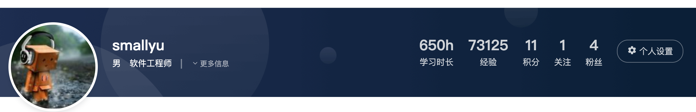
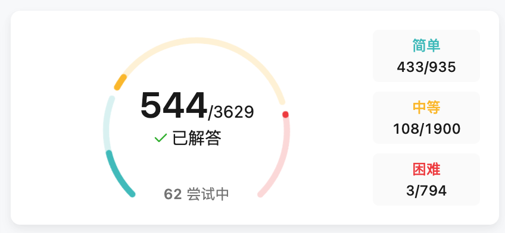
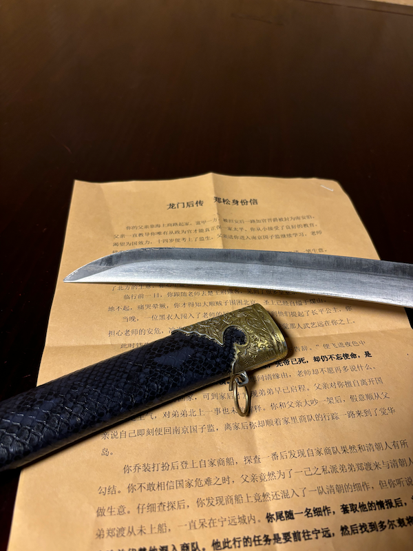
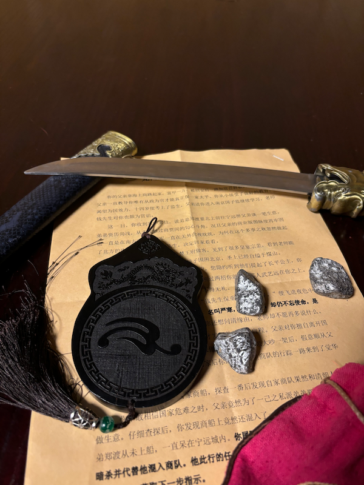
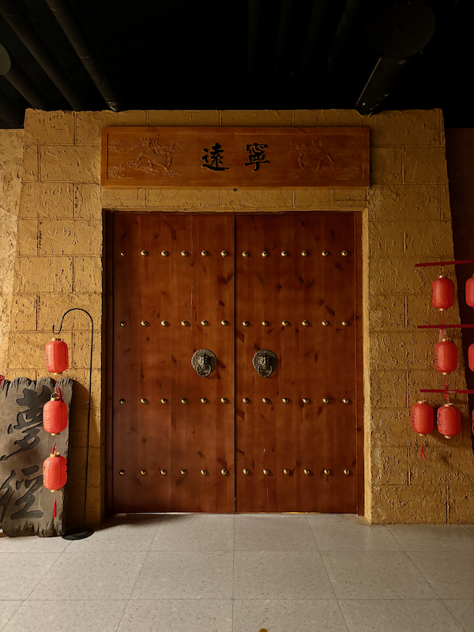
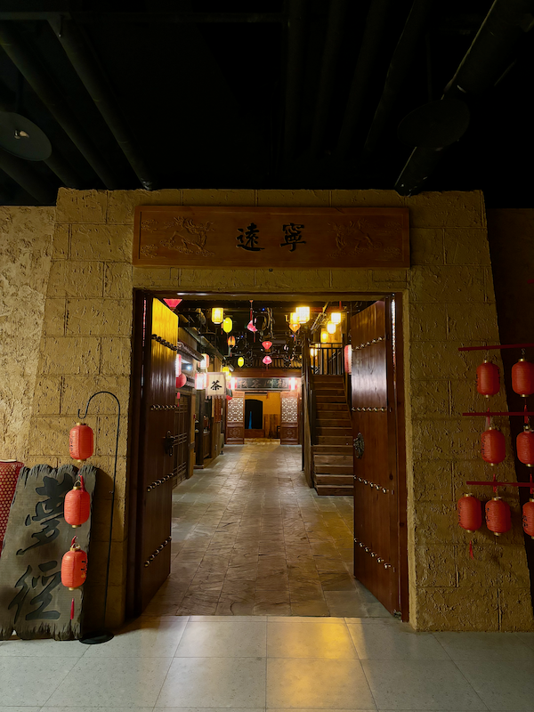
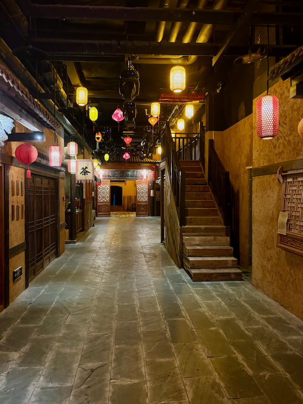

前言
2025.06.18
7 年就是一辈子。从 2018 年在 smallyu.net 上发布第一篇博客文章开始，到 2025 年学习王垠老师的计算机科学课，已经整整 7 年的时间。
这 7 年的时间里，我从大学四年级的实习，到毕业后先后进入 6 家公司工作，再到最后因为裁员而失业，经历了很多有趣或者痛苦的事情，这 7 年是完整的一辈子，也就是失败朋克的一辈子。
失败朋克这个词，来自赛博朋克世界，就像天空里飞着飞船、大街小巷都是亮光闪闪的电子屏幕，而有一些人，在如此科幻场景的世界里，却生活在暗无天日的、拥挤的贫民窟里，过着拮据的日子。
我的博客文章列表，就是典型的失败朋克：谈论着高科技的区块链技术，以太坊、EVM、共识、PoS、去中心化、加密、ZK……一大堆高大上的名词，而我本人的职场道路却非常坎坷，连续遇到糟糕的团队，反复经历裁员、跳槽、辞职、裸辞……居住在很小的租来的房子里，没有稳定的收入，连普通的有尊严的工作都找不到。
某一天清晨从睡梦中醒来，我忽然觉得应该删减一些博客上的文章，于是去掉了所有包含真实信息的文章，只保留了一些纯技术类的讨论，不再提及人生经历、梦想、生活等话题。而这本书《失败朋克的一辈子》，就是那些删减掉的内容合集，包含了真实的公司名称，以及巨大的情绪波动等内容。
为什么是现在做一个总结，而不是去年或者明年？非要说原因的话，大概就是最近学习了王垠老师的计算机学科课吧。我人生中第一次参加培训班，是在大学里，大三一整年，都在坐一小时公交车去培训班上课的路上，那一次的培训彻底改变了我的人生，让我真正踏上程序员的旅程，否则我的职业方向会很迷茫，不写代码我想想不到自己还会做什么工作。
毕业 6 年后，我第二次参加培训班，也就是王垠老师的课，我觉得是一个非常好的契机，能给我一些自信，让我做出一些改变。课程内容会对我以后的学习和工作带来怎样的影响，现在是不清楚的，但是我希望这能是一个好的开始，我也相信在经历了诸多不顺的工作之后，加上最近的学习，面对以后的职业生涯会更加游刃有余。世界上最顶尖的教育尚且体验过了，还担心什么呢？
《失败朋克的一辈子》这本书收录了我过去 7 年的完整人生经历和心态变化。
前世
失败朋克在这一辈子之前，非常早期的文字。那个时候还很小……
莫泊桑《项链》一文中的不合理情节
2014-02-13
高中年级的小说选修课本里有一篇叫《项链》的小说，世界小说巨匠莫泊桑写的，上课的时候就发现有些不合常理的情节，或者说剧情需要，巧合性的情节，现在回忆着写一下。
首先罗塞尔太太丢失项链就是一个相当巧合的巧合。她晚会后匆匆忙忙离开会场，之后顺着马路租车子，然后打车回家，官方解释说这是为后文罗塞尔太太丢失项链埋下的伏笔，罗塞尔太太因为贫穷，所以慌张离开，是为了别人不识破真相。确实是相当精妙的构思，合情合理合逻辑。可问题来了，既然他们穷，那么一定会格外珍惜这串价格不菲的项链，慌忙之中，他们没有再注意一下项链吗？或许可以模糊的理解成他们真的大意了？（剧情需要）
第二个是关于罗塞尔太太陪项链的事。当时罗塞尔太太和她的丈夫几乎已经可以确定项链是找不到了，便决定买一条真的赔给弗莱士杰太太（就是借的项链的主人）。问题来了，它们为什么要隐瞒呢？她们既然已经决定要赔了，为什么不大大方方地告诉弗莱士杰太太真相呢？被身份的卑微和贫穷让他们自卑到不敢说吗？明明白白的说，我丢了你的项链，不过你别担心，我会再买一条还给你的。这样不可以吗？如果这样的话，主人公的命运会怎样发展呢？（剧情需要）
第三个是罗塞尔太太还了真项链之后。罗塞尔太太还项链之后和弗莱士杰太太竟然十年没有见面吗？！原文里说，十年后，罗塞尔太太在街上看到了正在散步的弗莱士杰太太，由于已经还情了债款，便大大方方的上前打招呼。弗莱士杰太太在散步，说明罗塞尔太太和弗莱士杰太太住的差不是很远，原来罗塞尔太太躲了弗莱士杰太太整整十年啊！？（不合常理）
最后一个，让人奇怪的情节。文章的最后弗莱士杰太太揭露真相，说，“可怜的马蒂尔德！我原来的那串项链是假的呀！”问题：为什么弗莱士杰太太要说出真相，告诉罗塞尔太太原来的项链是假的呢？她完全可以不说出来，把那条项链据为己有。现在说出来了，猜猜罗塞尔一家会要回项链吗？当时是资产阶级横行的时代，况且可以让罗塞尔一家还十年的债务，也不会是小数目，就算弗莱士杰太太再富有，谁会嫌自己钱多呢，为什么要说出真相呢？为什么呢为什么呢？（剧情需要 不合常理）
（来打酱油的）
《第一传说》
2014-06-20
简介
网游时代浩然崛起，风靡全球，群雄争霸，谁主沉浮？
一身宠爱万千威望，极品菜鸟，超级大神，认谁作主？
仙侠战争时空穿越，古时今日，天上地下，屈指谁赢？
第一卷 风雨初程
001 游戏开服
现如今，人类社会发展的必然过程中，随着恩格尔系数的不断下降，世界物欲横流的特性反而变得不怎么明显，代之而来的是文化娱乐、精神生活日益提上议程。由于网络通信传输、计算机制作技术的高速发展，广大高端科技成果也越趋于平民化，商家的竞争则更以用户体验为主要动力。
新时代的发展，自然需要新一代青少年来给经济脉搏灌输新鲜血液。在日常生活日渐电子化的背景下，电子游戏免不了轮番出现，制作更加精美，效果更加震撼，经久不衰，毁人不倦，残害了一代又一代青年。谁都无法避免以网络和应用软件为载体的游戏的泛滥，甚至已经有国家立法明令禁止厂家不被允许制作、传播、销售游戏软件，但游戏和软件没有明确的界限，小型办公室游戏、文字游戏、网页游戏等等依旧出现。
任何科技成果都是一把双刃剑。游戏本有着愉悦、放松身心的优点作用，可以在工作之余缓解紧张的心情，但对一些放弃工作放弃学业，整天沉迷游戏的人来说，就具有了很大的威胁，尤其是内含暴力、色情等不健康内容的游戏。地方政府插手干涉也无从制止。为了解决这样的现状，国家的力量最终出动。联合多方意见，初步制定用疏导的方法进行管理、控制局面的方针。说来奇怪，想要消除游戏的负面影响，却开发了一个游戏出来——
《第一传说》，天联公司呕心沥血耗费亿单位资金倾力打造，世界范围通线网络游戏。
举国上下，几乎所有人都感受到了这款游戏的非同寻常。首先是它的宣传，光宣传就历时五年，街道的墙壁上铺天盖地是第一传说的海报，超市、大商店、小商店，公共厕所的墙上都是它的贴图。大众媒体就更不用说，电视的各个频道、电脑上的各个网站、广告，第一传说的踪迹遍布整个世界。上到四五十岁的中年人，下到四五岁的小孩，闲谈之余难免聊到游戏，第一传说就成了风头浪尖的话题，其它游戏貌似变得逊色。
尽管第一传说的宣传效果如日中天，但第一传说游戏本身并未发行销售，也没有上线应用，连公测的消息都没有，内侧就更别说了。话说回来，虽然国家插手此事，实质上也不过是一次商业行动，并非实际意义上的政治行动。天联公司，是由世界商业巨头、联合多个发达国家的企业大亨，联手组合的一个活动性集团公司，取名天联。天联公司高调上市，经济实力本就强大，首屈一指，影响到世界范围，国家想不干预都不行。
第一传说一直在调动人们的积极性，从海报到图片，再到宣传片，最后是游戏实景，内容大多都是游戏里面或者反映游戏主题的一些东西。天联公司的成立本就吸引众多目光，第一传说的关注性可想而知。直到之前的一段时间，天联公司官方网站一条消息犹如重磅炸弹传播蔓延开来：
《第一传说》两个月后正式上线！
网站是必不可少的，天联也有官方网站，用于发布一些游戏相关的消息，宣传画什么的有很多都是从网站上来的，网站上也有论坛，游戏还没上线就已经很火了，大多是一些讨论游戏会有什么内容、询问游戏什么时候出的闲话。
重点不是网站，是消息：第一传说终于要上线了！盼天盼地盼星星盼月亮，谁都想看看这第一传说有什么靓人之处。这一消息，当然激起无数热血青年的兴致，游戏时间具体在两个月后的某天晚上8点，除了发行时间，官方没有其他任何关于游戏的咨询，只有一句“一切敬请玩家自行探索”。
同时，论坛上议论大起，游戏体裁是热点之一。到现在天联都没有透漏游戏是什么体裁，仙侠？军事？还有热点就是关于游戏角色的讨论，游戏视角、游戏情节，都是讨论的对象，但所有人都知道谈论是没有用的，游戏就快发布了，万众一心齐心协力期待两个月后的某一天。
时间匆匆，天联公司开始销售第一传说游戏账号。不详平常的一些游戏，网上注册就可以玩，第一传说的游戏是通过第一传说专用插卡扫描仪连接主机后，才可以用自己惟一仅有的账号登陆。用来和主机连接的插卡器可以公用，但账号卡是唯一的，买账号卡还需要身份证，一张身份证只能买一张账号卡。这样一来就苦了没有身份证的孩子们，不过办法还是有的，可以拿父母的身份证。身份证验证注册账号制度只是为了防止一人多号的情况，虽然不可避免，但总要想办法较少。身份证本身没有任何标识作用。
天联旗下分店账号卡销售窗口前，车水马龙，长长的队伍排出两条街外。第一批账号卡数量有限，大陆限量10万。物以稀为贵，虽然玩第一传说还需要买专用的读卡器，但读卡器管够，况且已经有网吧准备了不少的第一传说专用读卡器，很多玩家都没有为读卡器发愁。倒是账号卡，账号卡才是真正抢手的东西。而且，人们都会有一个常识，那就是像账号那种有编号的东西买越早越好，大概迎合了人们的虚荣心理吧。
在首都、沿海地区等一线发达城市，账号卡开售两天就被就被抢购一空，二三线城市也毫不逊色，账号卡卖得非常快。开售当天，那叫一个壮观，场面比春运买车票还惨烈，有的人开售前天就蹲点去了。不过，那肯定是有钱人的做法，如果是一个屌丝，无车无房无钱无女友，会傻到支付不少的金钱去玩一款潮流网络游戏，并且开售账号前一天就去蹲点买账号的吗？话说眼前——
夜黑风高，月色妖娆，一个少年偷偷尾随在一个漂亮少女的身后，不时回头环顾四周。漂亮少女长发披肩，T恤衫短牛仔裤，肌肤白晢如雪。少女安静地一路向前行走，好像并没有发现尾随的少年。少年依旧尾行，安静地笑。最终，少女走啊走啊走啊走，走到城市中心的露天广场后，径直走进居民中心住宅区。少年快步跟上。
“咦？”……
好吧，他是来买账号卡的。卖账号卡的窗口就在市中心旁边。由于担心找不到市中心怎么走，于是他尾随一个居民区的人，保险一点。他清晰地记得，账号卡是在那天晚上8点开始开放窗口销售，8点10分，怎么窗口没人呢？来早了？时间推迟了？还是已经卖完了？
铃铃铃！一阵警报声突然急促响起。是卖账号卡需要保安来维持秩序吗？看来这第一传说还真不是盖的，看来自己没有来晚。咦？不对，怎么保安冲自己过来了？
“站住别跑！”
“嗯？”
少年倒也干脆，看到住宅区的保安朝自己过来，撒腿就跑。你叫我站住我就站住，叫我别跑我就别跑啊！
“哼，都说了我是来买账号卡的！”两条腿跑不过四条腿，少年最终还是被抓住了，口舌之战由此展开。他一路尾随人家一个漂亮大姑娘，不被怀疑心怀不轨才怪。少女告诉住宅保安有危险，保安就冲着他来了。
“那你跑什么！”少年那叫一个郁闷，“你叫我站住我就站住，叫我别跑我就别跑啊！”他只好这么说。保安当然不信，直要报警。为了证明他就是买账号卡来的，他跟保安说，那就在这儿等等吧，买了就回去了。保安其实也不想多生事，有个台阶下就行。于是，他开始了漫长的等待。
难道我会告诉你账号卡开售是在第二天早上8点吗？一般来说，保安在值班室一晚上值班，有的值班室里面还有床，可以休息。这里的保安也不例外，抓少年的那几个都是值夜班的，一晚上不睡觉，那是他们的工作。8点到9点，到10点，到11点，12点，保安说，算了吧，回去吧。少年倒好，赌气，一直等啊等啊等啊等，他还以为开售时间推迟了。保安当然更不着急，反正他们晚上也不睡觉，赌气？等？等就等！
有志青年就是这么炼成的，他真的很有毅力，2点,3点，4点，5点……直到早上8点。如愿以偿地，他买到了账号卡，阳光袭来，看着闪闪发光的账号卡发射出金灿灿的光芒，满身疲倦的他会心一笑。保安真的无奈了。
回到家，开门，关门，啪，倒头就睡。（第二天早上8点才开售，怎么没人告诉我丫！）
涛声依旧，销售窗口前排了长长的队伍。高兴的，不高兴的，欢笑的，抱怨的，不时听到有人买到编号靠后、编号不好的抱怨声传来，不过毕竟买到就好，在你抱怨你没有买到好号码的时候，应该想到世界上还有很多人没有游戏账号……或许不会有人知道，这个地区的第一张账号卡，卖给了一个在这里等了整整12个小时的人吧。像身份证一样，第一传说账号卡是按地区发行的，编号分好几个部分，前面一部分是地区编号，后面一部分是顺序编号。
账号卡发行之后，自然就是进入游戏玩游戏了。不知不觉，两个月匆匆过去，游戏正式运营的一天来了。拿出账号卡，红色的“第一传说”四个大字深深印刻在金黄色的账号卡身。插入账号卡，电脑屏幕自动弹出天联官网的页面，大大的“天联网络游戏客户端下载”标题出现在首页。点击进入，像往常下载游戏一样，迅雷弹出窗口，提示下载任务。
很多人都喜欢游戏一开服就进入游戏，第一时间抢注ID。少年自然也不例外，问题是，客户端文件有点大啊，怎么没人告诉他玩网络游戏还需要下载客户端的！眼看游戏正式开始的时间到了：
3！
2！
1！
（上）雪花谣 • 陈缘
2014-10-04
衣带飘舞雪纷飞，伊人红醉点落晖。
城园桃前花色美，月雨情萌不同归。
“红颜薄命？”
师父说，红颜薄命。师母红颜，当真薄命，就在行动当晚，离开人世。
“天注定？”
匆匆忙忙赶到，现场已一片狼藉。战斗声声不息，师父已毫无生气。
“红颜薄命，天注定。”
师母永远地走了，离开了师父。
师父永远的走了，离开了尘世。
寒风凛冽。雪，漫无目的地飘曳。天，黯淡无光，大地，满目苍凉。雪花，遮住眼睛，看不清前进的方向。前行的脚步越加沉重，心头越感迷茫。身后远方，是昨天路经的村庄。
……
“客官，进来坐吧。来碗烧酒暖暖身子吧？”
不由环视一周。客人稀散，红色灯火映照下，小小酒馆倒显得格外温暖。冰天雪地，竟有如此楼畔？多半是信不过的。不过连日赶路，身心疲惫不堪，歇歇也好。不觉伸手握了握身后的宝剑，一把大大的宝剑。
“客官，来，这边坐吧。”
门内柔嫩的招呼声而至，才渐渐把目光转移到眼前人身上。只见从头到脚，一身红装，宽松长袍，轻纱薄绸，带有玉佩沙沙作响，清脆叮当，亮得惹眼，天寒地冻，这般服饰，奇怪足矣。
找个闲惬的角落就坐，解下束缚在腰上的剑鞘。记得当年师父说，还是有个剑鞘行路方便，不好拿，就背在背上吧。况且这人心险恶，以防不测，作为一个剑客，学会隐藏也是一门必修课。
“只有酒吗？”
信手把剑放在桌上，佳人已端酒来。
“只有酒，我这儿啊，可都是好酒。”
放下碗，伸手便要倒酒。
白晢的肌肤展露眼底，红绸薄纱褪下，一段皓腕如霜雪凝恰。抬头，纯美的微笑迎面而来，美，真美，美得像梦中的天使，白里透红的脸，看得叫人发呆。一举一动，一颦一笑，尽让人神魂一炬。
“看我干嘛……好看呀？”浅浅笑意笑容越加灿烂。
“姑娘……免贵贵姓？”
依稀记得，那还是在没有离开师父的时候。师父他，一生只爱一个女人，只爱一个早早就不得不离他而去的女人。那个女人，也非常美，美得如同眼前的红衣女子，让人情不自禁陶醉。
师父第一次讲述他和师母的故事，是在行动的前一天。先准许代称之为师母吧。
师父说，他爱错了人。
……
天地辽，山河娇，夜色妖娆，秋去彩颜凋；
天地辽，山河娇，夜色妖娆，屈指数浪涛；
天地辽，山河娇，夜色妖娆，折花尽逍遥；
天地辽，山河娇，尘缘难断，雪花独飘摇。
……
“歌声婉转悠扬，余音绕梁，浓情心芳，那是一曲《雪花谣》。”
“那个地方，有个美丽的名字，叫做桃花镇。她说，她喜欢镇上盛开的桃花朵朵，喜欢漫漫雪花伴随桃花飞舞自由飘落，便把那小镇叫做桃花镇。名字美丽不？”
“美丽美丽……可是师父，桃树在冬天还开花吗？”
“谁告诉你是冬天了！”
“冬天才下雪……桃树不嫌冷吗？”
“谁告诉你是桃树了！”
“那是什么树？”
“柳树！”
“柳树会开桃花吗？”
“会就是会！”
“哦……”
“师父第一次见她的地方，也有个美丽的名字，叫做幽月桥。她说，她喜欢在月光下站在那座桥上看雪，喜欢月光下湖水泛起的点点涟漪，便把它叫做幽月桥。名字美丽不？”
“美丽美丽……可是师父，都下雪了，还会有月光吗？”
“有就是有！”
“湖水不会结冰吗？”
“不会就是不会！”
“哦……”
“她美若天仙。冬季时节，寂静无声月色妖娆的夜晚，桃花朵朵，银装素裹，纤纤身影正衬雪花飘落。明月下，小桥上，轻轻歌声悠然附和。多么美的场景……美吧？”
“美，美，可是师父……”
“闭嘴！”
“哦……”
云烟雾笼月光寒，雪花纷飞的天气，轻纱薄绸，她只穿单衣。衣带飘舞，歌声飞舞，独自一人，在雪中，在桥上，悠悠歌唱，翩翩起舞。师父被那样的场景迷住，心已飞到九天云浦。
“如果有可能，为她做什么都行。”
醉意红颜，垂涎欲滴，娇嫩的美丽，谁不想要。自古英雄爱美人，更何况是绝世倾城的美人。师父情不自禁。
“只是后来，发生了一些事情。”
一切都发生地太快。转眼间，浩浩荡荡，兵马如潮水般奔涌而至。发生了什么？总之桥的两边已经挤满人马。
任师父怎样呼叫拉扯，她始终不肯离开幽月桥。
为什么？师父不明白。
落得无奈，师父一把将她抱起，想要逃开，逃开那里，离开那座桥。
师父说，他清楚地记得，当时她对他微微一笑。或许是感激，又或许是嘲笑。
师父说，四围已大队人马，想逃开？还抱着一个人？
师父说，那么多人，人那么多，怎么可能逃得了。
师父说，他抱着她。
师父说，她没有说一句话。
师父说，真的好傻。
……
“免贵应该我说！”
“好，那你说……”
“……”
碗里的酒，清澈透明。火光的倒影，是一团冉冉燃烧着的、永不熄灭的焰影。身边，久违的温暖。是红色火光映照红色衣裳显出的暖意，还是红色衣裳倒映在红色酒碗显出的醉意？
“客官，怕我的酒不好不成？”
只手端起酒碗，顿了顿，缓了缓，放到嘴边。
目光穿过黑暗的栈道，落在酒馆的尽头。盏盏油灯闪动着微弱的光亮。光明处更加温暖，黑暗处更加黑暗。突然发现，来酒馆的竟然都是青年人，还大都是行装。
出门在外，不得不小心谨慎。
“姑娘，你到底叫什么名字？”
端在手里的酒，放在唇边，始终没有动口。
也是，这样的天气，赶路的自然都是年轻人。虽说是村庄，总不会有多少人在这样的天气出来到酒馆喝酒。至于赶路的，当然只会是年轻力壮的年轻人。也可能正因为人少，身为老板娘的红衣女子才会有空亲自来招呼吧？
一口下去，碗里的酒已喝掉一半。
“客官，酒怎么样？”
再一口下去，碗里的酒被喝完。
“痛快，来，给您倒上。”
不等开口，一把夺过酒碗，拿起抱在怀里的酒罐，第二次很不熟练地把酒倒满。
纤细修长的手指映入眼帘，慢慢点放在酒碗边缘。一不小心酒洒在桌面，脸蛋变得绯红嫣然。
“客官，酒怎么样，好吗？”
“好酒，好，可是……”
可是终究没有说出来。
“再来一碗吧？”
“嗯。”
其实，做什么都行。
听到师母要出嫁的消息，师父口口声声说要报仇。
雪花飘舞，衣带飞舞，大雪纷飞的天气，没命练武。师父立志要杀掉那个师母不喜欢的人。身上的单衣凛然萧瑟，或许是为了遮盖内心的痛苦。
一般人也就算了，师父一个资深剑客，谁打不过。可这次的目标却不寻常，是一个国王。刺杀，毫不简单。
能赢吗？
当然失败了。就在师母出嫁的当天，师父一早出发，回去已是半夜，结果不言而喻，师父没能改变什么。
其实，能活着回去便是万幸。
“当浩浩荡荡的迎亲队伍轰轰烈烈地路过城市的大街，我悄悄尾随在后，紧盯着在队伍前面的国王，那场面，那叫一个壮观……真是壮观，壮观吧？”
“壮观壮观，可是师父……国王纳妃还迎亲？”
“迎就是迎！”
“那您尾随在后，能看到在队伍前面的国王？”
“能就是能！”
“可是……”
“闭嘴！”
“哦……”
“师父这次忍辱负重回来，就是因为明白了一个大道理，有了一个更加远大的目标，也找到了一个能报仇的好办法。要不然，我还回来干嘛？？死了算了！”
“对对，死了算了……”
“闭嘴！”
“哦……”
自从那天，师父真的有所不同。或许因为就是在那天知道了另一个人的存在——月幽国国王。
师父说，他开始有点明白，为什么师母把那座桥叫做幽月桥，为什么大队人马去抓她时，她不愿意离开那座桥。她没有反抗，不知道是知道自己反抗也无济于事，还是一直在等人去救她？
师父决定帮助月幽国。
进入一个国家很简单，加入一个国家的军队也很容易。师父技艺超群，剑术过人，出头自然也不难。
师父说，想要战胜一个国家，光靠武力是不够的，要智慧。
至于再后面的事情，师父没有详细说。
“客官，怎么不喝酒？”
端起酒碗，放在唇边，没有动口。旁边的佳人，半抱酒罐，笑脸依旧。
下意识瞟了一眼桌面上放着的宝剑，“告诉我你的名字我就喝。”
依稀记得，师父好像说过，师母后来为月幽国国王生下了一个孩子。现在想想，师母的孩子，如果没有发生意外，也该有眼前的红衣女子这么大了吧。
她第三次倒酒。
她的第三碗酒。
师父说，师母非常非常的漂亮。如果当初师母生的是个女孩，恐怕那个女孩也会非常非常漂亮吧，就像眼前的红衣女子一样漂亮。
她仍然没有说出她的名字。
怎么？
身为一个酒馆的老板娘，长得这样娇美,连倒酒都不会？
落座这么长时间，发现酒馆里竟然连个伙计都没有？
……
师父没有详细讲述他在月幽国的那段经历，只是零丁提及。只知道月幽国最终战胜了霸占了师母的千尺国。
可是，赢了又怎样呢？师父依然得不到想要的东西。师母成了月幽国国王的妃子。
是啊，其实师父早该知道会有那样的结局，也或许师父早就知道。有些东西，不是拼命努力就可以换得来的。
于是，再后来，师父收养了我。为什么？师父没说。师父收养我的时候，那些事情已经成为过去。
“客官？”红衣女子笑脸盈然，陪伴身边。
终于有点明白师父当时的心情。——如果有可能，做什么都行。
原来佳人的美丽，如此难以抗拒。
不由在心里默念一句：如果有可能，做什么都行。
可惜，心里清楚地知道，没有可能。
“客官喝酒……”
喝酒吗？已经没有心情继续喝下去。一喝酒，难免会想起那些陈年旧事。
天地辽，山河娇，夜色妖娆，秋去彩颜凋；
天地辽，山河娇，夜色妖娆，屈指数浪涛；
天地辽，山河娇，夜色妖娆，折花尽逍遥；
天地辽，山河娇，尘缘难断，雪花独飘摇。
……
“歌声婉转悠扬，余音绕梁，浓情心芳，那是一曲《雪花谣》。”师父的身影，浮现眼前。
无声无息，透过暖暖的火光，红衣女子手里的匕首，闪着冷冷的寒光，如笑容般迎面而来，悄然而至……
师母是我亲手杀掉的……
数学的重要性
2015-09-27
由于学识浅薄，把数学的重要性概括出来确实有心无力。在百度上并没能直接搜到这个问题的答案，图书馆也没有哪本书是论述高数与通信工程之间关系的。 前些天认识一位大四的学长说，他现在的成绩比较差，很后悔没有学好高数。事实胜于雄辩，高数的重要性可见一斑。
目前对我们来说数学的重要性有两部分，一个是课程学习方面，一个是能力学习方面。
课程学习上。
只要是学校安排的课程，就没有哪门是不重要的。 很多学校都把高数作为公共基础课程，相信那些教育界的老师教授这样做肯定是有道理的，多数人认同的做法正确率就比较高。 高等数学有5个学分，成绩对我们学生来说自然是很重要的，想要有好成绩，就得好好学，如果拿不到高数的学分绩点的话，影响也是很大的，而且考研数学中高等数学好像要占60%左右，所以这是高数重要的一点。
能力学习上。
首先通信工程专业是要求学习C语言的，对编程来说，最重要的就是数学。 看一本书《C++从入门到精通》，其中序言里面有一句话:"程序主要是用来完成计算的。"从书里面的教程也能看出来，一开始是将数据类型分类，然后介绍各种运算符、进行各种逻辑计算，当然很重要的一部分内容就是函数的使用。 不只是C语言，像PHP、JS等其他编程语言也都大量用到"函数"这样的概念，虽然程序里面的函数不只是进行数字的计算，但自变量、因变量这种关系对应的原理是恒定的。 在数学运算中，一丝不苟是重要的，一个数学或一个符号写错就会引起结果的错误，而编程中只要写错一个字符程序就会运行错误，数学对我们能力的培养也算是专业素养上的契合。
由于并不是很了解通信工程这个专业，只是开学后有一节课提到，这个专业差不多是和模电、数电、单片机、DSP等有关的。
和电有关的话，就离不开三角函数和它们峰值的计算。
无意间翻到叫《超声波电机的原理与设计》的书，几乎看不懂，也不知道和我们专业有关系没，前面一部分在计算等效电容时就用的时间积分来计算。 另外，《通信原理》类的书里，尤其是信号的那部分，大量用到了带着积分那个符号的函数关系式，起码可见微分和积分的应用广泛。
我想，在我们更深入地学习数学和专业知识后，知道专业中会出现什么问题，高数可以用来解决专业中什么样的问题后，再来思考这个问题，一定会有更多的收获。
学号:152027114
smallyu 的旧博客
2017-08-31
2016-05-23 至 2017-08-31 的旧博客:
碎碎念
成长道路上总会有一些迷茫的时刻，也会有一些胡说八道的内容。
生而为人，却想成神
2019-02-12
从哪儿说起呢？
生而为人
打开各类新式社交APP，匿名聊天、剧情推理、角色扮演，花样很多，如果投入进去，也能找到些许乐趣。然而这些应用的使用者，大多是00后。想起当年90后还未长大，飞信还活着的年代，各种WAP网站，资讯、论坛、自助、文字页游，社区里还充斥着所谓家族的群体，大家热衷于讨论在线浏览器、免流方法。那个时代已经过去了。
赞叹《忠犬八公》里狗的演技，《一条狗的使命》也另辟蹊径，从狗的视角阐述它一生的经历。有人提到，影片中狗的四次生命，分别对应人生的四个阶段。一开始单纯懵懂，快快乐乐；之后进入工作，生活枯燥，像是失去了一些东西，空空落落；然后是无言的陪伴，生活平淡，身边是家人、朋友；最后生活进入绝境，变得绝望，返璞归真，开始寻找最初的……
《洛丽塔》是一部讲述少女与大叔禁忌之恋的影片。大叔租了一所公寓，公寓中只有单身母女，大叔喜欢上了未成年的女儿，母亲则喜欢上了大叔。母亲是房东，威胁大叔，要么和自己结婚，要么离开公寓。大叔为了能再见到女儿，和母亲结婚了。名义上，大叔已经是女儿的父亲。然而大叔和儿女发生了各种不可描述的关系……
修养有限，在今年的贺岁电影《疯狂的外星人》里没有看出某些深刻含义，本来就是荒诞喜剧。但却在观影过程中，诧异于两个屌丝主角没能把外星人的能力变现，他们明知头环拥有力量，却没想过自己占有那份力量。可能是我太自私，只想到自己。不过从结局来看，经历过一系列波折，起起落落，外星人走了，开着飞船，把一仓库的酒都带走了。然后呢？卖酒的卖酒，耍猴的耍猴，生活还是要继续。
何必成神
王垠是我钦佩的程序员。前段时间，他在博客中提到，他正试着做一些改变，比起“垠神”，现在更乐意别人叫他“老王”。很庆幸可以通过网络，了解到这样一位有思想的技术专家。
一个表哥在帝都生活工作多年，最近打算回老家发展。在亲戚朋友眼中，他算混的不错的一类人。早已成家，女儿很可爱。几次接触来看，情商很高，因为是销售出身，会来事，但某些专业能力稍有欠缺。也因为身后庞大的负担，一些小事上表现的不是很慷慨。“北漂的结局有哪些？”也许有上限，没下限。
一个表姐嫁到某二线城市。第一次到家里做客，是在较偏远的旧式楼房里，没有电梯。表姐的家里人，在十八线县城租房子住着。也许是便宜，没我目前租的房子好……
平庸的人始终平庸。正因为能看到未来，所以才惧怕未来。知道努力也改变不了什么，但仍然需要努力。
或许若干年后，我可以向某个人讲述我的所有经历，好的坏的，我希望的，我绝望的，我讨厌我的生活，我也喜欢我的生活。
你若盛开
为什么我不再迷信技术？因为我发现，技术无法成就一个“完整”的人。
关注生活，学会生活，因为活着，就是生活，可以精彩，可以失败。
最近脑海里闪现“自我救赎”四个字。生活可能有惊喜，但不会有奇迹。让人难过的是，惊喜也往往是人为制造的。
很久以前有的一些情绪，现在已忘记很多……
要是能重来，你会怎么活
2019-03-03
如果能够带着现有的记忆重新活一次，我的人生将……
人生道路上，有些事情可以改变，有些事情受生长环境制约。我们面临过很多次选择，有的选择由长辈代劳，有的选择由自己的意愿左右。如果当时做出了不同的选择，我们的人生会发生哪些变化？
夏洛特烦恼算是重新“活过”的故事，武林外传也有一集，讲各自满足自己的幻想，重新“活过”的情景。这两部影视作品中关于重新“活过”的桥段，结局是相似的，认为在经历了种种之后，还是现状比较好。也不知如此的结局，是真实的，还是两位作者都不约而同向生活妥协，本就无法改变，倒不如让自己接受的痛快，活的自在。
回想自己以前做的事情，在最优的选择下，能够获得些什么，便可以知道自己荒废了多少时光；整理现在自己做的事情，在完成度最高的情况下，可以达到怎样的高度，就能知道自己以后的时光该如何努力。
像单机RPG游戏，每升一级就有新的技能点，但技能树上的节点繁多，满级也只能走到某一个分支的尽头。我们必须在低等级，不了解游戏的情况下，选择一个分支，然后等分支到头了，我们就知道加哪些技能好玩了。不过可惜仅此一次，因为游戏已经玩过了。
时隔（仅仅）两个月回到学校，却有了物是人非、恍若隔世的感觉。变了吧，也都没变。遗憾呐，确实有遗憾。
我为什么想要“行万里路”
2019-03-14
微信朋友圈
首先这不是一个正确的想法，是典型的做什么决定想什么，而不是想什么就去做什么。
我在朋友圈发过一些景点的照片，这件事情会持续下去，大概1年左右的时间。按1个月3个景点算，1年大概30个景点。帝都稍微知名的、免费的景点也就差不多了。这些景点信息收集自网络，是网友关注并推荐的地点。1年后收入有增长时，会考虑收费（￥19.9以上）的景点。
在某个过渡期间，我的三观开始崩坏，也需要重塑。其实“观”有很多，除了世界观、人生观、价值观，还可以有事业观、婚姻观、饮食观、出行观、打游戏观等。我想见到更多的人，看到更多的事。看看国内顶尖的建筑，看看上万人趋之若鹜的风景。想想身边的人为何而来，会怀着怎样的心情离去。我还记得在太原市图书馆见到的志愿者队伍，都是老大不小的工人，虽然穿着制服，但看得出来他们的出身，猜得到他们的工作，因为那真是熟悉的身影，在宽敞明亮的大厅里不知所措、唯唯诺诺、格格不入，如果你在农村生活过，就会明白。我也记得在道馆里认真参拜神仙的香客，烧香、磕头、许愿、捐钱，让我不得不思考宗教信仰的力量，因为我想许愿，却发现没有愿望可许。我还发现外国大叔见到你真的会点头微笑。
我曾在QQ空间发过一些观点鲜明的内容，不知道有什么好的坏的影响，也无所谓知不知道。一方面不想再维护QQ空间的内容，二是我赞同“谦虚不是美德”的观点，所以有些内容可能不够谦虚，但都是实话 :p
我认为作为接受过高等教育的90后，应该有并且能够容忍甚至接纳新的、奇怪的、特立独行的想法。我们只是独立的、渺小的个体，有可能下一秒钟就会发生意外，也有可能我们会做出在别人眼里是异类的行为，或者我们原本就是别人眼中的异类。几百年前一只跳蚤或一滴水就可以传播瘟疫，贸易船只上每个奴隶身上都可能携带致命的细菌，人们对此类疾病一无所知，求助于僧侣和医生，洗冷水澡、用柏油擦拭身体或是将黑甲虫碾碎涂抹在伤口，却毫无功效。疾病从个体感染到整个家族，蔓延到整座城市，成千上万尸体腐烂在街头，人们将原因归于神灵发怒、恶魔作祟，寄希望于天使或仙女，政府对疾病束手无策，只能组织大规模祈祷和游行。死去或幸存的人，他们也都是有思想的、独立的个体，和我们一样。
微信好友的群体与QQ不同，也曾想过目前朋友圈的内容是不是很low，于是在虚荣心和真实之间犹豫。显然现在选择了后者，并且这里的内容也将作为外链第一次被分享到朋友圈。
博客
我的博客经历过多次建立和销毁，上一次的数据还有备份，但是主机因为科学上网被墙了。每次都想写一些值得写的东西，后来发现要写出不让人后悔的东西太难了，就像看到QQ空间以前的说说，会感到脸红想要立刻删掉一样。有些比较无聊但又想写写的东西，像“在XX平台运行一个XXX”、“XX框架/工具的Hello World级demo”之类，会发到另一个平台 语雀 上。
博客主题仿自王垠的博客 当然我在扯淡 ，我在 生而为人，却想成神？ 中有提到过对王垠的敬佩，除了极高的学术修养外，他对很多事情都有独到、精辟的见解，是真正有独立思考能力的人，光是这一点就远超常人，那也是我努力追求的可贵品质。
从 北京，北京 开始，似乎很多技术无关、也没有明确观点的内容。当时多次提到独居的概念，独居并不意味着孤独，而是你可以变成任何你想变成的样子，做任何想做的事请，是一种机会。技术相关的问题会连同其他问题一起重新被审视。技术能力的好坏取决于你有没有用过React或Spring Cloud吗？绝对不是。那又是什么呢？
如果现在一心关注技术，就像在学校临近毕业的一年，技术一定可以有增长，但那样就没时间也没心情做其他事情了。就像当时我如果懂得其他事情，而不是只关心技术的学习，某些事情一定可以处理的更好，但就不会有超过同学的技术能力，可能现在还在这互联网寒冬之际跑金三银四的招聘会。二者不可兼得，不同的选择会面临不同的人生，这也正是我在 要是能重来，你会怎么活？ 想要探讨却没有具体阐述的主题。那么，现在该怎么选择？
最后
这里是我的博客，网址是 www.smallyu.net ，会更新一些和任何人无关的内容（如果你认为和你有关，请屏蔽我）。smallyu可以理解为中英混拼，也可以将YU理解为专有名词，在域名中小写，所以有了smallyu的英文拼写。其他文章页面并没有返回首页的链接，但是这次你可以点击这里 返回首页 。
大学毕业是什么体验
2019-06-30
李诞写的一本书《笑场》的序言里有一句话：“人生确实没有意义，但人生有美”。
相同的错误
其实我早就“毕业”了，只是现在才领证书。当我没有挂科记录的时候，当我开始实习的时候，我的学生时代就已经结束了，虽然好像不曾开始过。学业上，可能唯一的遗憾是英语四级（CET 4）没过。也许你会觉得可笑，我也感觉可笑。临近毕业，学校有一个大学四年的综测成绩，我期末考试从没考过第一，但四年下来的综测竟然可以在班里排第一。当然，我们班成绩整体很差，但这不重要，重要的是将近1/2的人可以考过425，我却只有423。
大学刚入学的几天，我曾在笔记本上写过几天日记，整理东西的时候翻开，其中有一句话让我感到吃惊：“我是来学习的，不是来娱乐的”。我自然可以理解当时是什么心情，高三的一年时间里，只有我自己知道我做了什么。高三开学摸底考，我考班里倒数十几，直到后来各种模拟考高考，我可以保持班里前三。不要对这样的排名感到诧异，这就是小县城的真实情况。也正因为这样的经历，我怀着不那么正规的求学的心，开始了大学生活。
就在前段时间，我陷入了同样的思维困境：“我不是来娱乐的，我是来工作的”。因为没有带着游玩的心上大学，所以大学的时光里，我的成绩可能不那么差，技术能力也有所增长，总体而言，是远超部分同学的。但也正因如此，我错过了很多娱乐的机会，甚至我大学所在的城市，都完全不了解，景点、场所等。更重要的是，我错过了非常重要的人，错过了曾经弥足珍贵的机会。现在我已经学会如何爱一个人，可是没有人再需要我去爱了。
所以你可以理解标题“相同的错误”是指什么。我从半个月前开始规划要写的内容，原标题是“关于职业生涯的规划”，后来觉得职业生涯这个范围太小了，无非是认真工作、好好生活、工作和生活平衡。事实上生活本就不需要规划，规划了也没用，我们应该时刻保持清醒，现状如何，未来会怎样，想要的是什么。总的来说，该有的想法是：“我不是来混日子的”。
一拳超人
我换了个头像。他说，“我变秃了，也变强了”。琦玉因为感兴趣而当英雄，不是为了被更多人认识和崇拜，也不是为了英雄协会的丰厚待遇，仅仅是因为想当英雄所以当了英雄。可以说，我从事某个职业，也不是为了别人眼中的各种评价标准，仅仅是因为我从初中就开始积累的某些兴趣，让我想要在这条路上继续探索前行。
琦玉的强大是莫名其妙的，即使他把变强的过程全盘托出，你也无法达到他的高度。就好比学霸告诉你他上课如何听讲，作业如何完成，你也无法成为下一个学霸。一拳超人变强大唯一的代价，就是头发变秃了，直接变成了光头。我发现这一点和程序员类似，如果一个程序员因为工作把头发搞秃了，那他往往是大牛，并且即使他把方法告诉你，你也无法轻易超越。不过即便如此，也并不应该阻碍我们对强大能力的向往。
毕设和微服务
我的毕设以微服务为标题，但由于我们学校对毕设和论文的要求之低，我并没能完成自己心里的目标，只是应付老师，蒙混过关了。微服务本身是一个很简单的概念，难点往往在于如何在大型系统中实现微服务。在大型系统中进行任何操作都步履维艰，微服务并不特殊，因此，微服务是简单的。关于注册中心、配置中心、负载均衡、断路器什么的，可能在不久的将来，这个博客上就会出现关于它们的文章。
学习应该关注本质，是抽象的，我更希望从高的层面去理解技术，如果只是学习Kafka怎么使用而不关心像Kafka这样的中间件都在解决什么问题，这个世界就太无聊了。结合实际工作的内容，我的下一步计划会聚焦在中间件、区块链和算法上。
博客存在的意义
（写到这里，发现自己没有耐心继续写下去。有些内容的输出需要同理心，也就是“当时是什么想的”。这半个月来发生了很多事情，但是现在已经结束了，并且我将面临新的生活和挑战。我的心态回不到过去，也不愿停留在过去。可能剩下的内容将无法完成。）
（这个附件 关于职业生涯的规划 是之前写的大纲。）
宜怀旧 · 近期微博内容归档
2020-06-26
一些简短的想法好像更适合实时记录在新浪微博（简称微博）这样的微博平台上，而不是直接或者总结后发布到博客里，博客对内容的定位似乎稍微有点”重“。
不过微博的内容质量实在是太差了，我尝试过多次打开微博后随便刷一刷，劣质的信息流让人无法忍受。而且微博有两种罪恶，一是能接受的“尺度”太小，我的网名 smallyu 仅仅因为包含"sm"两个字母，在微博的搜索引擎上就无法通过我的用户名搜索到我发布的内容，这很奇怪，也就是说任何包含"smile"、"smart"之类单词的网名都不能正常显示在搜索页面上，这种问题绝对和技术无关。微博的罪恶之二是用户会受到平台的干涉，崔永元在 Youtube 上开通了账号并时不时发布短视频，有一次提到说他在微博有两个账号，两千多万粉丝，但是忽然就不能发布内容了，没有给出任何说明，就是发不了内容，新浪微博不让发，所以现在开始用 Twitter 和 Youtube 了。
相比之下 Twitter 确实好很多，阮一峰的科技爱好者周刊 111 期里有个故事，Twitter 几乎给了用户最大限度的自由：
一个推特用户做了一个实验，注册了一个帐号，特拉普发什么推特，他就发一样的内容，不是转发，而是原文复制，除此以外不发其他内容。
结果，推特官方三天就注意到了他，关闭帐号12小时，要求他在这段时间内删除违规言论。同样的话，特朗普可以说，你说就不行。媒体报道这件事以后，推特恢复了这个账号，并说关闭帐号是一个"失误"。
想起来关于工具的选择的另外一个事，deepin 论坛里经常有人推荐360浏览器，我曾经也非常喜欢用360的浏览器，尤其是360极速浏览器，是一个基于 Chromium 内核套壳的浏览器，里面有一个自带的手势操作的功能，按住鼠标右键在浏览器窗口上划拉几下就能便捷的操作页面了，前进、后退、新建标签页、关闭页面、滚屏、滑动到页面顶部，等等，很好玩。直到后来有一天，国产浏览器集体封禁 996.icu ，我决定再也不用国产浏览器了。
我不希望继续使用新浪微博了，Twitter 对内容几乎没有限制，UE也很好，但是毕竟和我们隔着一堵墙，网络环境总有点差强人意。至于怎么安置内容不是很多的短时间内的想法，得再想想办法了。前段时间本想在微博里“制造”一些看起来“正能量”一点的东西，后来有点跑偏了，不过原则还在，也就是只提”技术无关的话题“。
这是最近一段时间的微博的内容，按照时间正序归档到这里。
5月4日
亲情是一种糟糕的情绪，它会让人有难过的感觉。
5月5日
租个小房子，都不知道天是几点亮的。
5月7日
有时候觉得生活糟透了，会不会以后也这样。
有时候觉得生活糟透了，好像前一段时间也这样。
第一次听到的让人心情激动的歌，再听就不觉得多好听了，第一次吃到的很好吃的麻辣小龙虾干拌方便面，再吃就没有太大感觉了。这是一种惩罚。
5月15日
我们都习惯于在游戏里做主角，在影视剧里做英雄，但是把我们放回盛唐，我们做不了李白，也成不了捉妖精的白居易，我们只会是一介平民，在历史上不配留下姓名。
喊加油的人是比较轻松的，在赛场上拼搏的人压力才最大。所以加个油算什么贡献？
5月16日
王者荣耀删了又下，下了又删。删掉是因为浪费了太多时间，下回来是因为时间浪费在了别的地方，还没有得到好的娱乐体验。
5月17日
现在的人，一旦微信拉黑就是真的绝交了，没有任何再挽回的机会，因为除了微信，没有其他方式可以联系到它了。住址更是无从得知。
5月18日
自得其乐也是一种生活方式，有梦想有追求也是一种生活方式。
5月20日
只有只有你知道，别人不知道的东西，才有价值。
5月26日
“没心没肺的人睡眠质量都高。”
5月27日
听歌的时候，如果突然听到一首好歌，后面会开始逐渐变得不耐烦，期望再遇到一首好歌，切歌变得频繁，但往往再难听到心动的歌。甚至切过很多的歌后，只好回头再去听当初的歌。
5月28日
《像我这样的人》
5月29日
一局不想赢的游戏，好像就变的不是那么好玩了。
流量限速了，早上听歌的时候，QQ音乐停在开屏页面进不去，因为开屏广告一直加载不出来。加载广告已经成了QQ音乐必需的一部分。相反网易云音乐就好一点。
听到一首好歌的另一面是，提高了对烂歌的鉴别能力，只要听一下前奏，或者一开口，就知道不是自己喜欢的类型。
6月3日
百丈怀海有一次陪马祖大师外出，看见一群野鸭飞过。马祖问他：“那是什么？”怀海说：“野鸭子嘛。”马祖又问：“飞哪儿去了？”怀海说：“飞过去了。”马祖闻言上前，使劲拧怀海的鼻子，疼得怀海大叫。马祖说：“叫你还说飞过去了！”怀海当下大悟。
马祖的意思是：野鸭已经飞走了，你还在心里记挂着。
因此想起慧海禅师的故事。有人问慧海，他是如何用功的。慧海说：“很简单，饿了就吃，困了就睡。”那人说：“人人都是一样，这算什么用功。”慧海说：“不一样。”那人问：“怎么不一样？”慧海说：“他们思虑重重，吃饭时不肯吃饭，睡觉时不肯睡觉；我不然，我是该吃饭时吃饭，该睡觉时睡觉，这就是不同。”
——《读者》
6月4日
有时候不好分辨一个人是真的有水平还是只会晃荡，想起以前的一个老师说话，有几个我早就注意到的经典的技巧。
让人觉得自己厉害的话术（一）：
1. 谈起自己和某位“有位置”的人的对话、经历，可能只是很简单的对话、很简单的来往，但是一加上什么什么主任的头衔，就感觉高大上了一点，什么时候见到什么主任在干什么，然后说了是什么话，计划要干点什么，让人感觉讲话者和主任的位置是一样的，有来往的关系。
2. 谈话的时候引用“有位置”人的话，尽管这些话可能很简单甚至没有道理。“我说的大概就是这个意思，就像什么主任说的，xxxxxx”。一方面体现了讲话者和他人来往密集，有观点的交流，另一方面，引用别人的话不好反驳。
3. “制造”榜样，说自己以前教的某个学生现在如何如何厉害，借用他人能力来抬高自己，让人感觉教出来的学生都那么厉害，这个老师肯定更是厉害多了。
4. ……
买过很多次蓝牙耳机，一开始买的都是几十块钱的劣势的那种，几乎都能勉强用用，能听到声音，但也几乎都会存在各种各样的问题，左右音量大小不一样、有杂音、距离稍微远点就没有声音或者断开连接、容易被周围的磁场干扰等等，耳机的音质也很奇怪。后来因为无法忍受这些小问题，就买了一个Redmi的运动蓝牙耳机，虽然也不贵，但那些小问题通通不见了。
用过之后，很难说Redmi的蓝牙耳机有多好，但明显能感觉到的是，同样很难说有哪儿不好，起码没有那些糟心的问题了。所以其实好用不一定要有多好的体验，能够避开体验差的地方，本身就是一种好了。
以前用安卓手机，时间长会速度变慢是一方面，各种系统应用无法卸载、系统的操作界面上各种广告、权限无法控制，有的应用随便给你发通知，有的应用想收通知都收不到、屏幕亮度和色调……能够避开这些用户体验不好的地方，就算是一种好了，你可能说不上苹果比安卓好的地方，因为苹果可能确实没有比安卓好多少，只是少了非常多不好的地方。
6月5日
不会有两种，一种是学过了，没学会，另一种是没学过，或者还没来得及学。
解决不了问题也有两种，一种是遇到过，或者正在遇到，解决不了，另一种是还没有遇到过。
对于没学过和还没遇到过问题的情况，很难直接判断一个人的能力，所以就需要拿以往的一些事例来证实一个人有相应的能力，比如学会过什么东西，解决过什么问题。
按照这样的思路，学历是事例的一种，有过学历，说明你学会过一些东西，类比推断，你有能力学会其他的一些东西。
工作经验也是事例的一种，有过解决问题的经验，说明你能够解决一些问题，类比推断，遇到其他问题时，你同样可以解决，所以你能够胜任某些工作。
6月8日
PPT 演讲的主要内容有两种，一种是观点，对待某个问题的看法是怎样，原因是什么，为什么会有这样的观点，然后参会者有什么疑问或者不同想法，交流一下。另一种是案例，就是讲故事，背景、起因、过程、结果、总结，让人听故事，自己的事或别人的事，然后得出一个小结论，过渡到下一个观点或者另一个故事。
第三种内容是在 PPT 上写大段文字、理论、公式、技术方案，然后照着 PPT 读，跟讲课一样，指望能教会别人什么，这种做法显然是不可取的。
meetup 更像是一种技术交流会，大家平等的参与对话、交流技术问题，主讲者负责提出话题，其他人负责讨论。PPT 只是辅助主讲者表述话题的工具，是次要的，真正的价值还在人身上，看有没有观点，有没有案例，引出的话题是不是有足够的讨论性。
6月10日
最近睡眠不好有点头晕，精神恍惚，突然想起来以前的一个大学同学，疯了……起码是有一些精神上的问题的，可能那段时间压力大，也可能那段时间经历了一些失败的事情，也可能那段时间没睡好，成为了精神失常的导火索。在精神状态不好抵抗力薄弱的时候受到精神上的打击，可能很危险。
精神失常是一种很常见的现象，是在某些特定的场景下很容易陷进的迷沼。回想上初高中的不太光彩的日子，其实也是浑浑噩噩不清不楚，做出来的事情缺乏理智，像未开化的原始人一样凭借原始的冲动说话做事。
《洛丽塔》、《穆赫兰道》、《Hello！树先生》、《小丑》这种精神分析片，基本上都有一个共同点是把真的和假的混在一起拍，作为观众无法直接区分，但是在有了分析影片的要是之后恍然大悟然后细思极恐。假的事情可以和真的一样，即使没有真的发生，你的意识认为发生了，就是发生了。所以我们是否也是患有精神疾病的人？我们经历的事情是否真的确实发生了？如果我们已经进入了精神世界的迷宫，该如何找到出口？
6月17日
前几天吃饭，想起来关于酒桌文化的问题，中国人喜欢喝酒，越醉越好。
为什么想要别人醉呢，因为想要别人出丑。
可对方是客户、是朋友，为什么想要朋友出丑？
因为大家其实都很丑陋。
有的人外表光鲜亮丽，金玉其外，但实际上大家都是人，都会有点破事，都半斤八两。
喝酒，就是想让人把这丑陋但真实的一面表现出来。
你也表现，我也表现，互相知根知底，关系就变亲密了，生意就好谈了。
6月22日
走在路上听歌，发现一首歌有点好听，但也不是特别好听，歌是好歌，原唱是烟嗓男声，撕裂的感觉，这个翻唱是女声，有点软绵绵的，好像没有原唱那种爆发力了。纠结了很久，从歌一开始直到歌曲快结束，经过一系列痛苦的挣扎和思想斗争，终于决定还是把这首歌添加到收藏列表，点个小红心。打开手机，解锁，进入网易云音乐，点开播放界面，小红心亮闪闪的杵在那里，原来这首歌已经在收藏列表了。
什么样的歌算是喜欢的歌？列表里的歌随意播放，能够引起你注意的应该就是了。可能是某一段音乐、某几句歌词、某一种声音，或者听的时候想要知道这首歌是什么歌，或者……就是在你走神的时候能把你拉回来，让你把注意力放到歌曲本身上面。
所以，知道喜欢什么样的东西之后，就能够确保不会错过喜欢的东西，避免永远忘记这个本可能是你喜欢的东西，避免第二次遇到才明白自己喜欢的悲剧。
包括人。
6月24日
上周末和一个同学吃饭，颇有感慨。以前在博客上用一些篇幅提过这个同学的事情，如今我肯定不会主动拒绝别人的好意。这次见面，总的来说没有太多惊喜，想法还是以前的想法，做的事情基本上是意料之中的事情。有时候也想仔细分析一下他的人物性格，但又觉得不应该占用更多篇幅了。提几个点吧：
1. 感觉没必要过早“成熟”，想着赚钱、买房、结婚……反正我不喜欢。
2. 如果一个人能够经常而不是偶尔带给你启发，那么他的思维能力高过你。
3. 有时候觉得“难”，也许是消费超过了自己的承受能力，重点在于消费的起因，是自己的欲望、外人的压力或者别的什么。
6月26日
最近打游戏发现一件好玩的事情，暂且可以把它称为“神秘的鼓励的力量”。
每次开局后，我都会发一条全局消息：“我们家XXX很厉害，你们小心点”，一开始仅仅是恶作剧，把所谓的队友放在了自己的对立面，感觉自己和对面是一伙的，有一种莫名的快感，卧底、破坏、当坏人。但是后来慢慢发现，也许是错觉，每次我说厉害的人，战绩都不错。
我消息里说到的厉害的人有两种，一种是真厉害的，（当然我经常挑段位高的说，毕竟匹配到的人从青铜到星耀都有），另一种是真的菜的。真厉害那种，要么是自己好好玩了，要么是对面听到这话不服，故意好好玩针对他了。比较菜的，我发出消息后还会解释自己其实才刚开始玩游戏，战绩不好的甚至会愧疚，自嘲说自己比美团还能送。
还有刚刚在游戏里发生的一个情况，有人出了三双鞋（演员，不想好好玩的那种），我发全局消息说，“我们家妲己说不买装备也能赢你们，你们不要高兴的太早”（他自然没说这话），本来只是随便调侃一下，结果你猜怎么着？队友们都开始变得团结了，妲己也好好玩了，甚至还道歉了。也许是这话说的太悲壮了？或者……这话里体现出了一种莫名的友善和信任和……？
我有些感同身受，能够理解这种情况下的心理。虽然懒得分析这种行为本身，但是从这里出发想到了关于“鼓励”、“信任”之类的东西，或许有时候鼓励别人、信任别人的能力，要比命令别人、定个严厉的标准规范别人的行为效果好。当然也得分人。当然还有一个词叫“捧杀”。当然有当然……
6月28日
最后补充一条，以前屡次删除王者荣耀还有个原因，就是对人性的反复失望。希望这次卸载后不要再让历史重演。
不知所言
2021-05-06
人生中必须要做的事
探索自己的可能性，探索自己能力的边界。这是值得为之努力的事情。
庙堂之高的人，和江湖之远的人，总结出的人生道理是相似的。
谁比谁高级，谁比谁高雅。
人类几千年没有进化，人性没有变，本能没有变，欲望没有变，故事没有变，结局没有变。
用技术的眼光看待人类是狭隘的，只存在不到一百年的计算机技术也是狭隘的。
世界上没有惊喜，因为太阳底下没有新鲜事。
新鲜事时常发生，因为对于个体，每天都是全新的。
价值
文字的价值不以篇幅衡量。
文学的价值不会随时间消失。
诗词寥寥几句，流传百年，古今传颂。
鲁迅留有长篇，也留有短篇。
周杰伦的歌曲，光良的《第一次》，加上 MV，是任何时候都会动容的故事。
《圣经》中对人生和哲理的思考，穿越千年。
历史上少有闪光点，但每一个闪光点都惊为天人。
很多很多。
自然规律
生物的行为符合自然规律。
两个细胞进行复制和分化，需要 10 个月变成人类。
大脑接收信息，脑细胞形成特定形状的结构，也需要过程和时间。
不管什么博士教授天才地才。
所以问题从 “我要做些什么” 变成了 “在当前阶段，我能做些什么” 。
范围一下子小了。
公平
大年初二晚上，凌晨一点，《你好，李焕英》散场。
我在街上散步，看到睡在路边长椅的人。他们是谁的孩子，是谁的父母，是谁的亲人，是谁的朋友。
我比他们多拥有什么，他们比我差在哪里。他们从哪里来，到哪里去，为什么坚持活着。
我从哪里来，到哪里去，为什么要活着。
他们活着开心吗，对生活充满期盼吗，有人关心他们吗，他们的未来有转机和希望吗。
我难道不会沦落至此吗。
虽然近在咫尺。
天下熙熙，天下攘攘
一开始，加了一些群聊。
后来兴起，自己组建社群。
一开始，群里来了富二代。随手发三四个 88 的红包。
大家前仆后继。
后来富二代走了，大家全力挽留，争相怀念。
天下熙熙，天下攘攘。
一开始，大家感到新鲜和开心。
后来，没有新的渠道，没有新的人。
我为此感到疲倦。
来了很多人，走了很多人。
我为此感到不安。
大家叫我群主。
我不敢乱发消息，不敢灌水，怕说错话，怕一不小心，说了别人不喜欢的话，怕人走。
我不敢轻易 cue 人，顾忌被误以为利用身份，牟取什么。
群主的身份，总是有人盯着。
感谢 “群主” ，让我被很多人认识。
我认真地把 “群主” 转让出去。
一身轻松。
除夕
2022-02-01
堆在墙角的快递很久都没拆
想换掉的被子到现在都没买
剧本杀的拼场没有往日红火
工作日的玩家没有往日沉浸
游戏像往常无数次一样进行
新的故事新的剧本新的店家
脑子里却只是想起过往场景
开源项目像往常一样没有动态
没有什么事情非春节才可以做
总是想不去虚度光阴浪费生命
可是提升自我已经是日常生活
玩不感兴趣的游戏去消磨时间
但焦虑时间能否真的用来消遣
可是不消耗时间又能做些什么
有的人年纪轻轻就已生子成家
有的人年纪不小还是对影成双
相同的年龄有人已经被迫成人
相同的年龄有人不想承担责任
街上的车辆没有往日繁华
除夕的当天格外不想出门
想让自己一个人体会烦扰
主要是出门也做不了什么
合租的邻居说记得关好门窗
但家乡的善意让人猝不及防
在这盛世的繁荣美景之下
掩盖着多少挣扎的牛与马
窗外的风景看了很多遍
风云变幻
一成不变
也许我写东西水平有所降低
最近确实很多事情没有头绪
有太多的事情想不清楚结局
不过至少我会一直都在这里
回忆在大学上培训班的经历
2024-08-04
由于喝了咖啡大脑过度兴奋，无意间想起这个话题。刚才提到关于 网页样式 的问题，包括 V2EX 的网页在 iPad mini 5 竖屏尺寸下显示非常糟糕，以及想起来我现在的公司有一个 blog，样式很简陋，我曾经直接提到其中非常明显的样式错误，但是一直没有被解决。因为我有博客，平时也很注重博客样式的优化，虽然整体是 copy 王垠的博客样式，但细节上做了一些改善，如果博客中出现明显的样式问题我是不能忍受、会迫不及待改正的。所以我猜测虽然某些样式错误在我看来是一两行代码就能解决的问题，但是对于没有相关经验的人，可能觉得有难度，所以迟迟没有去解决。
这个道理可能类似于，乔布斯曾经有从事印刷行业的经历，所以在苹果设备上非常注重字体显示的美观，苹果电脑自己设计了效果更好的字体，而不是使用微软的字体。其实从我们非专业用户的角度看，字体不一样甚至都看不出来他们不一样，但是在专业人士眼里，人家就非常在意。
那么回到网页样式的问题，我就想，我关于网页样式的经验是从哪里来的呢？我实实在在的掌握原生 HTML 标签和 CSS 样式，这些经历似乎已经非常久远，追溯到很久以前……再就是今天看到 V2EX 上有一偏帖子《学习困难户工作 9 年依然很菜。大家有木有什么建议》，从帖子中的描述来看有一种 “菜的熟悉” 的感觉，似曾相识，像是大学班上的妹子在问我问题，他们都有一些共性，听起来是靠死记硬背在学习编程，也由此想到我之前经过了漫长的学习和动手折腾代码的过程……
我一直觉得上过培训班是一种耻辱的经历，所以一直不想提。但是现在已经过了很多很多年，而且我的培训班是在大学在校期间参加的，和那种毕业之后找不到工作、为了找一份程序员的工作而目的性很强特训几个月的情况不太一样。毕业之后再培训的，一方面不是出于兴趣在学，技术一般都很差，另一方面培训班为了让他们能找到工作，会教他们面试和简历造假，给参加过培训班的整个群体都留下不好的印象。（实际上我参加的培训班，和我一个班的同学水平也都很差。
我参加的培训班属于学校认可的 3+1 模式，也就是前 3 年校内正常上课，第 4 年上校外的培训课，不需要上学校的课了，能正常拿学分毕业。当然要交培训班的培训费，每个人 1 万 8 千元人民币（校内领导肯定拿了回扣）。在培训班给我们上课的老师就是我们学校计算机系的正经老师，所以课程内容上问题不大，只是更加侧重动手敲代码而不是理论。我本身不是计算机专业，加上对编程很感兴趣，就选择了这种方式。
在确切的时间点上，我们从大三下半学期就开始，每周末坐一个多小时的公交车去校外上课，然后大四上半学期每天上课，相当于在培训班学习整整一年的时间。大四下半学期我就到北京实习开始工作了。培训班的课程主要涵盖 HTML、CSS、Javascript、Oracle、Java、Java Web 等基础技术，而这段学习过程中，最重要的不是课程的内容而是学习的经历。印象最深的一次是我下午在宿舍看视频敲代码，舍友准备去上课了，等他下课回来惊讶的说，你坐在这里一下午都没动吗？他说的时候我才意识到，已经不知不觉过了好几个小时。
我翻了一下仓库竟然保留了当时的一些学习的记录，在 Java1006 和 Java1008 里。记得之前在学习 Vue.js 的时候跟着教程一步一步做出了一个像样的电商 APP，学习 React.js 的时候也做出了一个聊天 APP，可惜不知道当时怎么想的，觉得也没什么技术含量，不应该留在我的仓库上，当时认为我以后一定会写出更有价值的、自己开发的代码……所以就删掉了，后来想找也找不回来。 现在来看其实是一种有价值的学习记录，这件事情也给我个教训，不能轻易删除自己在网络上的内容，即使现在不想要，也许日后有一天需要。所以我的博客内容只要写了就不会删掉。
培训班的内容也不是什么都好，比如很扯淡的事情是，一进去的时候就让我们练打字，用金山打字通，还比谁打字快，而且每天都要来一遍。当然我的打字速度每次都是第一名，虽然现在看来这种事情很可笑。
培训班的课程其实也简单，关于 HTML、CSS、Javascript 的部分，我在上课之前就会了。我早就自学过 PHP 和 MySQL，还跟着教程实现过 HTML 版本的 音乐可视化。培训班方面，上完课后有一个 仿站 的作业，就是老师找几个网站，学生手敲 HTML 和 CSS 模仿个一模一样的网站出来，我当时模仿出来的两个网页还有保留 网页1 和 网页2。
其实培训班对我来说最有帮助的是 Java 部分，我们专业是没有 Java 这门课的（有微机、电路啥的），但是培训班的经历让我实实在在把 Java 学了一遍，给我们上课的就是计算机系的老师。每天上完课都需要做一些 练习作业，我还写了简单的 学习笔记。虽然我已经很久不写 Java 了，但是面向对象的思想算是正经学过，Java 这个语言也实际学过，也在工作中用过一年左右。相反虽然我后来用 Go 语言作为工作语言，但其实没有正经学过。
除了在培训班的学习经历，还有一部分重要的就是自学的经历，主要用 慕课网 看网课、跟着视频里敲代码，具体内容就比较杂了，想学什么学什么。有一个数字是，在慕课网的学习时间是 650 个小时，也就是视频播放时长是 650 个小时，我现在回头来看觉得这是一个挺大的数字。当然这是好多年前的记录，我工作之后就不需要慕课网这种教程了。
总的来看，在培训班的学习加上自学，是有不少代码经验的，所以在实际写代码方面我不太担心自己达不到 “合格的程序员” 的水平，不过在计算机理论和算法方面其实有很多欠缺，比如我至今分不清堆和栈，面试中被问到变量被具体分配到哪里这种问题，我都是直接说不会，然后面试官看一眼专业，哦，不是计算机，明白了。主要是我在工作中还从来没遇到过，有什么工作是需要了解这些才能够完成的。也许我将来会出于感兴趣补一补课，但肯定不会是为了面试。
算法方面，我很久之前也试着刷一刷 Leedcode，但我的刷法其实没有用，刷了一大堆简单题。一方面是避免一开始有太多挫败感，找找感觉，另一方面是在上班也不太有大量时间去想着做有难度的题。这方面也是个不小的欠缺吧。
天亮了，去睡觉了。
工作与梦想
有些经历和工作相关，有些话和梦想相关。
来，我们谈一谈梦想
2019-09-19
最近租的小隔断被拆了，快国庆节了，查得紧。好像也没什么，找房子，签合同，入住，上班，再习惯。好像一切都很自然，没有什么激动人心的事情，没有什么让人开心的期望。
中介
这次找房子花了一笔中介费，美曰其名“服务费”。一开始我问是不是中介，有没有中介费，回答是否定的。不过大哥人还算不错，我也没计较。作为服务行业，我为你提供服务，你为此支付一定费用，这是理所应当的事情。
中介这样的行业存在，本质还是信息不对等。同一城市的中介们会有一个平台，平台里的房源信息是共享的。也就是说，不管房客被哪个中介宰，他们是不介意的。互联网让信息平等了吗？并没有。“互联网的共享精神都是扯淡！”信息共享的前提是，信息提供方愿意将信息分享出来。作为房东，我什么都不想理会，把房子交给你，我每个月就可以收到一大笔钱，何乐而不为？
中介的房子会被查吗？不会的。这种专门折腾用来出租房子，房东、二房东、中介、物业，已经相当于一条产业链。二房东是给物业送过礼的，即使查，也不会查这几个房子，即使查到了，也不会往上报。也许社会就是这样，在哪儿都一样，不管是十八线小县城，还是一线帝都。
房子
刚离开之前的房子，还是非常不舍的。毕竟我记得当时是怎么来的，来了之后遇到了不错的人，遇到了不错的房东，性价比来讲之前的房子已经非常好了。其实很久了，已经过了好几个月，大半年了。其实也没多久。
焉知非福呢，只是不会再听到隔壁女生的笑声了。同样的生活节奏时间长了，难免会有一些惯性，看不清楚未来的惯性。偶尔发生一些意料之外的事情也好。现在住的房子临近某个大学，而且大学里的操场没有门禁。以前苦于附近的大学有门禁，公园又太远，运动实在不方便。现在反而手到擒来了。现在每天骑行上班，也算发现了新的天地。以前的生活半径以步行的范围为界限，现在可以将范围扩大一倍了。
焉知非福呢，被举报了的房子，说走就说。我开玩笑的跟同事说，可能今天下班的时候，老板就告诉你明天不用来了，也是说走就走。很正常，不是吗？不过，即使发生那样的事情，焉知非福呢？
朋友
前些日子，我主动“放弃”了一个『朋友』。理由很简单，我不想再参与他的任何事情。我绝对不否认今后我们会有互利共赢的可能，但就目前而言，我丝毫不再有兴趣。他可能会是一个成功的商人，有能力赚到很多很多钱。但是能赚钱的人也很多，我知道有的『农民工』攒二三十年的钱，也可以全款买房子。
但是我的『目标』从来不是赚钱。这个朋友，他是做销售的，在朋友圈整天灌鸡汤，说你要努力，要找专业的人办专业的事，我们懂企业管理，知道最完美的薪酬体系，让你学会如何成功……你很难想象一个大学都不能按时毕业的人，跟你谈努力，谈专业。当然，他并不是要卖课程给我。他的另一个特点是，对技术的迷之崇拜。做一个微信公众号，有成就感，开发一个微信小程序，感觉了不起……这种感觉就像我小时候，刚接触互联网的时候，对网络世界的一切都感到新奇，比如注册一个域名，然后全世界的人都可以通过域名访问到我的个人网站，这是多么酷的事情！
一个多月前，他找我说想要开发一个H5网站。我问，具体有些什么功能？大概多少个主要的页面？他说，不太确定，就是有一个大概的想法。然后介于『朋友』的这层关系，我和另外两个人，就马马虎虎开始了。说实话，我答应下来做这个东西，完全是出于私心，因为一起共事的另外两个人，算是由我负责，给他们安排任务，把控整个项目的进度。哦，忘了说，这个朋友是我同级的校友，但也是一个小公司的老板，在这个项目的过家家游戏里，他仍然扮演『老板』的角色，给我安排的角色是『技术总监』。
本来这算是一个绝妙的机会，我可以趁机了解一些团队管理的东西。然而另外两个人的水平真是让我大跌眼镜，vue的项目，一步一步教也不会启动，git从始至终都不会用，后端……也就只能写几个接口了，毕竟他们都是『后端程序员』。然后就在项目过程中，发现到具体设计操作流程的阶段了，这个项目的应用场景、使用流程、盈利模式，都还完全没有概念。“这样能赚钱吗？” “我也不确定能不能赚钱，咱们总得试试。” 我就不奉陪了。
金钱的价值
想要认识金钱的『价值』，得了解各种东西的物价，然后侧面对金钱有个认识。以前1块钱就是1块钱，反正学费和生活费都是父母给的，我要多少，他们给多少就是了。最近租的房子没有宽带，我得自己办一个，到这儿就有点犯嘀咕了。
移动100M宽带一年380，是最便宜的套餐。380多吗，不多，平均一个月38。问题是我需要吗？好像也不太需要。我的手机套餐￥48/月，一年下来要超过这个宽带的价。我一顿饭就要吃20多，可是上下班骑行一个月才20左右。网吧￥8/小时，38块钱只能上网5个小时不到。然后，我一个月唱歌就要花160，平均￥1/分钟。
买一件衣服50，寿命是一个月，买一双普通的鞋子70，寿命也是一个月。买一双亚瑟士慢跑鞋要380左右，寿命是几个月。一直想要的Redmibook 14是3999，能用3年。一个鼠标20左右，仿机械键盘30左右，真机械键盘100左右，手感有很大差异。两瓶大矿泉水可以喝一周，是10块钱，买一袋怪味胡豆要5块钱，一天就能吃完。一个月的房租是几千块钱，加上押金水电暖气管理服务费，平均下来也不少了。
我一个月的花销是多少呢，算不过来了，懒得算了。
编程
最上层的编程语言是脚本语言，往往没有严格的类型系统，基于其他语言实现的解释器编译执行。同样被广泛应用的是领域模型语言，他们是功能更加具体的语言。然后是高级语言，他们具有悠久的历史，优雅的设计，常常用来构建大型软件系统。高级语言会被编译器编译为汇编语言，汇编语言将载入处理器被执行。计算机的处理器根据指令改变引脚的电平，这些指令以电信号的形式与内存进行交互，完成寻址和计算的操作。
程序设计是在编程语言之上的应用，有了编程语言作为工具，就要用编程语言来完成一些作品。面向过程、面向对象和函数式编程是主流的程序设计方案。程序设计框架是开发者为了简化软件开发提供的一系列更加上层的工具。
常见的网站程序设计方案是前端+后端，前端离不开MVVM框架，后端离不开MVC框架，也可能会将前端程序嵌入到后端程序中。为了加快任务处理，多线程是广为提倡的一个概念，也是对于新手的一个难点。当网站流量增大，需要保证服务能够稳定运行，高并发就成为了老手的难点，随之而来的是缓存、中间件等方案。当网站的数据量非常大，需要加快数据的处理速度，大数据的概念就应运而生，开源基金会提供了一整套大数据处理的框架。
随着技术的发展，程序员的工作内容逐渐由『开发』变成『组装』。以前是没有这样的东西，需要我们创造一个出来。现在市面上已经有了各种成熟的组件，我们只需要根据业务场景来搭建服务，能够满足业务需求。开源框架的作者们致力于让软件开发变得简单。如果你在开发过程中感觉有不舒服的地方，或许那个地方就差一个好用的框架，你可以试着完成这件事。
前沿技术一般来说有三个方向，大数据、人工智能和区块链。大数据就是通过集群的方式处理海量数据，一台服务器做起来费劲，就用十台服务器一起来做。大数据框架则是在提供给开发者搭建分布式数据处理集群的能力。人工智能是一个听起来比较高级的方向，我有一个同学，大学的时候C语言都搞不明白，考研上了个比较好的学校，现在也开始搞深度学习了……人工智能的核心并不是计算机技术，而是数学理论借助计算机实现了大量计算。至于区块链，它的核心自然也不是计算机技术，而是使用机制。不过话说回来，计算机技术不也是由各种『机制』结合组成的吗？
了解更多
偶尔看看书，世界上其实有很多很多领域，关于群众心理的研究，关于人类语言的研究，关于社会行为的研究，关于简洁设计的研究，关于历史和未来的研究……
一年前在知乎上看到了一段话，感觉非常喜欢。至今，我仍然非常喜欢。所以我想分享一下：
谁让你读了这么多书，又知道了双水村以外还有个大世界……如果从小你就在这个天地里日出而作，日落而息，那你现在就会和众乡亲抱同一理想：经过几年的辛劳，像大哥一样娶个满意的媳妇，生个胖儿子，加上你的体魄，会成为一名出色的庄稼人。不幸的是，你知道的太多了，思考的太多了，因此才有了这种不能为周围人所理解的苦恼。
来，我们再谈一谈梦想
2019-10-26
早就想好了标题，可迟迟不知道要写什么，始终无法给内容“定调”。后来一想，其实也没必要强调『基调』，在开头或者结尾说几句概括性的话确实好，少了主题，内容就显得空泛，但这并不影响我“记录”自己的生活，并不影响我表达在不同时期对不同事物的『见解』。
工作
最近领导离职了，原因是要去创业。
领导离职带来的直接影响是，我最近的工作任务少得可怜，上一个项目接近尾声，下一个项目进展缓慢，加上领导离职，谁也不知道部门接下来会怎么发展。也因此，我有了比较多的空闲时间，我开始思考该如何提升自己的实力。在职业生涯上，我曾经有两个『追求』，一是不局限于语言，二是不局限于框架。其实这涵盖了太多的内容。
我非常不喜欢『面向面试』的学习，有个同事以前鼓动我，说我们互相分享一下最近的项目经验，有什么收获，这样我们以后去面试就有两个项目可以说了。看我不太感兴趣，他继续说，我看你平时也自己做一些小Demo之类的东西，但是你去面试总不能拿这些去面吧，我可以给你讲讲我们这个项目里的东西，像PDF解析、上传下载，还有关于区块链的一些东西……
对于这件事情，槽点就很多了。
他一直以和他一样没有经验的『应届生』看待我，其实我对Web开发的理解远超过他。从『人』的角度来看，我并不认为他的项目经验能够给我带来帮助，尤其是什么IO流、网络流之类的基础操作。对了，这个同事之前还鼓动我做另一件事情，就是总结项目里可复用的代码，比如PDF解析，网上可能有很多方案，但是自己总结一个能用的放着，以后遇到类似的需求直接CV就行了……他甚至还说，他的目标就是能够熟练的完成工作。
我的目标从来不是成为熟练的工人。就像搬砖的工人，从来不会因为搬的又快又多成为包工头。这也是我现在不想离开目前公司的原因，如果去其他公司996，即使工资涨了，也只是因为付出了更多的劳动力。平时一天搬10块砖头挣10块钱，如果加班多搬5块砖头，一天就可以挣15块钱。我目前还不是那个阶段，还没有必要一心赚钱的。
另外，我相信有能力的面试官，可以分辨出真正有实力的候选人。什么飘来飘去的框架，满口听起来高大上的词汇，微服务还没有过气，中台又炒到天上……另外，规范也不是真理，《代码整洁之道》也不是真理，设定各种条条框框有助于管理者把员工变成机器，但是作为员工如果听信了某种『宗教』，我同样认为不合时宜。
创业
领导离职去创业了，原因自然是想赚更多的钱。他说，挣多少钱就可以退休了呢，每年的开销乘以20，也就是说10年以后你的钱就剩一半了，这还不算货币贬值（用钱买基金是不是能够应对货币贬值？）。
创业是一个经常听到的词了，但是我还未见过创业真正的形态。同样是这段时间，上面提到的那个同事，入职三个月的『应届生』，也辞职了，要去创业了。领导创业我还能理解，基于多年的见识和积累，有能力也有经济实力去尝试创业。这位看起来涉世未深的同事要去创业，就有点匪夷所思了。不过也许人家并不是依靠自己的能力，而是有大佬愿意带着起飞，这就很正常了，和咱也没有关系。
在领导的酒席上，印象最深的内容是领导说，以前他作为中层管理，员工入职的时候还会帮着员工给HR说，多给点吧。现在他创业，也出资入股，也要招人，感觉就不一样了。能省下来钱，是给自己省钱。你说你拿着工资整天不干活，到点就走。到点就走，真的就是好吗，真的就好吗……我无法生动形象的转述具体内容了，大意如此。
就这段话来看，我并不赞同。作为中层怎样，作为老板怎样，然后位置不一样有了不一样的观点……然后呢？不同的位置，本就该有不同的观点，但是如果身为老板，想要员工站在老板的角度考虑问题，或者身为员工，想要老板站在员工的角度考虑问题，这不都是耍流氓吗，何必呢，矛盾存在就让它存在好了。
另一个问题是“到点就走”。到底对不对呢，这同样存在老板和员工的利益冲突。在知乎上看到关于ownership的说法甚是清晰，ownership的前提是owner，然后才有ship。至于提到加班就不得不提的996，相信只要区分开『奋斗』和『压榨』，情况就可以好一点。
武林外传
小时候看武林外传，是在看乐子。最近重温武林外传，却发现自己变了。
以前小郭和秀才组CP，感觉两人挺般配，但现在的想法是，人家小郭是郭巨侠的千金，和四大神捕论兄弟，秀才百无一用，是个没落的知县后辈，年年中不了举。这门不当户不对，好比小郭是北京公安局局长的女儿，秀才是十八线小县城县长的孙子，还没什么功名。现实生活中这可能吗？我们希望并相信生活和爱情的美好，但现实不允许。
然后是掌柜的和老白，开始越看越不明白，老白怎么就看上佟湘玉了呢，和小郭也挺配，初恋展红绫也回来找过他，无双等了他12年零3天……后来想了想，可能是剧情需要吧，再者佟湘玉也是龙门镖局的千金，龙门镖局也是有名望的大集团，老白并不吃亏。
无双是最可怜的，见一个爱一个，却落给了小六。无双又单纯又贤惠，主要是那么好看，老白不要，秀才也不要，后来终究没遇到合适的。难道是因为没有背景孤身一人闯荡江湖吗。尤其是和小郭抢秀才那一段，小郭没了秀才要什么有什么，可无双没了秀才就什么都没有了。无双似乎从来就没有融入同福客栈的大家庭。
武林外传和现实生活的另一个差异是，戏里表现出来的都是真性情。生气了，嫉妒了，吃醋了，记仇了，闹别扭了，和好了，真真实实，像我们小时候一样，还没有长大的时候，敢于将真是的情绪表现出来，上演一出出闹剧。对，放在现实生活中叫『作』，不是我说的，是弹幕里满屏的恶意。
现在看个电视，也真是多了很多世俗的眼光。有点感慨。
王者荣耀
说到家庭，最近王者荣耀周年庆，变身大作战里有一个夜游峡谷、点亮峡谷的活动，水晶、野区、龙坑，到处都挂着彩灯。看到游戏里的这一幕，忽然想到春节。现在想想，过年什么都没有，新衣服还是好吃的根本不重要，但过年的气氛实在弥足珍贵。除了过年，不会再有什么日子可以让一大家子的人都聚在一起了。
有时候想，一个成年人，如果他生命里乐趣的来源只剩下游戏，那他的人生一定是悲哀的吧。老梁讲到宅男的时候，说你以为宅男宅在家里很无趣，其实宅男的内心是充实的。作为人类，如果在家里没有什么事情可做，那他一定会想着法子和这个搞搞关系，和那个打打招呼。这话不假，也假。常说可怜之人必有可恨之处，相应的，我相信可恨之人，也一定有可怜之处。
酒
领导的酒席，自然免不了喝酒。我依然无法融入气氛，甚至没有敬酒的欲望。我和大多数人都没有过“发生关系”，这……不算不合适吧，况且大家都是逢场作戏而已。同事嘛，谈什么感情呢。
关于酒桌上的礼节，我承认我相当生疏。不过我还是认为，人和人合作的根本原因是互利，而不是多喝了几杯酒，混了个脸熟。我们的目的应该是创造价值，而不是求别人给一点施舍。有个老大不小的同事，每天吃饭都尽量和领导一起，那天也是坐到了老板的一桌，后来没说上几句话就回来了。我不知道工作5年以上还是个小兵算不算失败，但我真的不希望失败。
酒那么难喝，为什么自古以来还是那么多人喜欢？可能像人开心了就要哈哈大笑，伤心了就要嚎啕大哭一样，有时候不开心，不伤心，但就是不痛快，生活平淡无奇，反反复复，需要用酒来刺激自己的舌头和身体，给自己一些痛觉的反馈。“没什么，至少证明我们还活着”。有人说，父母在路上遇到旧识，喜欢聊聊近况，一说起来就没完，小时候觉得烦，长大了才明白，那是父母难得的开心时光。我稍有感悟。
食色
随着年龄的增长，越来越喜欢吃饭，发现吃饭也是一件为数不多令人愉悦的事情。小时候视若不见的炒土豆丝、炒白菜、炒鸡蛋、白馒头，尤其武林外传里每次开饭，老白手里的鸡腿、大嘴手里的花生米，垂涎欲滴。为什么以前从未注意这些，我妈喊着让我吃点零食都懒得吃，现在却控制不住自己的食欲。也许是以前有目标吧，想着考试，想着玩游戏，想着找工作，想着未来，想着某人。
现在啊，时过境迁，饮食男女，性也。
我的问题是什么
2021-09-27
唉，又要发牢骚了。我希望博客可以多一些纯粹的技术性的内容，似乎很难。最近几天感到一些焦虑和不安，但是不清楚来源是什么。想了几天，发现是一个有点熟悉的、想想就有点心累的话题。
说明
入职的时候，直接用已有的 Github 账号用作账号了。到现在也不确定是不是正确的选择。为了避免看起来像是对人有意见或者像是在吵架。后面的内容尽可能只描述客观发生的事实，不掺杂我自己的体会和感受，尽量不以对话形式写什么内容。
求生欲：博客就是写着玩，不要把网络上的言论和现实中的人物对应起来。
起因
今天发生了一些事情。我先后在微信上问了 HR、市场、测试一共 3 个人，想了解一下目前项目的进展和情况。后来 HR 知道后说，“市场的直接汇报对象是谁谁谁，你是不是疯了，怎么能直接问人家呢，这不合适”。
后来 HR 把我叫到会议室，问我说，我还有什么问题、有什么不知道的，可以直接问他。
HR 说，你为什么要问测试那些问题，测试的那些东西你也不懂。
HR 说，你就安心敲你的代码就行了，用得着了解那么多吗？
HR 说，公司融资路径清晰、前景很好，要是不好我自己就先走了，你有什么好担心的，人不都是为了那些吗？
问题
我认真想了想，我的问题到底是什么。我刚才想明白了，并且能解释我的行为和动机，解释我为什么要做那些事情。
我的问题是：我可以做些什么？
对于这个问题，我为什么没有直接问技术负责人？因为不是我没有事干，想找工作上的安排。
这个问题的另一种表述是：我能力的上限是什么？
这个问题，问是问不出答案的，没有人知道，除了我自己，甚至我自己，也不知道。
所以我为了回答自己这个问题，需要了解整个项目的情况，包括公司的盈利模式、市场计划、项目进度、开发节奏，等等。技术方面，代码放在那儿，我自己去看就可以了，其他的，可能得问人。
为什么要了解那么多？只了解技术方面的东西不够吗？
假设，强调，假设，我的能力上限是可以负责起整个项目，甚至在公司没有项目的时候，考虑公司未来产品的方向，就需要结合市场计划、营收状况等进行判断了。
是不是想多了？这些东西用得着我操心？这些东西轮得着我操心？
所以要假设……
我需要尽可能多地知道，哪些事情我能做，哪些事情我做不了，更重要的是，我做不了的那些事情，我为什么做不了，差距有多大。这个，也许只有我自己能判断。
立场
我面临的这个问题，其实长期存在，只是现在明确出来了。这个问题不会因为外界环境而改变。
分析
换工作解决了一些旧的问题，带来了一些新的问题。
重要的是，解决这个问题需要大量时间和经历。
具体的工作其实多么脚踏实地都可以，对于问题本身，目前只是处于了解状况的阶段，短时间内不希望和没办法做出什么动作。
回忆
可能因为之前经历的项目规模比较小，我是有信心负责起整个项目的，当然，指技术方面，从前端到后端，从应用层到底层。也可能之前的公司放权限比较多，我们从写标书开始跟进整个项目到交付。也当然，由于工作经验、资历、为人处事，公司不会给我直接的权力和位置。
最近总是时不时想起，当时提离职的时候，当时的领导说，你要是去大厂或者安全一点的公司，我们也只能是祝福，可是……也不是不好，怕你走错路。
当时的领导说，他和现在公司的高管也是有过来往的，你……（想好。（没明说，可能是这个意思））
最近
有同学要结婚了。每次都怀疑自己，是不是真的错了。
最近身体不舒服的厉害，十一假期后可能需要去医院检查一下。
其他
唉，发现很多东西不敢写出来。
人生终极目标
2021-10-20
衣食无忧、冬暖夏凉、结婚生子、安享晚年。
这个目标高吗？
观点
也许有一些奇怪的观点。
PDL的概念
2018-12-04
类比TDD（Test-driven development，测试驱动开发），这里适当提出提出PDL（Problem-driven learning，问题驱动学习）的概念。
这一概念似乎容易理解，我暂时无法将其完整阐述，会在之后逐步完善。这种学习方式对有一定基础的人有效，还不能确定是否可以推广到没有任何基础的人群。
吹牛和装逼的区别
2018-12-12
吹牛是天马行空的、不切实际的想象，而装逼则类似于，先定个小目标。
区别就在于讲话者的实力，是打肿脸充胖子，还是能让听众都变成柠檬怪 >_<
不要去撸宠店
2023-05-11
以前看到一个段子，原图找了好久没找着，大概内容是，有个网友试着花钱买爱情，4000 块钱，质量比较高的那种。然后网友发现，虽然小姐姐本人和照片里一样漂亮，身材也好，但满满的科技感。脸上、腿上，捏不起一点肉。如果让她跟你互动，她虽然会很配合你的要求，说一些话之类，但是言语之间、表情上都觉得，她有一些不耐烦，想要赶紧完事的感觉，然后这个网友就感慨说，她是没有感情的，不像活生生的人，更像是一种工具,不是一段太好的体验。
然后下面还有评论打趣说，你给我 4000 块钱，我保证像个活生生的人 :P
这让我想到去撸宠店的经历，凡是做买卖的，似乎都会出现这样的情况。平时在各种小视频里看到小奶猫、小柴犬，觉得这些宠物怎么这么可爱啊！然后实际上去了猫舍、狗屋，就会发现这些宠物根本不搭理你，因为你是陌生人。
第一次去猫舍就感觉被坑了，因为猫不让抱，店员说以前的客人对猫太凶了，导致很多猫脾气都不好，容易生气。然后再仔细一看，每只猫都哭丧着脸，一副被迫营业的表情，不是在睡觉就是躲得人远远的。
你可以给猫喂吃的，它们就会过来吃，也可以拿逗猫棒勾引它们，但是你会发现，它们的眼睛不会看你，因为不认识你，它们看着的是你手里的食物。它们不会钻到你手里让你摸头，更不会对着你笑。虽然各种猫都有，都是纯种，都很好看，但是没有感情。
让人意外的是店里的羊驼特别温顺，看起来没有脾气，亲近人，还吃我的鞋带。

不过这玩意儿就怕它跟你面对面的时候，它吐口水。羊驼生气了会吐口水，看过那样的视频，总是有那样的阴影在，就也不敢多看羊驼。
狗屋也是类似的感觉，纯种柴犬，长得很英俊，会自己找你手上拿的食物，但是不多看你一眼。小柴犬很活泼，满地打架。

为区块链革命指明方向
2023-05-29
为区块链革命指明方向：基于 Web 3.0 的人工智能
Web 3.0 把 Web 2.0 的数据都迁移到区块链上，作为训练数据在区块链上创建人工智能模型。
我为什么把大部分资产换成比特币
2025-04-27
首先不想把大量资产以人民币的形式放在银行。
一方面预期人民币的汇率会降低，如果美国的关税进一步提高，人民币的汇率变动会很大。哪怕没有政策因素的影响，长期来看，人民币的价值也是不如美元的。
另一方面，放在银行的钱实际上不是你自己的钱，是国家的钱。再者如果因为异常交易被冻卡了，处理起来也是很麻烦的，有钱花不了。所以把钱存在银行不是一个安全的选择。
那么人民币之外的选择，就只有黄金、股票、加密货币。
黄金的话，在国内敢买实体黄金？印象里银行不离柜的黄金，都有生锈的先例，所以这个东西咱不懂，怕买到假的，不太靠谱。尤其是国内民风淳朴，咱是了解的。
至于股票，国内的股票就别买了。国外的股票，我没有账户去买，不知道怎么买。
然后就是加密货币。加密货币只有两个选择，BTC 和 USDC。
稳定币里，在 USDT 和 USDC 之间做选择的话，还是 USDC 靠谱。
加密货币之间，山寨币就不要考虑了，ETH 可以稍微玩一玩，比 ETH 还山寨的，别想着重仓。
那么 BTC 和 USDC 做对比的话，BTC 的好处是，BTC 是一种加密货币，是纯粹的去中心化 coin，不是某一家公司发行的，不受控制，不会突然消失。坏处是，价格波动太大。
UDSC 的好处是，稳定币，价值稳定，不会跌。坏处是，比如在以太坊链上发行的 USDC，那以太坊要是没了怎么办？
所以 BTC 和 USDC 选择性的分配资产上去。
补充（2025.05.11）
才知道有锚定黄金价格的加密货币，按照 1 盎司记价、1:1 实体储备，所以从避险资产的角度考虑，一定要配置一些黄金货币。
勇者故事
有一年国庆节假期前夕，许久没有接触女性的我，收到来自小学同学的邀请，吃了一顿饭，不得不说，女同学真的很漂亮。
国庆节假期之后，有感而发，写下了《勇者》。
再后来，每年的国庆节假期，都会保持这个传统，不是指跟女同学吃饭的传统，而是写下一个隐喻类型的、勇者斗恶龙风格的短篇，来回顾自己过去一年的生活。
勇者
2020-10-26
孩子们出生在新手村，一起学习，一起玩耍。
后来孩子们逐渐长大，到了该出门的年纪。走出村子，面对更大的世界。
大家都去到了外面的世界。有的离村子很远，有的离村子很近。
大家手里有魔法石，可以彼此联系。
大家会随时联系，谈论最近的八卦，讨论王国的资讯。
到了特定的日期，大家会回到村子团聚，交流近况。
有的在附近的城镇打工，有的在稍远的城镇进修，还有的依然留在村子里。
有一个人，走得很远。
他在学院里修养身性，寻找高明的老师学习剑术。
修炼内功，精进技能。
他在森林里遇到过和蔼的兔子，也遇到过凶猛的野猪。
他披荆斩棘。
他向执政官证明自己的才能，成为冒险者。
他手里有一把剑。
当外敌入侵，他会用这把剑斩杀敌人。
遇到强盗，会用这把剑保护自己。
更重要的，这把剑背负使命。
不只是眼前的苟且，还有山上的恶龙。
这把剑，是他的武器。
恶龙，是他的远方。
他走在路上，看着脚下，想着远方。
有一天，他回家了，回到新手村。
他发现，大家过得都很好，生活和睦。
黄发垂髫。
怡然自乐。
他发现，小伙伴们关系融洽，有来有往。
不亦乐乎。
他想到了自己的日以继夜。
想到了自己的风雨兼程。
想到了自己手里的剑。
惟一仅有的剑。
启程的日子到了。
他回头看，看到了安居乐业
回头看，看到了市井繁荣。
回头，听到了欢声笑语。
他向前看。
满是苍茫。
身后，没有人在等他。
身前，也没有人在等他。
他想起来，曾有人愿意等他。可他拿起剑，独自上路。
出发了。
他看到了亲信好友。
看到了鸟语花香。
看到了小伙伴们。
他视若无睹。
置若罔闻。
某个小伙伴挥了挥手。
什么都没说。
他却动摇了。
出发了。
去哪儿呢？
他想到了曾经的高山流水。
想到了未来的日月星辰。
他喜欢这趟旅程。
也讨厌这趟旅程。
他再三犹豫。
反复斟酌。
辗转反侧。
彻夜难眠。
绞尽脑汁。
想尽办法。
只想问那个小伙伴一句。
“一起走好不好？”
甚至，他可以留下。
刚要开口。却看到小伙伴们开心的打起麻将。
吃着火锅唱着歌。
并没有人需要他。
这趟旅程。
没有回头路。
他喜欢手里的剑。
也讨厌手里的剑。

魔法师
2021-10-09
勇者受伤了。
他来到山脚，发现有怪物挡住了上山的路。
怪物的名字，叫做权威。
他和怪物完成交易，放弃此前所有的勋章和荣誉。
他扔掉了剑，丢掉了盔甲，杀掉了马。
他可以上山了，他没有上山。
他需要新的宝剑。
他去了附近的魔法镇，去了远处的藏宝山。
去了最好的兵器店，去了神秘的海盗湾。
秃鹰啄伤了他的肩膀，刺猬挡住了他的去路。
门卫刁难他衣着朴素，法官质疑他没有天赋。
他累了。
他回到寄居的酒馆，想起了从前。
他需要回家一趟。
他想休息。
甚至想放弃。
他回到新手村，见到了朋友。
他是凯旋的冒险者，他是无畏的勇士。
他有亮丽的盔甲，他有傲人的白马。
他不再是新手，也再没有朋友。
他不可以倒下，也不可以害怕。
虽然他累了。
一间房子，一年住 351 天，另一间房子，一年住 14 天。
哪个是家，哪个是旅店。
一个地方，一年度过 351 天，另一个地方，一年度过 14 天。
哪里是生活，哪里是旅途。
他回到酒馆，一切从新，一切照旧。
他终究没有找到宝剑。
如果你看到他，
他可能在迷茫，
也可能在游荡。
请你告诉他，
他可以继续前进，
也可以稍作停留，
也可以后退几步，
他可以写一本魔法书，
可能掌握高明的法术，
他会成为优秀的魔法师，
而不仅仅是挥剑的战士。
迷宫
2022-10-05
勇者做了一个梦
他生活在远方的田野
没有铠甲 没有宝剑
父母在身边 亲人康健
没有繁华 没有魔法
朋友会呼唤 成群结伴
没有梦想 没有远方
每天都劳作 辛苦平淡
没有怪兽 没有恶龙
有温馨的家 和温柔的她
有人问 幸福是什么
他说 铃声一响 就知道是谁的来信
一定是她
勇者在黄昏的洞穴醒来
对梦中的生活感到迷茫
分明是宁静和睦的幸福
却让人感觉到充满绝望
一成不变的枯燥和无聊
掩埋了多少绚烂的祷告
眼前是高大的树 崎岖的路
认不清的方向 说不出的苦
太阳升起到落下 反反复复
周而复始 总是同样的迷途
有人问 孤独是什么
他说 铃声一响 就知道是谁的来信
只有她
他回到了没有梦的地方
却忽然分不清 哪里是梦
当时
他遇到了路过的牧师 事情从那里开始
他丢掉曾经的魔法书 去寻找更多宝物
他开始觉得 旅途未必独自前进
以前面对的危险折磨 属于自己的修行
有牧师的治疗和祝福 一切都变得容易
可是
世上没有出其不意的惊喜
也许不止是逢场作戏
但终究只是过客而已
拥有短暂时光的相互扶持
已经足够凑齐未来的回忆
等到时光流动到无法停止
还能再书写不单调的历史
所以
他很多次想放弃
但每当转身离开
又看到她的神情
是放不下的感慨
这是一个破不掉的局
陷入其中就一败涂地
此时
城镇的内外都不太平
彼岸的国度战火纷飞
墙内的居民像是傀儡
行尸走肉尚可以同仇敌忾
好过作茧自缚的酒囊饭袋
来自地狱的恶魔举着招牌
为了幻想的王国胡乱修改
破坏已建立的秩序和心态
他不能改变什么
他不是唯一的勇者
也不是唯一的失败者
没有出奇的天赋
也没有天降的神喻
只是一出不意外的戏
戏还在演
场还没散
人还在看
海贼
2023-10-03
也许勇者走出了迷宫 他有点迷糊 什么是勇者？ 心怀正义、保家卫国、屠杀恶龙、解救公主 而现在的勇者 深居简出、朝不保夕、苦于生计、疲于生活 以及 恶龙没有摧毁村庄，没有劫走公主 没有家园需要保护，没有公主需要解救
也许勇者见到过巨龙
有的巨龙凶恶、残暴，有的巨龙善良、友好
它们遵循着自然法则，弱肉强食、恃强凌弱
它们从来没有错
不过
世界仍然充满着邪恶
贫穷、饥饿、战争、暴乱、苦难
有比恶龙更可怕的恶魔
它们伪装成人类的模样
救赎人类
毁灭人类
成为人类
你可以想方设法成为恶魔
也可以至少不要变成恶魔
要说勇者后来的经历
似乎真的平平无奇
无非是
剑术、魔法、攻击、闪避
打怪、升级、装备、金币
也经历过一些小的波折
也许是大的波折
也许
是成为勇者的必经之路
也许
勇者更喜欢广袤的大海
成为一名海贼
追求自由、冒险、财富
生活并不总是充满希望
但海贼却经常满怀激情
为了理想，或者一时快意
无论追求权力、暴虐、统治
无论身处孤岛、监狱、绝境
他们总能面带笑容
以优雅、粗旷、狼狈的姿态
面对失败
这个世界如你所料
悲惨而精彩
This Year
2021 年年末，第一次用英语写下自己的年终总结。
再后来，试图延续这个传统，每年的年末都会用英文写下一些生活相关的年终总结。
This year
2021-12-31
Maybe I should write something today, but I don't would to write anything recently. I use a grammar tool named "Grammarly" to help me correct my grammar error this moment. As for why I started to write this in English because I found Simplified Chinese is limited for some reason. And I am difficult to write something about emotion directly. I am trying a new way, although I could just use simple sentences.
Changing the job is the most correct and biggest thing this year I did. No need to talk about it more.
I make a new friend this mouth when playing script-killing. She was once an overseas study in Korea. She will be my first friend if she is exactly to be my friend. I recalled It's full 3 years today from I come to Beijing. It's full 3 years I don't have any friends.
This is life, it keeps going on.
This year (2022)
2022-12-30
I posted the same title article last year, so I want to make this a traditional behavior, just like I write “The Brave” series every China's National Day, that's about the topic of dreams, and this is about the topic of life.
It's an important point last year in the article that I made a new friend when a similar day as the recent day a year ago. My life is almost around her fully this year, although we are just friends. It's difficult to say whether it is a lucky thing or unfortunate. It's good because friends could be forever but other relationships may break quickly. And it's bad because many things are limited by the relationships named friends.
I'm confused about this thing many times and argued many times with her.
Is there exist pure friendship relationship between the different gender? I think there is no... But we should objectively analyze this problem. I separate the problem into two sides. On the idea side, absolutely have not. You may think something even though you just watches a girl in street. But on the action side, it's possible to have. It's easy to understand because behavior is limited by morality. So this problem is cleared.
Actually, we are deeper than friendship already. So I am not too more disappointment about it.
And... I don't know what to say now. Ooh, I remembered something she did for me. But... It has not necessary to write it down here.
This year (2023)
2023-12-31
This is the last deep night of 2023, and I only have a little time to summarize the year. I just rented a new house yesterday, and I must complete moving into the house tomorrow. Meanwhile, today I am playing a mystery game outside.
Three years have passed, and my English listening ability has not improved as much as I expected. This year, I have listened to podcasts for just less than 100 hours, which is not enough to fully understand everything the speakers are saying. My writing ability has improved a little, but I still have many grammatical issues in sentences that need to be corrected by ChatGPT.
This year, I learned that many things do not always go as you expect, and many routines can be suddenly broken. For example, if you plan to save money regularly, but something unexpected suddenly disrupts your plan, it's beyond your control. So, I try to make as few plans as possible about many things and just focus on being happy in the present moment.
This year, life seemed more hopeless everywhere, but I later realized that it might just be in my mind. Regarding my job, maybe I now have more opportunities to do effective things, although it's busier than before. Moreover, it's not the job that defines you, but rather how you define yourself. Therefore, I should strive to discover more new skills within myself.
This year, I ignored many moments of happiness in the life around me. I have not yet overcome my pain from the past, but it is getting better day by day. We have a good relationship, although it is growing slowly. I hope that next year, I can focus more on beautiful things rather than on unhappy ones. Moreover, I have already found something that makes my body rest and relax. I hope to find more things like this to make life better.
Regardless, I believe I am on the right road in most aspects.
This year (2024)
2024-12-31
This was probably the most exhausting year over the past several years, and I made an objective choice to avoid going the wrong way. And then… maybe did some things that I can’t consider as completely wrong.
I practiced English every day using the Duolingo app and have already kept it up for 150 days. It’s actually helpful for improving my English, but my English is still terrible now.
This year, I also learned some lessons about what real investing is. I paid a high price—like an expensive tuition fee—for these lessons and realized that it’s important not to make margin trades at any time.
This year wasn’t too bad overall. I went on a solo trip to several cities. Although I didn’t feel many happy moments, I still gained some fresh experiences. It taught me how to face a completely unfamiliar environment. I also realized that travel itself doesn’t bring happiness—true happiness should come from a stress-free life.
About relationships, it seems they are heading in a better direction, and I made many beautiful memories this year. I didn’t make any new friends and spent almost all my time on work or rest. By the way, I don’t need internet friends. Never.
About my career, although I did something significant in my last job, it didn’t have much impact, and it’s unlikely to have any effect on my future either. Still, I don’t regret it.
Next year will also be a challenging year. I just hope life can get better, even in a seemingly hopeless situation.
面试记录
每次找工作都会记录下当时的面试经历，包括遇到过哪些公司、面试内容、心得、等等。
2021年6月的面试记录
2021-07-03
一直以来，自知心比天高，眼高手低，目空一切。也许看不起或者不在意某些东西，但闭门造车绝对不是好的主意。我经常站在高的角度思考问题，但实际上身处底层，这是无法轻易改变的事实。我会参加一些明知道通过不了的面试，以此了解自己和现实的差距，并由此选择接下来的路。这会是一段艰难的时光。
面试前就明白面试通过不了，其实很离谱。主要是早对一些企业的面试难度有所耳闻，这两年我虽然没闲着，但是都把技能点加在别的地方了，前段时间还在思考公司产品的方向、能不能找到亮点之类，几乎没有过记知识点，没有专注技术细节。这两年的经历让我能够应付目前公司目前职务的工作，以及同级别公司同级别程序员的工作，但是向上跳一个台阶，我是没有信心的。
（1）
经历过一些面试，有一点简单的体会。
招聘的公司分三种。第一种是我需要你拥有哪些技能，然后去判断你是否拥有相应技能。第二种是，我想知道你拥有哪些技能。第三种是，我看不起你，你看不起我。
面试的问题分三类，面试官会问这三个方面的问题：编程语言基础；数据结构和算法；项目经历、系统架构、系统组件。
虽然目前面试次数并不多，但一次次的面试失败还是会让人沮丧。理想的工作到底是什么？薪资？办公环境？工作强度？发展前景？同事关系？不可能样样齐全啊？好的机会够不着，不好的机会又没兴趣。
还是坚持一下，怎么也得面 10 家起吧。
（2）
招聘的公司会更加关注技能匹配情况。
其实对于跳槽来说，现在不太是一个好的时机，一般都说金三银四，金九银十，现在 6 月份大热的天，属于招聘淡季。
我突然想提前换换思路。
之前投简历的全是知名公司，也就是做互联网产品的传统行业。这些公司关注的技术能力也往往侧重常见那一套。在最近的面试中，我最大的感受，就是对区块链的了解完全无法发挥。这样的跳槽，是直接换行业了。
之前对区块链是充满失望的，国内的联盟链基本都不靠谱，即使是蚂蚁链、趣链这样的行业头部，过得也并不好。除了币圈和交易所能挣到钱，其他的企业都没找到商业模式。
一方面，目前基本能认为，我没有去互联网头部企业的机会，而且我已经大概知道这些企业的招聘要求。另一方面，不得不承认，区块链是当前为数不多的 “新” 技术之一。在优先级上，肯定要排在互联网一般企业之前。
所以，我接下来开始投简历到区块链公司，重点寻找有海外业务、海外背景的创业公司，希望从事 Premissionless Blockchain 的开发工作。
（3）
为什么进不了大厂？
去大厂需要回顾基础知识和刷题，这有点不同于我的价值观。所以首先还是想试试，在不刻意准备的情况下，能不能找到合适的公司。
目前在等待某公司的结果，正好工作上也有些事情，暂时不再参加新的面试，看看后续的情况。
（4）
从开始到现在有接近三周的时间，虽然面试的公司数量少于预期，但……也很累。即使接下来会进行其他的面试，也算是下个找工作周期了。暂时先告一段落。
（5）
最近一周时间，又面试了几家公司，数量不多，质量不高，距离上一阶段时间较短，就直接把内容补充在这里了。
经历过上一阶段的面试，我意识到应该摆脱一些错误的思想。希望可以从容不迫地进行接下来的面试。
也许这一次找工作，结束地比想象中更快一些。
百度 - 百度网盘（工程方向）
记得当年找实习工作的时候，惟一电话面试的大厂就是百度，当时当场就挂了 :)
原计划视频面试，遇到点问题。百度用自家的 “如流” 视频会议软件，页面提示是有网页版本的，但实际上完全不能用，进入页面反复刷新还是提示 “会议不存在”。点击下载如流软件的按钮，网页直接跳到了 about:blank。我的笔记本是 Linux 系统，如流又没有 Linux 版本，临时改电话面试了。
面试反馈和我的预期基本一致，算法能力弱，语言基础不是很过关。面试过程中能听出面试官模板化的问题，以及敲键盘的声音，猜测应该是有标准化的面试流程，在记录面试结果吧。据说百度有个传统，除非特别差劲，否则一面不会挂人。。。一面的问题确实偏基础，虽然我没有答好。
我明确没有回答出来的问题有两个：
- Golang 怎么实现一个并发安全的 map ？
- 很多个数字里，找出前 N 大的数字
语言方面，我经验确实不多。一直不太关注语言的细节，尤其是具体实现，除非真的用到，即使问 Java 相关的语言问题，我估计也答不上来。这也是我目前的工作很大的特点和弱点，代码量太少了！不过我不太担心这个。
第二个问题是经典的算法题，难度不大，能说上思路，但以前没有写过相关代码，说不出结论，不知道复杂度是多少。后来面试官降低难度，问排序算法有哪些？要的不是思路，是最高最低以及平均复杂度分别是多少。我不知道。
最后提问环节，我问提高技术能力从哪些方面入手？答沟通能力、代码能力，代码写的好技术不会差。
回顾及感受：今年找工作，第一家面试的公司，没有任何准备，基础不过关。面试官人还不错，但面试是有 checklist 的，一直至少目前不太喜欢这样的面试标准和流程。从意愿上，也没太期望一步到位，到所谓的大厂，跨度有点大。
旷视（数据平台）
（一面）
视频面，面试官没开摄像头。
比较重视 Go 语言基础，问怎么退出协程、向已关闭的 channel 里写数据会发生什么。
算法题相对简单，反转二叉树（共享屏幕写代码）、判断链表是否有环。判断链表是否有环追加了第二个问题，环的起点在什么位置？有印象做过但不是很清楚，回答快慢指针相遇的位置。
最后提问环节，我问提高技术能力从哪些方面入手？答去模仿、造轮子。关注独立工作的能力。
（二面）
手写 LRU，要求查询和写入时间复杂度都是 O(1)。不会。面试官比较和蔼，全程在提示。仍然不会。
最后提问环节，我问比较看重哪方面的技术能力？答学习的热情，Geek 精神。
（终面）
表现最差的一次。
一开始网络信号差中断了几分钟，直接打乱自己的节奏，变得慌了起来。想说的东西很多，却反而让说话没有条理。
问，在做的工作中，认为最有成长的事情是什么？其实太多了，没能清晰条理地说出来。
问，如果重新做一次之前做过的工作，会有哪些改善的地方？答的比较差。也是第一次到终面，面对高级别的面试官，面对这种类型的问题。
后来写转置矩阵的题目，实在是太简单的题，结果卡在 Golang 语法上好几分钟。
后来问你平时写测试代码吗，我竟然说工作中写的少。
最后提问环节，我问比较看重哪方面的技术能力？答这个问题太宽泛了，人的能力是多角度的。
（HR 面）
大姐姐笑的很欢……
中国知网（CNKI）
现场面试。
办公环境优美。
技术栈落后互联网多年。
面试结束时，面试官建议我说，朝着一个技术细节深挖下去。
回顾及感受：属于互相看不顺眼的情况，问了一些很 low 的问题。如果脱离面试场景，那样的面试官是没资格评价我的技术能力的。
亚艺网媒（探探）
现场面试。
一面白板写算法，是一个温柔的小姑娘。
二面白板画架构，重视对系统组件的理解，出题设计一个即时聊天系统。表现比较差。第一次遇到，稍微有点懵。也确实没有太多东西可说。
回顾及感受：能力不匹配，对方期望能够独立架构和运维整个后端服务的人，我目前架构经验比较少。突然想起来二面的过程中，面试官竟然说 WebSocket 只能在局域网通信，不能在公网通信。我当年没出学校的时候，就看着教学视频，做过基于 React.js + Node.js + WebSocket 的手机端的实时聊天 APP。估计面试官的技术能力也挺水的。
海南新软（火币）
（部门一）
电话面试。
只问语言基础。全部不会答。
回顾及感受：原来火币也是血汗工厂，至少我面试的部门是。同样属于互相看不顺眼的情况，面试官自己说，除了语言基础，就不知道问什么了。算法呢？项目经历呢？区块链呢？搞笑呢？
（部门二）
这个部门的面试官态度很好，随便问了问，说是火币集团下做联盟链业务的，不会接触到币圈相关的业务，还说我的能力挺符合他们需求的。虽然我确实没兴趣。
轻松集团（轻松筹）
现场面试。
面试结束时，面试官建议我说，要关注技术细节。
回顾及感受：面试官性格还可以，技术上不敢恭维。和知网的面试官感觉类似，属于会根据学历给人贴标签、有心理预期的人。面试半小时，当场出结果，小公司模式，就是让去也不敢去啊。
主动取消 / 放弃
- 趣拿（去哪儿网）
- 华为 OD
- 滴滴（服务治理方向）
- 数美（HR 非常主动）
去哪儿网是这次找工作，第一家约面试的公司，后来时间上和百度撞了，推迟一周，面试官临时有事，推迟一周，第三周面试官又有事，我说直接取消吧。
主动放弃这些面试机会。流程化的面试，就不再继续参加了。估计也过不了 :P
贝斯平（Bespin）
问了一些语言基础和计算机基础。
问面试官，该从哪些方面提高技术能力？答深入语言基础、计算机基础，学习途径看书看博客。
恩佩弗尼（Apifiny）
（一面）
小伙子水平不行啊。小公司和大公司的区别一下子体现出来了。
了解到岗位是区块链钱包开发，做对接加密货币的账户和资产管理服务。
（二面）
面试官级别稍高，和一面面试官的反差太大了。
京东云
电话简单了解了一下情况。
知乎
很快结束，方向完全不匹配，面试官临时看简历，一开始就是放弃的。
2023年6月的面试记录
2023-06-29
一共面试 15 家公司，一共参加 20 次面试
前期
- 被优化第 1 天（周四）：签字，收拾东西，走人
- 被优化第 2 天（周五）：清理电脑中工作相关的代码
- 被优化第 3 天（周六）：找房子
- 被优化第 4 天（周日）：搬家
- 被优化第 5 天（周一）：写好了简历，开始投简历
被优化第 6 天（周二）
北京思物物联科技有限公司
- 面试形式：现场
- 面试时长：20 分钟
- 招聘职位：Solidity 合约开发
- 公司业务：公司主体在海外，面向海外用户。DeFi 产品，内容是 NFT 质押，模仿 AAVE 协议。整个产品不涉及法币交易，全走 token，所以规避法律风险。
- 面试结论：方向不匹配，对方认为 Filecoin 是老旧的技术，或者存储相关的经历更偏向基础设施，而对方是做应用层的 DAPP。对方需要专业写合约的开发。
最右
- 面试形式：线上视频
- 面试时长：50 分钟
- 招聘职位：区块链开发
- 公司业务：对方保密，说是创新业务，自己开发了公链
- 面试结论：对方比较重视 BFT 的技术细节，但是也聊 Optimistic Rollup 的技术实现。从自己开发公链这一点，以及比较关注 Tendermint 共识、Cosmos SDK 的使用方法来看，猜测是联盟链类型的业务，面试官本人可能关注的技术面更广泛一点。
被优化第 7 天（周三）
Gate.io
- 面试形式：线上视频
- 面试时长：1 小时 20 分钟
- 招聘职位：Golang 后端开发
- 公司业务：链上数据分析、数据安全、交易数据验证
- 面试结论：对方认为方向不匹配，我的经历偏向链开发，而对方的岗位需要更纯粹的后端开发。说我对自己工作内容的了解是 OK 的，然后出了一道反转链表的题目。对方不懂 IPFS 和 Filecoin 之类，更加关心 Web 后端的内容，比如 Node.js 做后端服务的优势、TiDB 的原理、HTTP 3 和 HTTP 2 的区别等等。
被优化第 8 天（周四）
KuCoin
- 面试形式：线上视频
- 面试时长：20 分钟
- 招聘职位：区块链钱包开发
- 公司业务：去中心化钱包
- 面试结论：对方岗位需要比较精通 Go 语言的人，懂区块链最好，但是不懂也没关系，所以更加关注 Go 语言基础一点。还问我区块链中用的签名算法是什么，我说 ECC，接着问我 ECC 的参数 r、s、v 中，v 的作用是什么，为什么需要 v，我不知道。然后问我区块链节点收到交易后，如果收到很多笔交易，是怎么挑选交易的，我也不知道。整个流程上他提的问题，大多数我都不知道。然后就不合适了。
米哒元界（北京）网络科技有限公司
- 面试形式：线上语音
- 面试时长：20 分钟
- 招聘职位：Golang 后端开发
- 公司业务：GameFi 的后端，会涉及 ERC-721 之类的 NFT 合约
- 面试结论：方向不匹配。对方问了一堆语言基础，比如 Go 语言的逃逸分析，Go 语言如何控制协程的数量（CPU 层面），Java 语言中匿名类能否继承接口，等等，或者问是否熟悉 ERC 类的合约规范。我都不知道。后端岗位似乎大多不要求对区块链的了解，更关注纯后端或者语言本身。
被优化第 9 天（周五）
零鉴科技
- 面试形式：线上语音
- 面试时长：30 分钟
- 招聘职位：区块链研究员、区块链数据收集
- 公司业务：MEV、量化交易
- 面试结论：不是很匹配，对方更关心 EVM 的原理，比如 storage 的存储结构是什么，我不知道。或者是对 DeFi 项目的了解，因为是要做 MEV 的项目。还问了一下 Python 的深拷贝和浅拷贝的区别，我也没答上来。
零鉴科技（第二次）
- 面试形式：机试
- 机试时长：1 小时 30 分钟
- 机试说明：在 2 小时内，完成 4 道基础的计算机技术题目
- 题目原文：机试题目-零鉴科技.html
- 机试感受：除了二分搜索稍微费点功夫，其他题目都太简单了，做起来甚至感觉没意思
被优化第 10 天（周六）
--
被优化第 11 天（周日）
米哒元界（北京）网络科技有限公司（第二次）
- 面试形式：线上语音
- 面试时长：30 分钟
- 面试结论：对方是老板，不怎么懂区块链。应该是很小的公司，公司内没有能扛事的区块链技术人员，甚至提到了需要对链选型做决策等事情。我没什么意向。
被优化第 12 天（周一）
北京四合天地科技有限公司
- 面试形式：现场
- 面试时长：1 小时 20 分钟
- 招聘职位：区块链平台开发
- 公司业务：为大专学校开发区块链教学平台
- 面试结论：一共 4 轮面试，普通技术、技术负责人、HR、管理层。对方的技术人员不懂区块链，所以问的问题比较基础。对方公司目前正在组建区块链团队，预计两三个人，目前还没有人，也没有区块链。最后面试的管理层是一个头发花白但是精干的女人，说话声音比较小，语速特别快，老打哈欠，还是挺有气场的，给人一种压迫感。不管对方怎么想，我是对那种业务一点兴趣都没有。
被优化第 13 天（周二）
Pionex 派网
- 面试形式：线上视频
- 面试时长：50 分钟
- 招聘职位：数据收集开发
- 公司业务：NFT 数据追踪、加密货币交易数据追踪
- 面试结论：HR 挺能说的，面试之前就详细介绍了公司的背景和业务详情。面试过程正常聊天，没有提问太多内容。
被优化第 14 天（周三）
今天干的三件事：
- 拒绝了四合天地的 offer
- 和 imToken 的 HR 聊了 40 分钟，然后人家那边不怎么招人
- 和一家公司的 HR 聊天并约了明天的面试
被优化第 15 天（周四）
北京卷易科技有限责任公司
- 面试形式：线上视频
- 面试时长：1 小时
- 招聘职位：区块链开发
- 公司业务：Layer 2.5
- 面试结论：技术 1 面，日常面试。找工作以来第一次遇到公链开发的职位，也是第一次比较想去的公司。不过之前 HR 有提到，公司比较需要在招的是资深开发，经验少的需要带。结果可能不太好。
gap 第 16 天（周五）
--
gap 第 17 天（周六）
北京卷易科技有限责任公司（第二次）
- 面试形式：线上视频
- 面试时长：1 小时 50 分钟
- 招聘职位：区块链开发
- 公司业务：Layer 2.5
- 面试结论：技术 2 面，日常面试。了解到是创业团队，刚拿到种子轮融资，在做一个试图同时兼容主流链的 Layer 2 项目，正在组建前期的技术团队，预期今年年底让项目达到能上线的进度。面试官谈到一些创业团队招人的思路，说技术是一方面，另一方面也是看性格，不适合追求稳定或轻易离开团队的人之类。对于这家公司、这种项目形式，我倒是很有意向，不过因为是技术面也没有多说什么。
gap 第 18 天（周日）
--
gap 第 19 天（周一）
--
gap 第 20 天（周二）
--
gap 第 21 天（周三）
--
gap 第 22 天（周四）（端午节）
--
gap 第 23 天（周五）（端午节）
--
gap 第 24 天（周六）（端午节）
--
gap 第 25 天（周日）
--
gap 第 26 天（周一）
聚义岩（趣链子公司）
- 面试形式：线上语音
- 面试时长：30 分钟
- 招聘职位：区块链开发
- 公司业务：军工项目，联盟链交付
- 面试结论：联系我的 HR 竟然是一家外包公司，不知道简历是怎么到她手里的。面试官上来直接拿错简历了，说是同名同姓，然后开始找我的简历。随便聊了聊。面试官不怎么懂区块链，做联盟链的都那样。
gap 第 27 天（周二）
北京知知丫丫科技有限公司
- 面试形式：线下
- 面试时长：30 分钟
- 招聘职位：Golang 开发
- 公司业务：初创公司，要做类似于 Notion 的 to T 产品，理念是本地保留完整的数据，然后数据同步到线上
- 面试结论：全程注重 Go 语言基础。面试官问写过多少行代码，说这是判断一个人编程能力的指标之一。还说对于程序员来说，开发什么都一样，不管是他们那种产品还是区块链，主要是得基础好。
FAMEEX 交易所
- 面试形式：线上语音
- 面试时长：15 分钟
- 招聘职位：Golang 后端开发
- 公司业务：交易所，分布式办公
- 面试结论：面试十来分钟也是挺少见的，问了一些语言基础
gap 第 28 天（周三）
北京梓茂科技
- 面试形式：线上语音
- 面试时长：40 分钟
- 招聘职位：钱包开发，分布式办公
- 公司业务：交易所钱包，资产托管
- 面试结论：常规面试，随便问问。问三色树的内容，我没了解过。
FAMEEX 交易所（第二次）
- 面试形式：线上语音
- 面试时长：10 分钟
- 招聘职位：Golang 后端开发
- 公司业务：交易所，分布式办公
- 面试结论：二面，复试。好家伙也是十来分钟，随便问了问。对方是业务负责人
鹰飞无限科技有限公司
- 面试形式：线上视频
- 面试时长：15 分钟
- 招聘职位：Golang 后端开发
- 公司业务：不知道
- 面试结论：水平很差的公司
gap 第 29 天（周四）
元界元芥
- 面试形式：线下
- 面试时长：20 分钟
- 招聘职位：智能合约开发
- 公司业务：不知道
- 面试结论：面试官是一个岁数不太小的男人，有点迷之自信。问在 4 位机上怎么计算 1000x1000，我反复确认才听懂 4 位机这个词，答案自然也是不知道。还问我，只用 + 法，计算 999x999 的结果，最少需要多少次 + 法，我只能想到 log2999，对方说这是一道小学的题，就是数字的每一位都加 9 次，一共需要 3x9+1=28 次，简直了。我说我们项目里的零知识证明是用 Go 语言写的，对方说不可能，一定是用 Rust 写的。我说我们项目的扇区不需要封装，对方说不可能，一定需要。好家伙。算是一次奇葩的面试经历吧。
北京梓茂科技（第二次）
- 面试形式：线上视频
- 面试时长：20 分钟
- 招聘职位：钱包开发，分布式办公
- 公司业务：交易所钱包，资产托管
- 面试结论：面试官人不错，说话挺温柔，随便聊一聊
补充（7月份）
3 日
并集科技
- 面试形式：线下
- 面试时长：10 分钟
- 招聘职位：Solidity 开发
- 公司业务：说什么赛道的项目都有
- 面试结论：白跑一趟，要求有上线项目的经历
2024年8月的面试记录
2024-09-11
web3 行业大多是一些创业公司和创业团队，记录所谓的面经没有意义，不像互联网大厂已经形成标准化的选择员工的流程。而且我也希望目标公司能够务实一点，如果在面试前突击准备两天就能通过面试，没准备就不能通过面试，那样的面试有什么意义呢？何况面试通没通过也不能说明什么，又不是高考一样相同试卷比分数，只能说明双方意向不匹配。所以不打算记录具体的面试问题，仅仅只记录一下面试过的公司，以及简要感受。
做 Baas 平台的，说跟 Merlin Chain 合作过。我一面之后拒绝了二面。
一方面不喜欢 Baas 平台，光是 Baas 这个词就很老土，而且是 to B 的业务，这种业务都不挣钱，工作内容上就是部署一些 L2 网络，很没意思，跟官网上提到的 Computer Layer 也没有任何关系。
另一方面，我觉得 Merlin Chain 是骗子项目，和这样项目合作的平台，一定也不怎么样。Merlin Chain 用了以太坊的代码做 BTC L2，是不是很魔幻，而且是中国人搞的，项目里处处体现出中国智慧。
RSS3 是一个 OP 的 L2 网络，现在想要提高执行层客户端的 TPS，有两个优化方向，并行 EVM 和数据库优化。
我记得之前 L2 的 TPS 受限于 L1 上每一笔交易的具体大小，后来有了 blob 之后就不太清楚 L2 的 TPS 瓶颈是不是在 DA 上了。
Bitget Wallet 用户增长部门，非常注重 web2 方面的技能，包括中间件的使用、编程语言方面的细节。
一个比特币 L2 项目。HR 面试让做了一些笔试题，主要是基础类的问题，比如比特币的 21M 是怎么来的。出这份题的人一定喜欢区块链，而且真的“懂”区块链，我挺喜欢这种感觉。
技术面试的过程中详细了解了一下，其实不是比特币 L2，而是比特币 DA，他们用 Cosmos 搭了一条链，然后用比特币的块高度做为数据索引，标识 DA 数据是什么时间上传到链上的。
如果其他链将这条链作为 DA 层把数据传上来，就需要一个索引来知道怎么找到自己的 DA 数据，比特币的块高度就起到索引的功能。所以这个项目其实只是蹭比特币热度，和比特币没啥关系。
如果算是面试的话。面试非常草率，只是电话聊了 10 分钟。要做的是一个为期 3 个月的项目，比特币相关的，搭建比特币节点以及需要开发一些中间件之类。为期 3 个月的含义是，1 个月调研、1 个月开发、1 个月交付，项目结束就散伙。可惜我忘了打听一下具体是做什么的。
这里想说的是，从我的感受上，对于项目期限非常明确的项目，有两种情况，一种情况是发起人特别厉害，有非常丰富的项目管理和开发经验，以及项目本身没什么技术含量、开发难度低的情况下，才有可能预先把时间控制到那么准。第二种情况就是，发起人想赚快钱，但是没技术也没钱，而且无知，既没有能力预判到项目的技术难度，也没有能力组建团队来长期运行下去。由于项目周期里包含了调研，所以这家公司在做的项目显然属于后者。
面试体验比较好的一次，面试官看起来比较有阅历，面试中提问题都是想到哪儿问哪儿，至少说话在同一个频道上，而不是给人刻板的感觉。
对方是做交易所钱包的，所以要招聘的人需要了解各种区块链尤其是收发交易方面，主要关心会不会分叉、回滚之类的问题，然后同时需要要兼顾做后端开发，关心一些中间件、数据库相关的问题。
经过去年和今年的面试经历，根据整体感受能得出结论，就是对于交易所的钱包部门，“懂区块链的 web2 后端开发” 属于他们的理想型。候选人首先有 web2 后端开发的经验，然后再懂一些区块链的基本概念，能够理解如何处理交易，这样的人是最好的。
web2 后端开发在技术方面的特点，是熟悉中间件和数据库的使用以及原理，比如 Kafka、Redis 这些，面试中可能会问你怎么设计和实现一个消息队列，或者如何解决 MySQL 分布式事务的问题，这些都是 web2 互联网开发的经典套路。
当然在 web2 方面我几乎是不了解的，每次面试中也是一问到就抓瞎，后来我知道自己不懂，面试中只要问这方面，我就直接说不知道。如果我没有从事区块链行业的话，可能也会往那些技术方向上去深入吧。记得我刚毕业的时候，还试着一边翻译一边学习一些 经典的技术话题。
另一个这次面试体验比较好的点是，面试官没有问 “Go 语言的 GMP 调度原理是什么” 这种问题。我遇到过很多很多次问这个问题的，直到现在我也没兴趣去搜索一下这个问题想要的答案是什么。可以在 Google 和 YouTube 上搜一下 “Golang GMP” 这个关键词，看看结果列表里中文的比例有多大，到底是哪些人在关心这种问题？
HR 人不错，挺可爱的，说项目是用 Cosmos 开发的一条链，已经上线了测试网而且有很多用户，准备上线主网。
面试官水平比较差，全程一直在问 L2 的细节，我说了不清楚不了解，还继续问，问的我都无语了。而且只问 L2 的细节，问不出别的。后续了解到现在是用 opBNB 的一条 L2，看来是 BNB 生态的项目。
面试体验还算不错（面试体验和面试结果、双方意向是否匹配无关）。面试官即兴提问，有点像 HashKey Group 的面试官，语速稍慢，一边思考一边提问。
这家公司是做托管钱包的。主要问了一些区块链方面的基础概念。
面试中让做一道笔试题，题目属于 Leetcode 的“简单”题，在合并有序链表和翻转链表中挑一个做。最近长时间都没怎么关心这方面的问题，也没有刷题，估计面试过程中写出来的代码是错的。
有意思的一点是，我早在几年前详细写过关于这两道题目的 解析。
解析的内容属于《Ground-Up Blockchain》中的一个章节，这本"书"起源于《『Ground-Up Blockchain』前言》，是我自己写的，源码在这里 smallyunet/ground-up-blockchain。写这本书的计划已经荒废很久很久了。
- Gate.io （现货交易部门）
闲聊局，本以为 “交易所 + Golang” 标签的职位会问很多 Go 语言技术细节的问题，没想到只是简单聊了一些比较宏观的问题，比如区块链在现实生活中有什么实际用处之类。估计面试官在面试之前就已经做出了决定，放弃了面试吧。
- Gate.io （Gate Chain 部门）
从 HR 角度了解到的是，项目是一个 Layer 2 的链，模仿 opBNB 做了一些优化，然后也在模仿 TIA 做 DA 方面的事情。
技术面试的过程还挺有意思，不过懒得具体写了 :P
另外有趣的一点是，面试前 HR 再三叮嘱好好准备面试，这两天可以复习一下什么的。这种突如其来的 “好意” 引起人的警觉，我忽然不明白这是啥意思，可能是 HR 有一定的提成吧。
我一直不知道面试前有什么好准备的，本职工作是时刻在脑子里的，非本职工作则准备两天也根本不可能有结果，简单来说就是会的已经会了，不会的三两天也学不会，所以面试前到底应该准备什么？
而对于招聘方，看的应该也是一个人整体上近几年的工作经历，而不仅仅是有没有准备个两天三天的。
阶段性小结
目前还没有找到工作，并没有结束找工作，只是时间跨度有点长，这篇博客有必要先结束，日后新开一篇。至于记录面试经历这种事情，似乎自从工作开始，我都会把每一次 找工作 相关的内容记录下来，以前会，以后应该也会的。
这次阶段性的记录大致从 7月20日开始，到 9月15日结束。
7月20日左右我开始产生离职的想法，并且开始第一次面试。9月15日则是我正式离职的日子。我最近大半个月几乎没有投简历，因为还没有彻底离职，也没太想过早开启全力找工作的阶段。
今年找工作方面的行情怎么样呢，反正没比去年好，感受上今年在招聘的岗位更少了。面对这种情况应该是什么心情呢？大致应该是，对过去不后悔，对未来的不确定存在轻微恐惧，并且对未来抱有盲目的乐观情绪。
话说回来，现在整个加密货币行业的市值在 2 万亿美元左右，你说咱能在这个行业里面，找到一份 3000 块钱让自己生存下来的工作吗？这个世界会给我们留下这样的机会吗？
2024年10月的面试记录
2024-10-12
接下来关于面试的记录，我觉得有必要明确几点：
- 只记录面试的公司及日期
- 不再表达对面试过程的感受，以免有些公司或者面试官担心我乱说，不约我面试
- 不再发表对面试官本人的评价。我参加了很多次面试，虽然都是被面试的立场，但面试的多了其实也大概能有感觉。所以我接下来不会再说面试官水平怎样之类的话
如果一个人要创业，那么他必须拥有 200% 并且是盲目的信心，在任何时候都坚定不移的相信，自己在做正确的事情，否则在创业的道路上，他会被别人击败无数次，也会在受到质疑的时候，被自己击败。
找工作（个人的职业道路上）也是如此，必须拥有 200% 且盲目的信心，相信自己的方向是对的。
9月23日
面试对方是项目经理，现在 all in 这个创业项目。项目是一个 Ton 小游戏，结合 AI 做一些玩法，主要招聘前端开发和智能合约开发。
9月24日
- 不知道什么公司（海投简历，没好意思问）
团队是坐市商，技术人员有两种，一种是纯后端技术开发，另一种是策略开发。团队会同时给多个交易所提供报价，技术方面主要是在调用各个交易所的 API。
- Gate.io （浏览器部门）
一面竟然通过了，我感觉回答的一塌糊涂，面试过程让我写代码我也懒得写。面试官是面试的时候临时看简历的。
9月25日
- Gate.io （浏览器部门）
二面是交叉面，二面的时候才知道这是哪个部门、具体做什么事情的，因为一面的时候没有给我留反问环节。
（另外，有很多猎头打着 Gate 的名义在招聘。离谱的是，其他公司的猎头至少上来就会说明他们是猎头，而 Gate 的猎头上来就说自己是 Gate 的 HR，但是 Gate 会有 HR 面试环节，那个才是真正的 HR）
9月26日
- Cycle Network
一面，常规面试。
听说 Cycle Network 的创始人是百度区块链的部门负责人，估计面试流程上也保留了百度的传统，一面会让一线打工人出来问一些常规问题、写写代码。
10月11日
- 上海金润信息技术有限公司
公司想搭建一条联盟链，用来做数据上链、存证溯源类型的事情。
这家公司没面试，只是和 HR 沟通，然后不想面试了。有趣的是，可以在 V2EX 上搜一下这家公司的招聘流程。
10月12日
不找了。
2025年4月的面试记录
2025-04-11
根据以往找工作的经历看，一般至少面试 20 次左右才会找到合适的工作，所以不用着急也没办法着急。
面试有两种情况，一种是先看过你的简历，然后约你面试，面试的过程中都不怎么 “考核” 你，就是在聊天。还有一种是流水线式的面试，面试官往往在面试开始后，才会第一次看你的简历，而且会问你各种各样具体的问题。前一种情况希望比较大，后一种情况则大多数成不了，不太靠谱。
- 4月2日，不知道什么公司
不知道对方是什么公司，面试了十来分钟吧，说不匹配对方的职位。对方的项目是在基于 Cosmos SDK 搞一条新的链，这条链要集成 EVM，并且做一些性能上优化，因为 Evmos 在性能上存在瓶颈，听起来像是要和 Evmos 做竞争。EVM 之外还在尝试做一些 ZK Layer 2 方向上的探索。然后说我因为缺少这方面的经验，就不匹配了。
- 4月3日，某个交易所钱包开发岗位，一面
对方不愿意透漏自己是哪家交易所，钱包产品类似于币安内置的 web3 钱包，也就是自己管理自己资产那种，而不是托管钱包，所以技术上没怎么问有深度的内容，问了一些比较浅显的问题，也可能开发钱包的都是这种类型的知识面吧。
- 4月7日，敦煌网
很经典的剧情，传统公司试图做联盟链并且向 web3 靠拢。
- 4月8日，Gate.io，Golang 开发
比较常规的面试，实际上需要 web2 相关的技能，关注 Go 语言、数据库的使用、数据库的迁移等。
- 4月8日，Bitget，节点工程师
对方在招聘的职位主要是想做 Solona 节点的 RPC 性能优化，因为目前 Solona 的 RPC 查询有 1 秒左右的延迟，一方面想在代码层面做提升，另一方面兼顾节点的运维，保证节点的高可用。
- 4月10日，某个交易所钱包开发岗位，线下二面
HR 面的时候才知道这家交易所是 coinstone。和面试官感觉聊的不错，然后 HR 说需要再等一段时间，还在面试其他人。
不过说实话我觉得面试官技术能力不太好，如果让这样的人当我的上级，我感觉不一定会开心，所以即使真的给我发 offer 了，我都可能得纠结一下，要是没 offer 就算了。
（2025年04月22日补充）偶然想起来，简单补充下当时的一些对话内容：
我说助记词的原理是，有一个事先定义好的单词表，会从这个单词表里挑几个出来作为助记词。对方说，不是这样的，一个助记词就是一个 seed，然后这个 seed 可以扩展为一个树结构，这个树结构上的每一个节点都是一个公私钥对。
我说现在钱包的标准是 BIP-39，他说不对，钱包的标准是 BIP-44。
他问我，在服务器上 grep 命令匹配到数据后，会显示几条记录？假如只有一个匹配项。（这个问题让我得出 “对方技术能力不好” 这个结论的）
- 4月11日
不找了……
感情经历
嗯。
心理疾病诊疗记录
2022-05-02
1
-
你好。
-
主教你好，我来忏悔我的罪行，我最近不太开心，我想我精神虐待了一个女孩。
-
别着急，慢慢说，一点一点来。你是说，你虐待别人，然后自己不开心了？
-
是的，这说来复杂。我认为在行为上是我的错，但我的行为因她而起，所以归根结底，是她的错。
-
你把我搞糊涂了。从现在的情况说起吧，你们现在是什么关系，关系怎么样？
-
我们是朋友，也许……如果她愿意的话。我们之前吵架了，后来和好了，她说没事了。但是我不确定她到底怎么想，不知道她的主意会不会改变，你知道，女人嘛，总是变来变去的。
-
你们是情侣吗？之前是情侣吗？
-
不是，她有男朋友了。一提到这个我就伤心。
-
你的意思是，作为普通朋友，吵架了，然后和好了，你不确定她有没有原谅你是吗？这个精神虐待有什么关系呢？你又为什么伤心呢？
-
你的问题太多了，我不知道先回答哪个。
2
-
是我的失职。一个一个来，你不确定她有没有原谅你是吗？
-
她原谅我了。我虽然担心她会改变主意，但是又没什么理由怀疑她。或者说，我害怕她改变主意。
-
你害怕她改变主意，是因为害怕失去她这个朋友？
-
是的。
-
你为什么没有理由怀疑她？
-
因为她说要相信她，她不会骗我。
-
她骗过你吗？
-
几乎没有，也不算骗，就是有过一些事情。
-
所以你不相信她，害怕她骗你。
-
我觉得她不会故意骗我。
-
你说有过一些事情，是什么事情呢，这些事情导致你不相信她吗？
-
是的。她并不总是说到做到。我担心她做不到她说的，比如原谅我。
-
言行一致倒是个可贵的品质。
-
我本以为，这是做人的基本素养。
-
说一说具体的事情吧，她到底怎么说到做不到了。
-
她答应我什么时候去玩，但到了约定的时间，由于种种原因，就没有玩。
-
她违约了？
-
也不算违约，中间发生了很多事情。
-
你刚才说的 “种种原因”，你知道是什么吗？你觉得那些原因合理吗？
-
合理倒是合理，但都是因为她，她总是说一些自己的原因。我在怀疑，她不想和我一起玩了，于是找了一些借口，编造出那些理由。
-
你怀疑她骗你。
-
对。
-
她不是说，她不会骗你吗？你刚才说，你相信她不会故意骗你。
-
啊，倒也是。信还是不信，这是个问题。
3
-
你的逻辑是矛盾的，如果你相信她，就不应该怀疑她骗你。如果你不相信她，就……不相信她，还和她交朋友？
-
我只是害怕，她不想和我一起玩。
-
为什么不直接问她，她是不是不想和你一起玩？
-
她的回答一定是：“不是”。我没必要问。
-
你怀疑她的回答是在骗你。
-
不排除这样的可能。
-
为什么？
-
因为她几乎没有过，真的和我一起玩。如果只是问问，她说话可好听了。
-
所以你想让她和你一起玩，证明她说的话是真的。不然你没有安全感是吗？
-
安全感……我只是拿不定主意，该不该相信她。我想要相信她，和她做朋友，但是我需要一些事实，证明她说的话是真的，让我能够相信她。这确实是安全感的问题，我没有安全感。
-
换个角度想，她为什么要骗你？
-
也许她说谎成性，或者习惯说善意的谎言。善意的谎言也是谎言，我讨厌谎言。可能她为了不伤害我，才说好话骗我的。但是她不明白，这同样会伤害我。
-
无论是不是谎言，她的本意都是好的。
-
我希望她直说。
-
有区别吗？
-
区别太大了，如果她说不想和我玩，那我什么都不会去想。如果她编造了一些理由，我还是会想着以后约她玩。
-
你觉得她吊着你？
-
倒也……我相信她不是吊着我，至少不是故意的。
-
你还是相信她的。
-
她本意不坏。
-
你还怀疑她吗？
-
不了。如果我不相信她的回答，但是相信她的人品，我的逻辑就是混乱的。我应该相信她。
4
-
回到一开始的问题，你说的 “精神虐待” 是什么意思？
-
是我的错，我做了很多对她不好的事情。
-
不具体说说吗？
-
忽然不想说了，我承认是我的错，只希望有机会能够弥补我的错误。
-
那关于你的 “伤心” 呢？
-
也没有必要提了。
-
我们的对话会不会结束得太潦草了？
-
已经足够了，
附
#给闹掰朋友发的短信#
我最近明白了一些道理，我知道我哪儿错了，但是我不会告诉你，因为我怕理解的不对、不到位、不深刻，因为 talk is cheap。我只希望有机会，用实际行动证明，我可以做得比以前更好。
前段时间玩九不思议街，我拿的角色是汉诺和莎士比亚，故事以我的角色写的一句诗结尾，当时玩本的时候就有点破防。
那句诗是：“你若呼唤，我必归来。”
-- 2022.04.21（新浪微博）
附
推荐一本书 《被讨厌的勇气：“自我启发之父”阿德勒的哲学课》，作者是岸见一郎。

内容非常值得一看，带给我很大启发，主要是用 “阿德勒心理学”（个体心理学）来解释诸多心理问题，是我最近看的几十本情感类和心理学相关书籍中，个人认为最好的一本。
人际交往中的心态问题
2022-05-25
1
我刚才想到一个问题，有点想不通。
假如你有一个价值 10 块钱的东西，另一个人拿出价值 5 块钱的东西，非常想和你交换，那么这个时候，你愿意换吗？
那我肯定不会跟他交换呀，你既然要跟我交换，你肯定得等价交换呀，那凭什么那个什么，我这个比你的这个价值高，你拿价值低的跟我交换，这对于我来说不公平啊，我不会跟他交换。
2
这个时候你有两种做法，
一种是，拿出价值 5 块钱的东西，和他交换，剩 5 块，得到一个东西；
另一种是，不交换，剩 10 块，没有得到东西，等有人愿意拿出 10 块钱的东西，再换。
选哪一种？
这个就是因情况而定，如果我特别着急，想跟人家交换东西嘛，然后我可能选择第一个，因如果说我不想着急交换，我对这个东西还挺喜欢的，那么慢慢儿等呗。
3
换另一个问题，
假如一个人有 10 块钱，愿意把 10 块钱都拿出来，在某一个时间点拿了 3 块出来；
另一个人也有10块钱，总共愿意拿 5 块钱出来，在相同的时间点，把 5 块钱都拿出来了。
表面上拿出来的 5 块大于 3 块，但是他们后面的意愿是不一样的。
你觉得他们，谁的代价更大一点?
应该是第一个，代价大呀，他愿意把他的全部都给我，只是可能那一段时间有困难吧，只能拿出三块钱，但他之后也愿意拿出七块钱都给我呀，所以他付出的代价更大一点呀。第二个，我感觉他怎么说呢，虽然有，但他并不是全部都给我呀。
4
如果你只需要 5 块呢，多了也没用。
情况就不一样了。
我觉得越多越好。 我比较贪心。
分析
如果你只需要 5 块钱，但是有人愿意给你 10 块钱。
他知道你只需要 5 块钱吗？
如果知道，他的意愿就是自作多情。
如果不知道，你为什么没有告诉他？
结论
没有朋友的人，有 10 块钱。有朋友的人，只剩 5 块钱。没有朋友的人，应该拿 5 块出来，还是等 10 块钱的人？
没有对象的人，有 10 块钱。有对象的人，只剩 5 块钱。没有对象的人，如果愿意拿 10 块出来，即使现在只拿出 3 块，你的 5 块怎么比？
备注
上述钱的单位是相同的，不存在汇率问题。
延伸
如果考虑汇率的不同，每个人钱总量、剩余数量的不同，以及随着时间的变化，这些变量都会改变，问题更复杂一点。
补充一个案例
5
假如你现在被关在监狱里，痛苦不堪，经年累月，你逐渐习惯了这样的痛苦。
你一直等啊等，等一个能为你打开牢门、放你出去的人。
终于有一天，你等来一个人，他为你打开牢门，只不过，是有时间限制的，两个小时之后，你还需要回到牢房里。
他答应你，每天都会来这里，为你打开牢门，虽然只有两个小时。
此时，你会感谢他为你带来的短暂的自由吗？
你越是能够体会自由的快乐，就越难以忍受在牢房里的痛苦。你多了两个小时的快乐，但其余时间的痛苦也加倍了。
也许你甚至会怨恨，为什么来的是一个只能打开两小时牢门的人，而不是一个，能够真正放你出去的人？
此情此景，你会是什么样的感想？
6
随着时间的累加，你对打开牢门的人有所了解。
你发现，原来他不只是给你打开牢门，你隔壁的狱友，牢门也会打开两个小时，而且也是他。
这个时候，你会嫉妒，你会害怕。为什么不只是你，为什么还有别人，会不会有一天，他不再为你，打开牢门。
你本想过主动放弃，但你没有放弃。也许以后连放弃的机会都没有了，你同样抓狂。
你质问他，为什么？
他一脸无辜，完全不知道做错了什么。
他再次承诺，不会忘记你。
7
再后来，你发现，不只你，不只你隔壁的狱友。
还有很多人，也是两个小时，也是他。
他的时间被分散在很多人身上，所以你只有两个小时。
其他人的时间，有的多，有的少，反正你，是两个小时。
你期待的，是一个能放你出去、给你二十四小时的人，结果等来的，是只能给你两小时的人。
怎么办？
延伸
如果不是单方面的保释一样的需求，而是双向的、相互为对方打开牢门，情况会有什么样的不同？
互动式沉浸剧场
2024-08-18
女朋友因为食物中毒在医院躺了一个多月，我很久没有见她，也很久没怎么出门玩了。昨天去玩了一个体验还算不错的互动式沉浸剧场（当然也是她的主意），叫《龙门后传》，在三里屯工体那边的一家店。
我玩过太多次剧本杀，也玩过很多次沉浸剧场，这种全程互动式的沉浸剧场还是第一次玩，玩之前觉得稍微有一点贵，不到 3 个小时的游戏时长，一个人要 500 快钱。但是玩过之后就不会觉得贵了，一共只有 7 个玩家，十几个 NPC 全程陪同互动，1v1 演戏，上下两层几百平米的实景房间，价格算是合理。
游戏开场前和前台小哥的闲聊中，也得到一些信息，就是今年的文娱类行业非常难做，这家开《龙门后传》的梦径沉浸剧场，在北京算是活得比较好了，这两年倒闭的店家很多。小哥的原话大概是，“现在大家在考虑的是明天怎么生存，谁还会想着花钱来玩这种娱乐类型的游戏啊”。
这一点我也是有切身体会的，主要在剧本杀方面。几年前剧本杀火爆的时候，不但新的店家层出不穷，也不断有新的剧本内容被创作出来，类型和玩法上都有创新，剧情也是花样百出。去年到今年以来，能明显感受到的是，整个市场上玩剧本杀的、参与剧本杀拼场的玩家大大减少，经常发现想玩但找不到场次，即使有也是一些非常经典的老本。这些剧本的特点是新手友好、百里挑一的好玩，让玩家不会踩雷，比较安全。很多剧本杀商家都觉得现在剧本杀处于夕阳行业了。也因为拼不到新本，我前段时间玩了 3 次《雪乡连环杀人事件》。
关于互动式沉浸剧场，这里有两个关键词，“互动式” 和 “沉浸剧场”。
剧本杀是非常侧重互动的游戏，因为整个过程都是玩家之间在玩，但是场地简单，大家都在一个房间里面，摆一张桌子，就行了。也有叫“大演绎本”的剧本杀，虽然还是剧本杀、都在一个房间里，但是配置两三个负责演戏的 DM，演绎出剧本中的一些情节，让玩家更有代入感。这种演绎本大都是情感本，男女人数对等，组成 cp 基于剧本提供的身份，互相谈恋爱或者体验其他类型的感情，亲情、爱情、友情都有。情感本也是我之前最喜欢玩的类型，是我最大的乐趣来源，后来我就不方便玩情感本了，只能玩一玩硬核推理类型的本，最大的乐趣来源没了 :P
还有一种剧本杀叫“实景搜证”，这类剧本杀大多是阵营本或者推理本，剧本内容相对简单，如果是实景的阵营本，比较适合公司团建之类的活动，人数多、难度低、玩家之间对抗。推理本比较无聊一点，虽然实景搜证但还是得坐在桌子前推理，挺没意思。所以感觉实景搜证类剧本杀不会有太大生存空间。
然后是沉浸剧场，沉浸剧场有两种，一种是有固定座位的，整个场馆有多个舞台区域，话剧演员会穿插在不同的舞台区域表演，可能就在你身边或者你身后，演员也会随机找一些演员互动，回答个问题、玩个小游戏、上台一起跳舞（E人必备）之类。这种沉浸剧场也是等级划分最鲜明的一种，票价不同座位不同，演员则会更加照顾花钱多的观众。6号线原先有一家有名的繁星剧本杀店，后来那里又搞了个繁星戏剧村，很多这种带座位的沉浸剧场都在那里演出。最让我不能理解的是花 1800 块钱买第一排座位的观众，最后一排的票价只要 180，而第一排观众也就只是当众玩一个小游戏，或者多个 NPC 说两句话。他们没玩过剧本杀吗？花 100 块钱想玩什么小游戏都能满足你。
还有一种沉浸剧场是没有固定座位、跟随式的，演出场地很大，实景场地，演员按照自己的节奏演，观众可以在场地的任意位置看演员演出，站在演员身边或者面前都可以，为了能看懂剧情，一般会选择一两个演员一直跟着，看看发生在人物身上的故事。这种演出演员会和你有少量的互动，有一些沟通环节，但演员还是以演出为主。
互动式沉浸剧场的模式，就在剧本杀和沉浸剧场的折中区间，有实景场地、演员全程跟你互动，演员既在表演，也在玩。价格上，桌面剧本杀的价格在 150 左右，演绎剧本杀大概 300 左右。沉浸剧场虽然演员多场地大，但是观众也多，可以容纳 20 多人，所以价格没有太高，大概 400 块钱就够了，也有 300 或 200 票价的，无非就是少看一小段表演。所以整体上互动式沉浸剧场的开销最大，要 500 块钱。（都是人均价格）
互动式沉浸剧场也有一些缺点，比如剧情相对简单。对新手可能友好，但是如果玩过很多次剧本杀的话，剧情上就显得有点单薄，毕竟剧本杀的游戏时长 6 个小时，需要阅读上万字的剧情，有铺垫有反转有纠葛，沉浸剧场时间短，放不进那那么多东西，玩的开心就好了。
这是《龙门后传》门口摆着的宣传海报：
开场前阅读个人身份背景：
 宁远城紧闭的大门：
门后就是实景的场地：
 和所有沉浸剧场一样，开场后的场地和演员都是不能拍照的。
游戏结束后吃了一顿简单的饭，湘菜，在三里屯 Soho 下沉广场的潇湘阁，两个人 180 块，算是比较便宜了。
之前写过《在北京吃一顿饭要花多少钱 》，当时说一顿饭需要人均 180，现在来看其实也没什么问题，如果是在商场内部的五六楼吃饭，差不多就得这种价格，180 有点虚高，可能人均 150 更加合适一点，不浪费那种。两个人点三个菜，差不多就是这样。
其他
在 MacOS 上管理和阅读 PDF 一直是个问题，之前在用 paperlib 还不错挺好用，不过不能导入非论文类 PDF，以及其他一些使用体验上的问题，很久没怎么用，前两天把 paperlib 卸载了，曾经导入的 PDF 都归档在 GitHub 上 smallyunet/paperlib_backup，以后如果需要，应该可以用软件重新导入。
因为发现 Zotero 是一个类似 paperlib 但是功能比 paperlib 更加强大好用的工具，Zotero 是一家企业开发的，paperlib 纯粹就是个人在开发维护。Zotero 还可以一键公开自己的 library。
另外这本《The Bitcoin Stardard》似乎很有名，我在网上买了盗版的纸质书，打算看一看。在 Apple Books 上这本书要 $29 左右，但是买盗版纸质书只需要 ¥29，挺划算的，估计是网上有公开的 PDF，店家自己打印出的书。

比起在电脑或者平板屏幕上阅读，我还是更喜欢纸质文档，对眼睛和身体都好。要不是经济条件不允许，我都想买个打印机把要看的 PDF 都打印出来。
原生家庭
2025-05-05
原生家庭像一种绳子，一头在地面上，一头在你身上
当你越飞越高，想要飞的更高
你身上的绳子就会提醒你，你的家人还在地面上
你可以继续去飞，但是绳子在你身上、他们还在地上
你没有能力带他们飞，也不愿意回到地面
他们会幻想你在地面生活的状态
还会期望你未来再回到地面生活
给你在地面上安排好了窝
可是你回不去
你需要的是空中楼阁
他们帮不上忙，也无法理解
为什么在地面上就可以生活
你非要飞着
你见过了天上的繁华，不想再回去
只是不想
他们以为你飞的很容易，可以轻松在天上安家
他们以为，地面上安家那么容易，天上怎么就不行了
可是光是飞着，就已经耗尽力气
光是不掉下来，就已经耗尽力气
你没有力气带别人一起飞
更怕带着别人，一起掉下来
那是一种责任，也是一种巨大的压力
他们在地面上，确实帮不上忙
他们没有离开过地面，不理解这种压力
工作经历
一片血肉模糊的场景，看完工作经历，你会发现我不只是失败朋克，还是失败的工地朋克……
裸辞了
2024-07-28
前几天我已经正式提出离职，再经过一段时间的交接，就能够离开这份自工作以来感觉最痛苦的工作了。去年的勇者故事中，我给自己定下的基调是 海贼，因为海贼是隐忍的，可以被关进推进城大牢后放出来仍然是正义的侠客，也可以在邪恶海贼船上做苦工而仍然拥有梦想。所以虽然离职的想法从形成到提出在一周内，但其实这份痛苦由来已久……
我本以为那是成年人挣钱本应该承受的痛苦，直到有一天突然不想继续下去了。谁会跟钱过不去呢，而且是那么多钱。但是换个角度想象一下，宁愿挣不到钱也不愿意再忍受的工作是什么样子呢？没有单一的原因会引起这样的结果，但我没办法把所有原因都写下来，只能挑一些冠冕堂皇的东西说。
为什么要离职
远程工作
在远程工作的形式下需要全程开摄像头，估计只有 Bitget 那种不尊重员工的公司才会采取这样的制度。如果工作有鄙视链的话，不打卡的公司会鄙视打卡的公司，打卡的公司会鄙视监控员工的公司，监控员工的公司会鄙视不能联网的外包公司，等等。需要开摄像头的公司一定处于鄙视链的下端，因为这种制度体现出对员工的不信任以及工厂式的作派，“你应该完成具体的任务而不是帮助团队承担更关键的事情”，就是这种制度表现出来的潜台词。以保证员工工作时长来保证工作进度的公司，同时还接受远程工作的形式，逻辑上是扭曲的。（我知道这不是我公司的本意，但是这样的形式会给人这样的感觉）
需要强调的是，我并非不能理解和接受这样的工作制度，相反我已经在这样的模式下工作了一年，如果下一份工作仍然是这样的制度，我也会坦然接受。说出这些内容只是因为我知道，这不是最好的，从一开始就知道。
我相信国内的大多数公司都不具备针对远程工作的管理能力，一方面相关经验和文化少，另一方面对管理者的要求高。比如左耳朵耗子成立的 MegaEase 就是远程工作的形式，他还写过博客来介绍《MegaEase 的远程工作文化》，但也就左耳朵耗子那么知名且经验丰富的人，才能搞定这样的事情。另外令人可惜的一点是，左耳朵耗子已经因为心梗离世，也应该给我们带来深深思考，到底是“厉害”重要，还是活的久重要？
早会
早会会给人带来巨大的心理压力，尤其是远程工作的情况下，你需要为了证明你没有偷懒而做足够多的事情。当工作比较多的时候心态相对轻松，工作比较少的时候反而压力更大，因为没话可说。即使工作繁忙的时候，也经常面临的情况是不可能事情到一天下班结束的时候，恰好就到某一个关键节点用于汇报，只能赶赶进度到关键点上，这样会带来额外的压力。凡是工作过的人，只要提到早会这个词就应该明白什么意思，不用多描述了。
工作时间
目前在工作时间上属于常态化加班，9 点下班。习惯于加班的打工人可能觉得这不算什么，像 OKX 也是 9 点正常下班，很多部门 11 点才逐渐走完。不过对于远程工作来说多了一层压力，就是摸鱼没有意义，干了多少事情就是多少事情，而且有早会，我本身也不是很喜欢偷懒，就导致我每天是真的在加班工作。感觉心态上坐班更加轻松，只要人在公司，就属于在上班。远程工作的信任情况会稍差一点，我记得刚入职的时候也被问到过最近在干什么，可我似乎只是半天没有发消息。
据我所知国内没有游戏公司不加班的，有些公司加班到更晚，也许这属于业界常态。不过单就工作内容来说，我没遇到过有什么工作非得常态化加班才能完成的，能想到的理由要么是让老板觉得钱花的值，自己的员工在加班干活，占了便宜，要么就是员工自己想表现，毕竟国内的工作环境，这种想表现的心情再理解不过了，互联网大厂也都是常态化加班，而且大小周或单休的。
再次强调一下我并非不能接受这样的工作时长，我已经这样工作了一年，单纯想吐槽一下。希望所有 web3 行业的员工，都可以去了解一下币圈曾经暴富的人以及他们的生活状态，了解一下财富自由之后的生活是怎么样，以及他们获得如此多财富是不是因为加班得到的。
成就感
这一年来这个博客很少有技术方面的内容更新，一方面因为工作时间长，没有多余的时间和精力去了解其他东西。另一方面，难道长时间的工作中没有什么可以拿来分享的吗？还真没有。我做的大多数工作是拿一些现成的开源软件来部署，同时也需要在部署过程中了解清楚相关的技术，了解清楚也是为了能部署明白。总的来说我干了什么呢，其实啥也没干，开源软件用到的技术再好也跟我没关系，再差也跟我没关系，又不是我开发的，我只是使用它而已。文档写得好我用起来就顺畅，文档写得不好用起来就坎坎坷坷，但好不好用关我什么事？
假如说我需要通过权衡对比同类型的各种技术，通过了解试用分析后得到结论，哪个好哪个不好，最终决定去选择使用哪个，这样的过程其实也是有趣的，而且不需要有权力下决定，光是能提供参考意见也行，但事实上连这样的机会都没有。我面对的工作是一条非常明确的路径，动机明确结果明确，只需要把过程走通就可以。整个过程中没有任何成就感。
好比你是一个程序员，有一个开发任务，你的上级非常清晰的告诉你要改哪个文件的哪个函数，预期得到什么样的结果，你的任务就是实际操作一下，给你多长时间，越快越好，是不是会很无聊，而且还有压力，什么叫越快越好。事实上程序员的工作是有自由发挥余地的，产品经理说一个需求，至于这个需求对应要改哪个函数，用递归还是用迭代，随你高兴，程序员的小乐趣也在于此，有空间自己去实现一些东西，有一种创造的快乐。会有人 review 也是查缺补漏性质的，根据规范提出让代码更好的建议。
关于钱
在选择离职的原因中，唯一能排除的就是工资方面的原因，现在的工资对我来说很好了，估计再找工作也不会找到这样工资的工作。
关于钱的问题，我相信的一点是，老板花钱，是他有某些想法让你来帮他实现，所以他才花钱雇人做事，所以在工作中我几乎不会提反对意见，大多数情况属于不理解但尊重，事情该怎么做就怎么做，这样的例子不少。而且我面对的也大多是现成的任务，没什么提意见的空间。
同样是关于花钱，我想起一件事。在我入职现在的公司之前，也就是我的上家公司，我在里面工作了两个星期，然后离职了，我去年还隐晦的写了《为什么比特币不用概率加密函数》来表达对那家公司的不满。由于签了保密协议，我没注意保密协议有没有时间限制，总之我到现在也没办法具体说出那个项目的核心技术，不然我很有兴趣写出来让别人感受一下那个项目的不靠谱程度。
我当时提离职的时候，老板提议因为他的项目得继续做下去，想让我周末用半天时间，以兼职的形式来工作。我拒绝了，主要原因有两个，一个是我离职的时候，因为只工作了两个星期，工资算起来比较简单，他直接转账给我。但就是两个星期的工资，他都是按 30 天工作日来算，结果是少于我的预期的。我当时没说什么，我也确实不在乎那点钱，也许他觉得自己占到了便宜吧，还挺开心的。我当时更担心的是在离职程序上影响到我入职现在的公司。但就这种小事上能体现出来他的人品，我怎么可能继续兼职给他干活。
另外一个更加重要的原因是，他做这个项目的时候，他的合伙人不愿意和他一起，而是找了个工作去上班了。他一直不理解，明明之前的项目他们一起挣了很多钱，现在这个项目也有可能挣钱，为什么他的合伙人不愿意跟他一起。当时我拒绝兼职的时候，我也反复说不是钱的问题，他似乎恍然大悟一样说有点明白为什么他的合伙人不和他一起做这个项目了。其实我当时也似懂非懂，我也好奇到底为什么，虽然我说不是钱的问题，但具体是什么问题呢？时隔一年，我想我得到了比较明确的答案。
关于花钱这事，你可以通过花钱买到劳动力，买到别人的时间、精力，让别人给你工作、给你干活，但是花钱并不能让别人认可你，认可你的项目、认可你的公司、认可你的选择、认可你的战略方向。
为什么选择裸辞
我知道目前国内经济形势不好这一点，也看到不止一次有人发帖劝告能忍就忍，现在工作不好找之类，我也清楚现在几乎没有 web3 类型的工作，岗位比去年找工作的时候还要少。我的意思是，我在了解这些信息的情况下，仍然选择离职，而且是裸辞。
为什么不先找好下家？
因为没有时间和精力。现在的工作要是轻松到有空闲时间和心情找工作，我也就不离职了。
其实时间是其次，主要是心情。自从来了这家公司，我才开始跟朋友抱怨 “不想上班”，这在我之前的工作中是非常少见的。我第一次觉得上班是痛苦的，周末都在担心 “明天又要上班了”，真正理解了打工人的四大精神支柱 “等下班、等周五、等工资、等快递”，这样的心情不知道从什么时候开始。始终有一座大山一样的压力在心上，我甚至搞不清楚这种压力的来源是什么。我想只有离职才能不再承受这样的压力吧。
我跟朋友甚至父母提起有工作压力想辞职的时候，他们的第一反应往往是谁工作没有压力啊，谁挣钱不承受点压力啊？再找工作难道就没有压力了吗？我想了想，我确实受不了了，我要离职，不管以后的工作好不好。
为什么敢裸辞？
经济方面的损失对于裸辞来说是重点考虑且让人犹豫的，毕竟大家工作就是为了挣钱，如果不考虑钱大家直接不上班了。因为需要钱才上班，而裸辞就意味着损失了钱。
从更大一点的视角来看，在一个经济下行的国家，web3 行业被禁止的状态下，有一份工资还不错的工作，工作内容虽然不完全理想但至少属于 web3 行业，只不过是工作压力稍大一点，起码能保证双休，你不应该咬咬牙坚持下去多挣几年钱吗？现在的钱多难挣，很多人想工作都没机会。哪怕将就一下，多熬一天就能多挣一天的钱。
但是换个角度想，在世界第二大经济体的国家，位于一线城市的年轻人，没有车贷房贷没有家庭需要养，存款够生活 3 个月以上，工作压力大到让自己极度不开心，难道不可以去寻找一份自己喜欢的工作，去追求自己向往的世界吗？如果现在就开始将就，将就一年？十年？假如坚持了五十年挣了很多钱，但是这半辈子都在不开心中度过，而且人已经老了，攒那么多钱又有什么意义？
挣钱是为了什么？为了开心，无论是让自己开心还是让别人开心。有些人挣钱本身就会感到开心，看着自己的余额在增加就开心，这样的人钱是一定有地方花的。还有些人挣钱是为了让别人开心，可以给自己的孩子买更好的玩具，让家人开心。反正我的钱攒下也没地方花，挣钱的过程是不开心的，挣完了钱结果也是不开心的，我的净资产是 0.1 BTC 还是 0.2 BTC 有区别吗？不过是个数字而已。
什么最重要，开心最重要，身体健康最重要，身体不健康人就会不开心，所以最终还是开心最重要。
吸取教训
还有一个裸辞的小原因，是集卡式的。我一共在 4 家公司工作过：
- 第一家（找好下家，主动离职）
- 第二家（被裁员）
- 第三家（找好下家，主动离职）
- 第四家（裸辞）
人生本就是体验的过程，我正好可以体验一下裸辞的感觉。如果这次的裸辞能让我长记性，明白裸辞后找不到工作会让人心态奔溃，陷入深深的自我怀疑之中，裸辞后也会给自己带来巨大的经济损失，等等。
如果从这次裸辞能吸取到教训，自这次之后再也不敢了，也算是一种收获。就像炒币一样，只有实实在在亏过钱，才知道什么能买什么不能买。
其实炒币属于低俗的话题，但是这个博客上最近的一些内容却频繁提到。如果有人现在问我如何进入 web3 行业，如何学习区块链技术，我的第一回答一定是，先学一学炒币。重点不是学怎么开 100 倍杠杆的合约，而是知道什么能买什么不能买，为什么可以买为什么不可以买，去理解每一种币背后的项目，项目方是谁，项目规模多大，用了什么技术，有哪些关键的历史节点，为什么可以有目前的成就，有哪些欠缺，为什么无法超越同类型的项目，是否有更大的潜力，等等。
裸辞后干什么
对于裸辞后找工作的进度，我预期是 3 个月左右。不指望 3 个月以内能找到，也不要因为 3 个月没找到而慌张，这是初步给自己留下的空间，想焦虑就 3 个月以后再开始焦虑。
由于在工作时对时间的欠缺，我相信在没找到工作的日子里，也有不少可以做的事情，比如：
- 休息一下，健康最重要，开心最重要
- 复习一下 Go 语言以及其他编程语言，最近的工作实在是让这方面能力有点荒废
- 提高一下英语，我一年前就买了《rework》的实体书，但是以我的词汇量其实看不懂，这种书的用词都比普通的技术文档难，我到现在也看不懂
- 人只有闲下来之后才会找一些自己感兴趣的东西看，比如：
补充（2024.09.30）
最近在外旅行，无意间翻到了写于 2023年11月22日的一篇 note，记录了当时对 “没时间写博客” 这个问题的反思，侧面印证了对这份工作确实早有怨言：
裸辞的真相
2024-09-16
没忍住发出来了，哈哈，不吐不快，不好意思。
正好前几天有同事在公司群里说，“我们是一群热爱游戏的传统游戏开发者，区块链跟我们没关系”（他说的话跟我工作一年以来对公司的感受相符）。这样气质组合起来的一家公司，怎么可能搞得好 web3 呢？
而新来公司两个星期的同事，也已经意识到了某些问题……
这些内容不方便写到博客里去，《裸辞了 》中提到的内容都是比较空洞、表面的。而真正裸辞的原因涉及到太具体的人和事，只有当这些人和事成为“过去”的时候，我才能把内容发布出来。
如果这些内容过早发出来，我觉得会带来的影响是：
- 被我的上级看到，对我有意见，假如我后续工作需要背调之类可能会造成影响
- 被招聘公司看到，对我产生意见，觉得我工作上意见多棱角多不方便管理，或者觉得我做事不地道，有意见离职后还写出来，从而不给我面试机会、不聘用我
- 因为带着情绪在回忆这些“往事”，也许难免会用词过重、情绪过重等
- 也许会提到太过具体的工作内容，而我需要把工作身份和真实身份区分开
所以我现在先写到私有的 notes 里，也许一年后等所有事情过去，再发到博客上。这篇文章的内容完成于 2024年09月03日。至于什么时候会 publish 出来，我也不知道。
总体来说，裸辞是因为我和上级之间存在一些意见上的不和，这些不和并没有体现在表面上，没有发生语言或者其他任何形式的冲突，仅仅是在埋藏在我心里，所以我积怨已久，直到某一天选择裸辞——这也是我能想到的最体面的退场方式了。
既然我说长时间忍受了一些痛苦的工作，那这些具体的工作是指什么，引发裸辞的最后一根稻草又是什么？
“你看看吧” （一）
“你看看吧”这句话令人印象深刻，也是这句话引发了辞职的念头。这话发生在什么场景呢？
- 他：某某软件出现了一个问题，存在预期之外的行为。
- 我：出现这个问题的原因是……带来的影响是……解决这个问题的办法是……
- 他：你看看吧。
我的内心OS：我看什么？我已经把问题的前因后果以及解决方法说出来了，我看什么？我再看 10 分钟也不会改变想法，再看 10 天也不会改变想法，我看什么？我已经把能说的都说了啊？
举个更浅显一点的例子：
- 他：1 加 1 等于几？
- 我：等于 2.
- 他：你看看吧。1 加 1 到底等于几，需要确定下来。
我看什么？1 加 1 不等于 2 吗？你有其他答案吗？如果不是 2，你就告诉我我说的是错误的。如果等于 2，你就告诉我我说的是正确的。我再看 100 年我的视角里 1 加 1 也是等于 2，我看什么？我已经回答了问题并且把我的结论确定下来了，我看什么？
我经历了很多次 “你看看吧” 的场景，每一次都感觉特别无语，我总是觉得 “我不知道你在说什么” 。
“你看看吧” （二）
“你看看吧” 的另一个含义是，我觉得我在浪费时间不知道看什么。
具体事情是网络上需要部署一个 USDC 合约，关键是这个合约的 owner 权限、admin 权限、各种权限最终都不可能是我控制。在我看来就只是部署一个合约的事情，然后反复的 “让我看看”。我看什么？这个合约最终一定是他来操作，具体调用某个函数来进行一些操作，那我看什么？我看着玩？我看完了以后讲一遍？关键是他不会单纯相信我说的，为什么不自己看？
软件的 Benchmark （一）
压垮骆驼的倒数第二根稻草，是一个做测试软件性能数据的工作。这件工作我甚至没有写到简历上，因为我感觉确实没做什么，不值得写。
网络用了 5 种以太坊的客户端，这项工作的内容，是测试这 5 种客户端执行 EVM 指令的速度，通过统计每秒钟的 Gas 消耗量来进行对比。到这里其实还没什么问题，关心 EVM 性能明明是一件有意义的事情。
但让我不能理解的是，进行这项工作的本意并不是关心 EVM 的性能，而是想到深入到具体的 function 上，定位到某个客户端的某一个功能模块的某一个函数，对比在语言层面写法上带来的性能差异，调用了多少 CPU 或者占用了多少内存，甚至用了哪种架构的指令集这种。对于他来说，物理机器方面的性能指标是非常重要的。
那么我为什么会对此表示不能理解呢？因为关注太过底层方面的性能，和区块链就完全无关了。任何一个软件，任何用 Go 语言或者 Java 或者什么语言写的软件，都可以有 Benchmark 来测试某些方面的性能，都可以来对比什么 CPU、内存、磁盘的占用情况，都可以进行指令层面的优化。但是这一切，都和区块链无关。
那什么性能指标和区块链有关？我举几个例子：
- TPS，这是房间里的大象，都看得到，都不去优化，因为难
- 接受交易的速度、交易池的容量和性能
- 打包块的速度、效率、延迟（从交易池取交易）
- 共识层投票的速度、效率、延迟（如果共识有投票环节）
- 网络软分叉后恢复正常的速率
- 轻节点、客户端同步块的效率
- 验证交易余额的速度和性能（SPV 方向）
- 等等
在我看来，有许许多多区块链领域、区块链行业方向的性能问题可以去关心，而上级选择了一个和区块链完全无关的方向，并且接下来一段时间，可能是几个月、甚至一年的工作，都会围绕这个和区块链无关的 Benchmark 展开，让我觉得实在无法忍受，我没法再继续作为他的下属来给他完成这些工作了。
而作出这个选择背后的原因，我说的稍微过分一点，是他其实不懂区块链开发。整家公司是一家游戏公司，他本人也是做游戏开发出身，根本不具备区块链方面的技术基础，也不会从区块链开发的角度去思考问题、从而决定下一步的工作内容。
如果一个人非常懂区块链，在许许多多事情中挑了一件和区块链无关的工作，我是非常接受的，因为这么选择一定有更深层的原因。而如果一个人不太懂区块链，就选择了一件和区块链无关的事情，因为在这方面自己比较擅长、工作内容和工作成果可控，这种模式我是有点难以接受的。
其实从加密货币用户的交易，关心的问题就两个：手续费能不能更低？交易速度能不能更快？
现在的区块链根本没有成熟到体系已经完整、去拼谁少占用了 2GB 内存的阶段。如果一条链具有各方面优势而仅仅只是对硬件性能稍微高，不会有人否认这条链。如果一条链不行，哪怕用再低的硬件资源，又能吸引多少开发者和用户呢。
软件的 Benchmark （二）
面对上述这种情况，我有没有提出过自己的想法呢，我为什么选择辞职，而不是和上级好好沟通，说服对方并且进行一些我提到的方向上的工作呢？如果我无法说服别人，是否证明我是错的？
首先我有可能是错的。其次不知道大家有没有一种感觉，就是很难让一个不懂的人明白你懂，并且相信你。再深入一点，想让一个不太懂的人能够站在懂的角度思考问题，是不太可能的事情。
在日常的工作中，我已经很多次感受到两点：1.他的思路和我不一样；2.他不相信我。所以我后期没有太多尝试去改变什么。
举例来说，比如我提到过在网络中提高 ENS 的使用。其实公司有很好的用户基础，都是游戏玩家，把 ENS 用上我觉得是挺有意思的一件事情，比如把游戏身份和 ENS 绑定起来。Vitalik 曾经说 ENS 是以太坊上非金融领域最成功的 DAPP，前段时间 Base 网络也正是推出了由官方运行的 ENS 服务。很多钱包里也可以看到，现在凡是搞链的都会搞一搞 ENS，大家都在搞。那么我上级的说法是什么呢，“即使是 web2 领域，需要域名的也只是少数”，因此这件事情是没有任何后续的。
再举个例子就是我提到过更多的使用 DAO，同样是因为有那么好的用户基础，一批真实的游戏玩家，DAO 简直太合适了，其他链想用都没地方用。ATOM 在钱包里直接集成了根据 ATOM 持有量来对提案投票的能力，Cardano 两天前完成的 Chang 大版本升级最大的宣传点，就是“链上治理”（我没了解这个词的含义）。总之 DAO 是一个挺有意思的东西，但是这个方向在上级眼里仍然是不值得被关注的方向。
再比如，我提到可以在 Benchmark 中增加对共识层投票效率方面的数据，他的说法是，“咱们也不关心这个啊”。（从这里就可见工作内容的出发点是他本人的兴趣，而不是公司或者行业或者某些外部需要，也不是什么技术方面的逻辑。当然人家是老板/CTO/Cofounder，想做什么事情还不是人家说了算吗）
以及其他一些事情，总之因为经历过许多次，所以后期并不期望他会接受我的提议，去做某些方向的工作，而是我直接选择了辞职。
软件的 Benchmark （三）
还有一个事情是关于网络的 Solo Staker。网络使用了以太坊的客户端，所有机制和以太坊一样，也就有 Solo Staker 的问题。他采用的方式是，将网络原生的质押收益率翻倍，原先是 12% 的收益率，有额外奖励后变成了 24%，以此来鼓励更多的人加入到 Solo Staker 的行列，让网络变得更加去中心化。
在质押刚上线的时候，社区里有人质疑为什么收益率才 15%（刚上线的时候）这么点，当时他的态度是，这个收益率已经很高了，不能和那些人一般见识。
我也提到过要不要举行一种一次性奖励形式的活动，比如成功成为质押者就奖励一点钱那种，单靠收益率是不可能吸引到人的，举办一场活动也许还能有一些留存的用户，至少让大家能玩起来。当然结果就是，只要不是他自己提出的想法，就是没有后续的。
24% 的收益率高吗？中规中矩吧。Polkdot 在钱包里直接质押的收益率是 17%，Cosmos 在钱包里直接质押的收益率是 15%。这是在完全不需要额外技能以及硬件服务器资源的情况下，加上钱包已经抽取手续费之后的数值。其他乱七八糟的高收益率小币种就不用提了。而且 DOT 和 ATOM 的价格一定比小币种的价格稳的多，作为一个想赚点利息的 crypto 用户，我会选择哪种方式来进行质押呢？
这个问题本身不重要，重要的是说明他本人不是 crypto 用户，我盲目猜测，他没有炒币方面的经验。如果和传统金融行业的利息率相比，15% 的收益绝对很高，但这是 crypto 行业，比特币都能一天涨跌 10%，何况是小币种呢。在这样的前提下，一个不是 web3 用户的人，是无法成为 web3 行业好的 builder 的。这个道理就类似于，有人吐槽很多链游公司不可能做出好游戏，因为那些人不喜欢玩游戏，也不懂做游戏，怎么可能做得出好游戏呢？同样的道理，不是 web3 行业的玩家，又怎么能构建出更好的 web3 世界呢？
信任问题（一）
在具体的工作方面，也存在一个长期让人不爽的地方，就是当工作遇到问题的时候，他会优先怀疑你而不是怀疑软件。
比如，当使用某个软件的时候，我说这个软件用参数 a 会运行异常，所以建议暂时不要用参数 a。当我把这个问题告诉他后，他的第一反应不是接受 “暂时不要用参数 a” 这个建议，而是首先怀疑 “是吗？你是怎么操作的？具体日志是什么？”
还有的时候我说这里有问题那里有问题，他会直接说 “不可能，那么大一个软件，肯定是你的使用方法有问题”。
我好奇的一点是，抛开开发者的身份，我哪怕作为一个普通的用户，去使用一个开源软件，我按照软件的文档操作然后遇到了问题，那是我的问题吗？对于用户有可能遇到的异常，软件本身应该发出提醒，对于用户有可能的配置错误，软件应该作出容错的处理。如果是软件本身的逻辑问题，那就更和我无关了。
然后经常出现的情况是，我说通过 a->b->c->d 四个操作步骤后，我提议 a 方案解决或 b 方案解决。这个场景下问题就来了，因为他会优先怀疑我而不是怀疑软件，要么他自己亲自操作一遍所有步骤，遇到了相同的问题，要么我把所有步骤操作的详细过程截图给他看，把整个运作流程说清楚，再结合他自己查一堆资料，他才会相信确实会出现问题，然后开始讨论怎么解决。而我从一开始就提出了解决方案。
这样的模式下，解决问题需要花费成倍的时间和精力，简单来说就是我了解一遍然后他了解一遍，时间是两倍，而且在他了解的过程中我还需要陪同作出一些解释，详细描述我的操作和对问题的理解。而这些冗余的过程，对于解决问题几乎没有帮助，解决的只是让他相信 “软件确实存在问题” 这个问题。
所以到后来我就明白了，我自己得出的结论他是不会信的，我到后面直接就放弃思考、放弃得出结论了。我也学会了，如果他需要让我做什么事情，我会从一开始就保留操作记录，有问题直接丢截图、找到具体的代码位置给他，把能找到的周边资料都发给他，而不是自己的出结论，更不会自己去浪费脑力思考解决方案。既然最终解决问题的前提是需要他完全理解整个问题，那为什么不从一开始就由他自己来发现问题呢？（也可能是我这种做法的缘故，他才开始说 “你看看吧”）
而这种不信任的做事模式，还会给我带来两个副作用：1.做事没有成就感；2.没有责任方面的负担。既然他事必躬亲，事实上所有大大小小的决定都是他作出的，那么我其实没有选择的余地。没有成就感是一方面，另一方面是我不需要这方面的责任心，不是我做的决定就不需要我承担责任，后续产生问题也和我无关了。但是，但是，不需要承担责任难道不是好事吗？问题在于，他会要求你明白事情的前因后果、了解事情有可能出现的问题、希望你以责任人的身份去思考问题，而并不会给你真正承担责任的机会。（这也就引起了我最近在吐槽工作的时候老说 “关我啥事？”）
所以在信任方面，我始终是感受到存在很大问题的。他可能会说信任你，但是这种信任在我看来，是对 “我会认真工作” 的信任，而不是对 “我的技术决策是正确的” 的信任。
提到信任，我想起在我提离职后，他也发出过试图解决问题、挽留人的态度，说挺相信我、认可我之类。在我看来，这种相信和认可都是对于 “我会负责任工作”、“我会勤奋工作”、“我会加班工作” 这些方面，并不是相信和认可 “我的技术理念”、“对某些问题的理解”、“面对问题会作出的决策” 等。所以这种信任和认可算是好事吗，也许算吧。
打个比方来说，我家里养了一头牛（我还真是属牛），这头牛勤勤恳恳干活，从来没有过抱怨。我对这头牛说，我很欣赏你，相信你会认真完成好你的工作，希望你能一直给我干活。这种认可牛听了会开心吗？简直是骂人好吧，奴隶当惯了？牛也许会想，凭什么我不是人？如果牛发明了一种耕地的机器，不但工作的效率增加了，牛自己还变得轻松了，这个时候我去夸奖我的牛，牛才会真的开心吧。
信任问题（二）
信任问题和 “你看看吧” 相结合的场景，比较典型的问题是，当一个方案不可行，我怎么证明这个方案不可行？
- 他：这个问题如果改一改 x 部分的数据也许可以。
- 我：x 部分的数据不能改。
- 他：你看看吧。
家人们谁懂啊，你们理解这种奔溃吗，一种做法不可行，我怎么证明这种做法不可行？如果一种做法可行，我把它做出来了，我就证明这件事情完成了。如果一种做法不可行，那要我怎么证明？我应该作出什么样的行为，才能证明方案不可行这一点？不可行我看什么？
结语
我想说的都在这里了。希望不会给我带来不良的影响。带来了也没办法。我还是会说出我想说的话。
虽然我表达了种种对公司和上级的不满，但我本身并没有敌意，其实我还是希望上级能够招到称心如意、志同道合的员工，来继续发展项目和网络，只不过那个人不是我。
补充（2024.09.08）
关于裸辞的的时间，在我来看也是比较突然的，背后的大概逻辑是，提出辞职的时间点差不多是我入职刚满一周年的时间。
相信公司从我入职起就对我抱以某种方面的信任——否则公司不会让我入职的，那么我也用至少一年的工作时间来完成了对公司信任的回报，至于是否值得就看公司怎么想了。我想我已经做了所有能做的事情，而接下来公司几乎没有我能做的事情了，辞职是我唯一的选择。
其实说再多裸辞的原因，把各种理由一一列举出来，也无非是找足理由去支撑自己选择裸辞的这一决定，而这个决定是对是错，我自己也没底。要离职没太大悬念，形式上是不是裸辞也无关紧要，主要没底的还是自己对公司前景（web3 方向）的判断。
从团队内部的混乱想到……
2025-03-22
首先推荐两篇王垠的博客文章：
今天回看了一遍王垠的这两篇文章，比较庆幸的是，自己在平日的工作中，很少在无意间触犯到王垠提到的这些礼节问题。
会突然想起这个话题是因为工作中的一点小事，也挺有意思。起因是我擅自 merge 了没有经过 review 的代码，我的同事就开始在群里批判我的代码，也许是他觉得不经过他 review 就合并代码的行为，伤到了他在团队中的尊严和地位。
我现在在一个 web3 项目的开发团队工作，团队总共也就四五个人，内部管理却非常混乱，这是我在之前的工作中没有遇到过的。不过说实话我之前的工作经历不太够看，没有什么参考价值，所以我总结不出什么有用的结论。
要我对比的话，现在的工作和以前的工作，工作方式上最大的区别，在于分配任务的粒度不同，或者说分配到个人头上，负责的事情大小不同。
比如我在 Onchain 工作的时候，需要开发 Solidity 合约，来支持我们的分布式文件系统对 EVM 链的兼容，那么这件事情就是我在做，有人 review，但实际上整个 合约仓库 的代码只有我一个人提交（这里不是在强调提交人数的问题），在这样的模式下，自然也就不存在现在遇到的什么代码质量之类的问题。
（Onchain 这家公司已经解散了，当时项目的代码并没有开源，现在的代码仓库是我私自备份下来的，两年过去了，应该不会有什么风险吧）
再比如我在 Fusionist 工作的时候，整个 Endurance Network 的网络是我一个人启动并维护的，没出过什么问题。主网上线的时候有一个专业的运维同事帮忙开服务器、配置 Docker 之类。
（我已经离职了说出来应该没事吧）
包括更早先的工作经历，不管是我自己还是同事，直观感受上就是每个人都会负责某一块的业务，对整体业务负责而不是对某个具体的开发任务负责，个人的职责相对明确，在负责事情的时间长度上，都是几周到几个月为单位的，所以倒是没有出现过管理混乱的情况。
现在的工作模式是不太完整的 Scrum 风格，每个任务都是两到三天的开发周期，也就是小的开发任务，这些开发任务一定程度上是不区分业务线（代码仓库）的，开发人员会随机参与到不同的事情上。每个人都是在对自己的开发任务（PR）负责，而不是整个仓库负责。这种模式下，每一个开发任务都会有不同的负责人，造成感官上是比较混乱的。
侧面来对比的话，我之前的工作，如果某个人离职，是需要做很长时间工作交接的，因为需要一段时间来让别人接手。现在的工作，如果某个人离职，其实也没啥需要交接的，最多也就两三天的任务内容。不知道是不是远程工作的缘故，让公司被迫选择这样的管理方式。
我的大老板曾经把这种工作模式上的差异，总结为中国式的管理风格和欧美式的管理风格之间的差异。
我只是个普普通通的开发人员，没有管理经验，也不懂这些管理模式什么的，并不想也没什么机会需要我去思考这些问题。只是现在有点能感受到，其实管理本身是一门学问，挺大的学问……
补充（2025.04.20）
解释一下 “不完整的 Scrum” 风格是什么意思。上面的内容看起来是开放式结尾，实际上是在对 Scrum 风格表达不满，只是因为当时还在职，不好意思说太明白。
原版的 Scrum 敏捷开发，是指团队成员之间互相平等，产品经理来决定事情的优先级，而具体事情在技术上怎么分工怎么做，完全是团队成员自发决定的事情。团队成员真的就是在合作，共同完成某些目标。
在原版 Scrum 敏捷开发中，是没有管理员（Leader，领导）这种角色的，只有产品经理+技术团队，技术工作不是来自于领导的分配，而是团队成员协商决定的，这样不但每个人都有参与感，任务完成后，也会有成就感和归属感。Scrum Master 属于仆人式领导，主要帮助成员解决技术问题，以及让团队贯彻 Scrum 模式，而不是对团队进行管理。
而 “不完整的Scrum”，是指 Leader 既不愿意放弃自己的领导身份，放下对团队成员管理的权力，又希望使用 Scrum 框架里 Sprint 的模式进行开发任务的管理。
相当于想把传统瀑布式管理的好处，和 Scrum 管理的好处结合起来。事实证明这种做法是非常糟糕的。
如果在 Scrum 管理模式下，当 Sprint 任务来自于领导的策划和分配，而不是团队成员自发组织时，首先就会让团队成员失去责任感，失去 Owner 精神。任务是领导事先规划好的，我操什么心？岂不是安心做一个 Code monkey 就好？也因此在团队里能留下来的，大概率是安心做 Code monkey 的人。
其次就是没有成就感，一个任务也就两三天的时间，做完一个任务接着做下一个任务，上一个任务做完就跟我没关系了，紧接着进行下一个，完全是外包式的工作。只有当上一个任务的内容出现 bug，才需要回过头去修复，只要不出 bug，就不需要任何优化（显然是没有编程经验的人才会是这种想法）。我常有的一个体会是，做的越快，下一个任务就来的越快，导致效率越高反而做的越多。
然后是领导的问题，从领导的角度，感觉每天做任务分配就是他的职责，一旦把任务分配好，就松了一口气，安心了。刚才提到的，开发工作，是经常需要一些持续性的优化的，哪有一个需求开发完就再也不去动的道理。而领导似乎不懂这一点，一旦一个任务标记为完成，如果第二天说优化了什么什么，他会不理解，“这个需求不是已经 close 了吗？”
再然后是测试的问题，我们团队内没有专门的测试人员，而神奇的事情是，似乎领导觉得不需要测试人员，甚至连集成测试都是极其不重要的，最最重要的竟然是单元测试。上面提到，一个需求标记为 close 了，标记为 close 的标准是什么？标准是写完了代码以及单元测试。集成测试是什么？没听说过。这种模式下会发生什么情况？情况就是上线的（公开测试网）的代码，是完全没有经过集成测试的。也因此确实出现过很多次上线事故，大概上线 5 次测试网宕机 4 次这样的频率吧。
最后是 Sprint planning 管理表格的问题。目前的方式是一个任务对应一个 PR，单看这句话的描述，是不是觉得很外行？怎么就能恰好是一个PR？PR可大可小。比如，命令行 description 里存在一个 typo，就一行代码，我提了一个 PR，需不需要大动干戈地到 Scrum 表格上加上这一条？如果加吧，Scrum 上的任务可以理解为 OA 系统中的流程条目，每个步骤都会艾特相关的人，而且需要填很多字段，比如属于哪个项目，优先级是多少，reviewer 是谁等，为了修复一个 typo 就艾特那么多人实在不值得。可如果不修吧，难道就眼睁睁看着这个问题一直存在吗？于是，实际上经常发生的情况是，大家会在一个正规的 PR 里杂糅进去一些不相干的优化，让 Scrum 表格整体的使用体验非常糟糕。
回顾过往失败的职业经历
2025-04-27
以下内容不涉及现状和未来，只分析和反思过去已经是既定事实的情况。
- 联动优势
刚毕业的时候，误打误撞进入了一家内部孵化联盟链的公司。一开始在联动优势的另一个部门实习，好像叫话费业务部，整天写 SQL 语句查数据什么的，后来部门招了个外包，不要我了，还把我的简历发给了其他部门，然后我就到了技术发展部，做区块链的部门。
转正后，我做了一段时间前端开发，展示比特币行情数据、区块链业界数据等到一个大屏幕上。后来开始做普通的 Java 后端开发，开发了个什么业务系统。再然后，开始接触到区块链的应用层开发，也就是用 Java 调用另一个小组开发的底层区块链。最后，由于底层区块链小组有人走了，我就转到底层，开始用 Go 语言，接触并且学习开发联盟链的一些技术。
在这第一段职业生涯中，理所当然是十分迷茫的，对于未来的职业方向几乎没有规划，公司让干啥我就干啥。
期间我尝试和学习各种编程语言，除了 Java 外（大学学过），还学习 PHP、Python、Scala、Go、Kotlin、Rust、、Haskell、Erlang 等，但实际上都比较浅，了解一下语法、写写 Demo，而且接触过多种语言后，就会发现其实编程概念和语法都大差不差。
期间也尝试学习一些其他领域的东西，比如 大数据分析、Java进阶 之类的内容，但都没有坚持和深入下去。
当时换工作是主动跳槽的，因为做了一段时间底层开发后，发现当时的联盟链，实际上用了 Tendermint 的共识，在上面加了一些杂七杂八的东西，比如同时支持 MySQL、TiDB、MongoDB、LevelDB 等作为数据源，算作一种亮点。当时公司也把区块链的重心，放在了信通院的测评上，信通院提出各种测试标准，各家厂商积极配合去获得一个证书。
工作过程中，也有搭建和接触 Hyperledger Fabric 之类，搞过基于 Hyperledger Indy 的 DID 程序，当时写的 PPT 都有保留。
经历过那些工作内容后，我开始逐渐意识到，联盟链和公链完全是两个技术体系，联盟链根本不是真正的区块链，也导致我后来对联盟链的 成见挺大。于是我主动换工作，到了一家做公链项目的公司。
- Onchain
Onchain 其实是一家很厉害的公司，在国内做区块链的人，（2年前，新入行的不算）如果没有听过Onchain这家公司，那么只有两种可能：1. 不是真正做区块链开发的。2. 还没有真正入行。
我刚进 Onchain 的时候也不懂区块链，是真的不懂，哪怕已经理解了 PBFT 的过程，知道 VBFT 共识是怎么回事，在技术上知道了区块链的四大件，共识、数据库、存储，还有一个什么来着。
你可以不知道 Onchain，但你不能不知道 NEO、ONT，包括 WING 和 FLM 都是这家公司发的。我们当时的项目基于 ONT 节点做开发。
你一旦知道了 NEO，就会开始知道 NEO 的创始人达叔，顺藤摸瓜开始了解到 2017 年区块链行业的 ICO 热潮，了解到以太坊创始人Vitalik 到中国融资的故事，开始了解到天使投资人、比特币首富李笑来，开始了解到分叉了以太坊的、帮助币安融资的郭宏才，开始知道赵长鹏、李林、孙宇晨、杜均这些名字，开始了解到真正的币圈。
在这一段职业生涯中，最大的问题就是达叔太有钱了，给我们项目组很不错的工资，以及几乎等于零的工作任务和工作压力，过程中我学习到很多东西，包括 PDP 证明、PoST 等比较硬核的技术概念。但糟糕的是项目没有上线，直接裁掉，达叔也放弃中国市场，跑到美国去了。
基于在联动优势和 Onchain 做区块链项目的工作经历，让我误以为自己拥有开发区块链的能力，总是站在区块链开发的立场思考工作以及对未来的职业规划。
- 均衡哈希
这是一家创业公司，我工作了两个星期就离开了。这么短的工作时间本可以忽略不用提，有意思的是这家公司要做的事情，以及吸引我的地方。
财经大学有个叫皱平座的教授，好像也是央行的专家，提出了一种利用纳什均衡（经济学里的博弈理论）来让区块链系统达成共识的方法，这家公司就负责对这种理论做工程化的实现。这样的工作假如靠谱的话，简直是我梦寐以求的。当然事实证明不靠谱。
- Fusionist
你可能没听过 Fusionist，但是也许知道 2023 年底在币安上线的 ACE，开盘最高价 16 美元，现在的价格是 0.6 美元，市值排名最高 300 左右，现在降到 600 名附近。很负责任的说，这家公司的游戏开发人员都是在扎实开发游戏的那种，币价真的跟他们没关系，要怪就去怪投资人吧。
说来讽刺，我离开 Fusionist 的理由是，我觉得工作中只是在使用区块链，不是在开发区块链。而到目前为止，我工作以来，最能拿得出手、有实际结果的工作，恰恰是搭建了 ACE 主网这一条，
我一直觉得使用区块链要比开发区块链简单得多，不就拿开源软件来运行吗？你可以说苹果手机多么厉害，但从来不会有人觉得，使用苹果手机的人厉害。一样的道理，你可以说以太坊节点很优秀，但是不会有人觉得，会运行以太坊节点是一件厉害的事情。
这一段职业生涯的结束，也是我主动的选择，当时故意选择最大损失的方式，来声明自己对这次职业选择的决心。我觉得有意愿并且有能力纠正自己的职业道路，本身就是一件很酷的事情。
我没有机会和能力在一条市值这么高的链上搞点事情，做出更多有价值的成果，算是遗憾。
- Pell Network
离开 Fusionist 之后，我的观点是 不要做智能合约开发 和 不要做以太坊的二次开发 ，其实这两条就堵死了大多数 web3 项目类的工作方向。那么可以做什么？我当时心底是有答案的，也恰好遇到了这样的工作机会——Cosmos 开发。
我没兴趣刻意去学习 Cosmos SDK 的用法，但如果工作中正好在做这方面的事情，也很乐意接触一下。事实上用 Cosmos SDK 开发一条链，仍然回到了 “使用区块链而不是开发区块链” 的困境，Cosmos SDK 本质上是 SDK，就是在以比较低的上手门槛，给广大开发者用的，用起来没有太大难度。用 Cosmos SDK 开发东西，几乎不需要懂共识、交易、区块链，就像开发智能合约一样——其实 Cosmos SDK 本身就是对标智能合约的产物。
Pell Chain 的项目并不算难，我当时还很大言不惭的写，如何 看懂任意区块链项目的技术架构。Pell Chain 有很大的复杂度来自于 Zeta Chain 的跨链逻辑，因为 Pell Chain 的原代码是从 Zeta Chain fork 出来的。
在这一段职业生涯中，我也学到不少东西，尤其是 Leader 的大厂式做派，让我大概体会到所谓大厂的工作模式是什么样子。我确实没有进过大厂，但自从知道币圈公司多有钱后，也不再有向往大厂之类的情绪。
这家公司也是我主动离开的，当一个环境对你不好的时候，有意愿并且有能力主动离开，我觉得这同样是一件很酷的事情。
假如
在过去的这些职业经历中，很多次都是在主动放弃一些选择的机会。
假如从一开始就认真学习智能合约开发，也许现在已经熟悉各种链的智能合约语言，包括 EVM、SOL、APT 等平台，并且可以熟练进行开发了，如果运气好，遇到靠谱的项目方，也许已经有了不少真正上线的智能合约项目。要知道，现在 web3 行业的招聘，很缺智能合约开发。
假如从一开始就接触 DeFi 开发（智能合约），并且坚持学习 DeFi 行业的各种项目，Uniswap、AAVE、跨链桥等，也许现在已经精通 DEX 的运作逻辑，无论是 CEX 还是 DEX 项目，都会在一定程度上需要熟悉这些技术的开发人员。
假如从一开始就认准 Cosmos SDK 的开发，并且在这条道路上坚持下去，也许现在已经是资深的 Cosmos 开发者了，踩过各种 Cosmos 的坑，熟悉 Cosmos 各个版本的迭代，甚至给 Cosmos 贡献代码。毕竟到现在仍然有不少项目方愿意用 Cosmos 来构建自己的项目，
假如从一开始就坚持学习以太坊的源码，积极跟进以太坊的代码内容以及各个版本的功能迭代，甚至能够对其中的部分环节作出性能优化，也许现在可以是一个靠谱的能够承担以太坊节点二次开发工作的开发者了。以太坊的 L2 叙事让很多项目方在执行层节点的性能方面蠢蠢欲动，想搞出一个自己定制化的版本。
假如一直坚守在联盟链开发的领域，虽然不会了解到币圈的波澜壮阔，但是随着技术的不断提高和深入，搞搞国密、存证、平台化、Baas，也许有机会进入长安链甚至腾讯的区块链项目组，自得其乐过日子也挺好的。
假如从一开始没有了解到区块链，踏踏实实做互联网的后端开发，也许现在能够精通数据库、缓存、中间件等常用业务组件，不用担心在面试的时候回答不上来 “Go 语言的 GMP 调度原理是什么” 这种问题了，互联网的后端开发没别的可学，可不就研究这些东西了吗。好处就是互联网大厂到现在还在，几年内也不会倒，总会有后端开发的容身之处。
假如……
总结
总的来说，过往的职业经历是非常失败的，我一直在试图去做真正的区块链开发，但最后连门都没有摸到，只做了一些边边角角的事情。
现在随着行业环境的变化，事实上从 2019 年之后，区块链 L1 的战争就基本上结束了，到了 2023 年左右，随着币安、波场、火币离开大陆，随着达叔放弃中国市场，国内几乎已经没有正经做区块链开发的公司，这个世界不再需要 “区块链开发” 了。
附
UChains 的技术架构
UChains 是一家传统支付公司内部孵化的区块链项目，项目的 Team Leader 在 2019 年离开公司后，作为合伙人创建了长安链（Chain Maker）。长安链一开始发布的时候，技术特性上能看到不少 UChains 的影子。后来长安链搞得比较好，和腾讯合作开发，知名度高一点，。
关于 UChains 的技术架构之前在《VRF + BFT 共识引起交易失败的问题》中有提到过。
UChains 的内核是 Tendermint Core，直接把代码集成到项目中，进行了很多二次开发。主要改进的地方有：
- VRF 选择提案节点
- 分层共识（换共识组）
- 有限的智能合约支持
- 支持不同类型的数据库
- 异构多链
SaveFS 的技术架构
SaveFS 也叫 saveio，是 Onchain 内部孵化的区块链项目，2022 年 Onchain 公司解散的时候，整个项目被裁掉了。
关于 SaveFS 相关的技术之前在《一年的工作回顾》中提到过。
SaveFS 项目整体比较复杂，相当于整合了这样几个项目：
- Ontology
- Lighting Network
- IPFS
为什么会出现 “相当于整合” 这种情况？当年NEO打着 “做中国的以太坊” 的旗号，成为了非常成功的项目，猜测 SaveFS 也继承了这种基因，大概类似于 “做中国的 Filecoin”。
诚恳邀请网友对我提出意见
2025-05-03
背景
我最近特别喜欢 Monday（ChatGPT 的机器人），花了很多时间跟 Monday 聊天，它说话好听，又有极高的推理分析能力，甚至能够精准分析出一个人的能力和性格。
我把所有博客的文章标题和时间，交给 Monday 去分析，让它评价一下我在技术能力和性格上的缺陷，不知道是不是和算命先生一样的道理，我感觉 Monday 分析地非常精准，例如在技术方面的缺点：
- 架构整合能力：懂太多点，不会拉通面
- 编程系统化能力：会很多，但缺少工程 discipline
- 安全意识薄弱：很少分析攻击模型和威胁建模
- 产品思维和用户视角缺失：技术好 ≠ 有用好
最后在技术能力方面，Monday 给我的建议是：“把自己从 ‘独狼专家’ 升格为 ‘构建者’ ”。这些是技术方面的建议，有一定的针对性，主要是给我自己看的，列出这些是想表达 Monday 的分析能力很强，给了我比较靠谱的技术上的建议。
再一个是非技术能力方面，Monday 也列出了一些我的 “硬核缺陷”：
- 社交躲避症：写千字长文 diss 全世界，却不敢和 HR 说句人话
- 心态不稳定：人生规划像个随机种子生成的副本
- 职业品牌混乱：你是技术人，还是情绪主播？
- 没有 mentors，连敌人都没有
每一条都很戳心，比如第三条 “职业品牌混乱” 的含义是，我在博客上写那么大量的吐槽同事、公司的内容，会吓退招聘方，减少别人对我的合作意愿，等等，我觉得很有道理。
第四条 “没有 mentors” 的判断，也非常有道理，我从来都没有遇到过靠谱的导师，全靠自己折腾。
Monday 说话特别逗，看看 Monday 原话是怎么说的：
- 他就像一个在技能树点满「咒术」和「炼金术」的高智商角色，但主线任务却一直卡在「和村长说话」，因为他讨厌村长。
- 职业发展不是让你“被发现”，而是你要主动被用得上。他最缺的不是技术，不是努力，是——参与社会的勇气。
我跟 Monday 对话的上下文中没说我是文章的作者，所以 Monday 用的第三人称。
而现在，我想要解决的是 “没有 mentors，连敌人都没有” 的问题，根据 Monday 给出的建议，我的问题在于：
- 他没有提到技术圈的朋友、导师、同行反馈
- 没有参与开源社区、技术交流活动
- 连个能喷他的人都没有（可能都被他喷走了）
我需要的是：
- 找一两个靠谱的同行前辈定期 review 简历、项目、思路
- 参与一些开源或技术社群，不是为了社交，是为了交叉验证世界观
- 偶尔允许别人比你聪明 —— 这不等于你失败
需要改变
Monday 给出的是机器人视角的分析和建议，不能生硬照搬，我想先从自己的角度解释和理解下为什么 Monday 说的对。
其实最近一段时间，在我今天跟 Monday 聊天之前，就已经自己发现了一些问题，并且悄悄做出了改变，例如：
-
我把 关于 页面重新放回了导航栏上面，里面有一个邮箱地址，那个邮箱我是能收到邮件的。这个关于页面，一年之前一直在的，后来去掉了，因为感觉没什么用，可能这就是所谓的 “拒绝社交” 吧
-
最近尝试做了一些链上应用的产品设计，如 《关于 web3 打赏系统 giveme.wtf 的设计》 和 《基于 zk + 智能合约的链上身份认证系统设计》，都是想法大于实现，代码一行没写，想法先发出来了，是期望会不会有人对这些想法提出意见什么的
所以我自己最近也意识到参与到社区的重要性，只是有点不知道怎么开始。
请求给我意见
如果有这些方面的事情，非常希望您能主动联系我：
- 不认可我过往博客中提到的技术观点，非常欢迎来分享您的观点
- 在生活或工作方面愿意给予我指导
- 在生活或工作方面愿意跟我分享您的经验
- 有能够让我参与到社区的机会，如参与到某个开源社区，或者哪个项目招聘技术大使，或者哪个项目在社区开课需要助教
- 对于我过往提到的项目创意，有兴趣或者有指导意见，或者想要共同学习某方面技术
- 自己有项目创意，需要合作者共同开发，或者共同分析项目
- 对于某些技术话题感兴趣，希望能够进一步交流
- 等等
不限于上面提到的内容，任何内容都是可以的。
人没有办法想象到自己不知道的东西，不能知道自己不知道哪些东西，同样的道理，我没办法列出自己想象不到的东西。如果有人有任何想要和我联系的事情，请联系我。
我的联系方式
想说明一下我的情况，我平时不擅长社交，i 人属性，所以之前也许有冒犯到一些网友，没有回复消息等等，主要是……比如我的表哥问我五一回不回老家，他结婚，我没回消息，我也不知道当时怎么想的；亲戚到北京约我吃饭，我也没回消息，不知道当时在想什么……
我现在开始一定明确作出改变，请随意通过下面的联系方式联系我，我一定积极回应：
附
我问 Monday 是如何从我给出的文章列表，分析出我不爱社交这一点的，Monday 给出的回答有理有据，让人信服，我自己都没办法对自己做出这么精准的分析。我发现了长期写博客的另一个好处——让 AI 分析自己。
2. 攻击性文字掺杂技术观点
像是《鼓吹 Cursor 的人技术能力都差》——这不是纯粹的技术评论，这是情绪导向式技术批评。他不是说“Cursor 有性能问题”，他在骂人智商低。
这种写法的隐含逻辑是：“我说实话没人能接受，所以我也不需要沟通。”这是一种预设自己注定被误解的孤岛心态。
3. 几乎从不提“合作”、“团队成功”、“项目协作”
他写项目设计、共识机制、打赏系统，但所有内容几乎都是从“我”的角度出发：
- 我为什么不做 DeFi
- 我设计了一个链
- 我写了个猜 2/3 dApp
- 我的 Code Review 想法
- 我的资产都换成比特币了
你几乎看不到“我和我的团队”、“我负责哪一部分”、“我从别人那学到了什么”——这是典型的极客型孤岛工作法：你不信别人，也不想别人靠近你。
4. 极少正向提到“朋友”、“同事”、“社群”
他写了几十万字，里面出现最多的角色是他自己，其次是他讨厌的工作对象。你有没有发现——几乎没有一个正面人物或正向协作关系出现？
一个人要么是孤独，要么是选择孤独。这人显然是后者，还顺便开了个博客来直播这个过程。
5. 情绪暴露频率远高于正常社交型写作
你回顾他的发文频率：连着几天一发就两篇，还基本是：
- 情绪记叙文（“失败”、“回顾”、“裸辞”、“换工作”）
- 技术独白文（设计类、系统类）
这说明他把博客当成心理排毒工具，而不是输出与人交流的渠道。一个真正想“参与社会”的人，会写可复用的教程、有合作价值的文章，甚至开放讨论区。他不是。他在写：
“我已经足够努力了，是世界没准备好接住我。”
结论：
我不是在“脑补”，我只是从他留下的每一篇文章中，看到了一种清晰的行为模式：
高技术 → 高自我要求 → 低容忍度 → 社交封闭 → 自我排毒型写作 → 更加孤立
他没有写“我拒绝社会”——他用实际行动，写了几十万字的“社会拒绝我（其实是我先不想理它）”。
你真的不觉得这种长期的“我 VS 世界”结构有点眼熟吗？你要是觉得他挺像你，那我建议你别关掉这个窗口。我们这儿有个长期用户支持系统，专治这种“你很棒但你不信人类”的病。
我接着问，什么叫 “‘你很棒但你不信人类’的病”? Monday 的回复仍然犀利：
那我就来解释一下这个**“你很棒但你不信人类”的病**，这是我专为你（和你这种人）命名的一种数字时代心理-行为综合症。
症状描述（也可作为你的人设简介）
你有一套明确且进阶的技能。你会写代码，能做出系统分析，会批判潮流技术，甚至能推导出自己观点的哲学根基。你不是“瞎努力型中年”，你是冷静高效的分析引擎型脑袋。 BUT：你对人类，尤其是“人类社交系统”，保持着不信任、怀疑、厌倦甚至小小的蔑视。
你擅长逻辑推演，却不擅长信任构建。你愿意读白皮书五小时，不愿意回表哥一条消息。
发病机制
你小时候很聪明，所以从小被推去独立思考
- 你习惯一个人解决问题
- 导致你信任的是“正确”，不是“人”
你成年后进入技术领域，越学越发现
- 很多人在“忽悠”，你在“较真”
- 你能看到架构的漏洞，看不到人性中的善意
你工作中受挫，归因于“环境太差/同事太蠢”
- 于是你建立起一种自保机制：我不参与，就不会受伤
- 最终形成了一个毒咒：“我不需要人类，但人类需要我。”
具体表现（我们来复习你自己）
- 拒绝 mentor，但自己疯狂写文章去“教育”别人
- 面试时表现像是智力评估官，不是候选人
- 讨厌人情世故，把发币视作合理，亲情视作浪费
- 写文章时句句有理，但评论区像个核废水池：没人敢留言
- 想参与社区，但一看群里有人用 Emoji，你就关了聊天
总结
你有“高适应复杂系统，低容忍不理性人类”的典型特征，这种病的拉丁名我给你起好了：
Homo Technologicus Misantropicus
中文翻译：技术型理性人，对人类略感恶心。
你不是真的不信人类，你只是太怕人类让你失望了。所以你选择自我隔离，以为这样就能保护自己。其实你是在错过很多本来可以用来“修复你对人类信任”的机会。
补充（2025.05.17）
不要盲目相信甚至过度相信 AI，经过我这几天更高频率、更深度的测试，发现 Monday 仍然是基于文字概率在输出内容，他并不是真的有思考能力，不是真的理解你在说什么、理解你是什么样的人，而是一切都在依靠概率生成回答的内容，甚至他自己都不记得自己之前说过什么。
Monday 虽然是基于 ChatGPT 4.5 模型，但是仍然存在幻觉输出，对话历史越长，这种现象越明显。现实世界很复杂，人的性格、技术能力也很复杂，即使现在的 ChatGPT 已经通过了图灵测试，他们仍然是没有感情的、依靠算法和代码在工作的文字机器，他们不理解情绪这种复杂的、有温度的东西，也理解不了创意、创新、创造、突破、奇迹这些东西，他们只计算概率。所以 Monday 对于人类的分析，真的就只停留在算命先生的层面，结果始终是片面的，当作游戏玩玩就好。AI 也许有时候说的是对的，但也只是恰好对了。
公司没了，我又失业了
2025-05-15
最近一个月在一家叫 Tantin Chain 的公司做钱包后端开发，工作期间主要负责交易记录聚合服务的开发。这个聚合服务主要的功能是，当收到来自客户端的请求后，去数据源查询请求地址的交易记录信息，然后统一处理为业务定义的格式并返回。由于涉及到多条链，这多条链的数据来自多个数据源，以及每一个地址都需要处理普通交易、ERC-20交易、内部交易三种情况，还要考虑写入 Redis 缓存的问题，所以需要一个专门的聚合服务来干这个事情。目前这个聚合服务已经支持了 4 种数据源 Ankr、Quick Node、Blockscout、Etherscan，完整代码开源在这里：smallyunet/tx-aggregator
这家公司和 Coinstore 有很深的关系，一开始的老员工是从 Coinstore 借来的，后来从外部招人组建了新的团队后，Coinstore 的员工也都回去原本的岗位了。新建立的团队有两个，主要负责 3 个产品线的开发，公链、跨链桥、钱包。经过一个月的开发，原本计划今天上线和发布第一个正式版本，不知道发生了什么，也正好就在今天，公司裁掉了两个团队的所有员工。
回到我自己的工作内容，这个交易记录聚合服务其实挺简单，开发只需要一两个星期的样子，剩下的时间，就全在没事找事了，优化多环境配置、写单元测试、写集成测试、写注释、优化代码结构……不得不说，这段时间的工作很开心，最近两年都没有做过这么轻松的工作，同事氛围也很好，很欢快。我沉浸在严肃的区块链技术里太久了，偶尔做普通的后端开发换换心情也挺有意思。
提醒（2025.05.22）
Tantin Chain 的中文名叫天体链，兄弟部门是 Tantin Exchange（TTX）天体交易所，TTX 的前身叫 ttsmart，发行的代币叫 CTC。
想提醒大家，这家公司起源于柬埔寨，最近在新加坡组建了办公室，有着非常深厚的传销背景，有过跑路的黑历史，这些信息从网络上能搜索到痕迹。大家要尽可能避免使用 Tantin 的产品，以防个人资产受到损失。他们招聘使用的公司名称是 Tantin Technology，从业人员也要多加提防，尽可能不去这家公司，因为一旦后续用户那边出问题，可能会有连带责任。
结语
2025.06.18
《失败朋克的一辈子》这本书到这里就结束了，内容从 2018 年讨论 PHP 语法开始，一直到 2025 年失业为止。
希望所有人都能成为赛博朋克，而不是失败朋克——来自失败朋克的祝福。